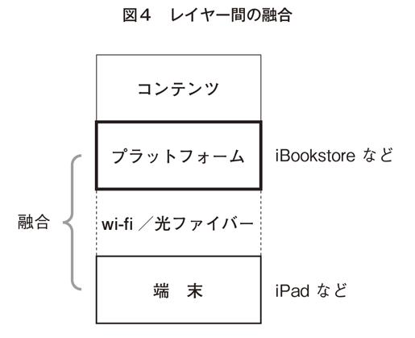

| アマゾン、アップルが日本を蝕む 電子書籍とネット帝国主義 (PHPビジネス新書) | |
| 岸博幸 | |
| PHP研究所 (2011) | |
アマゾン、アップルが日本を蝕
む
電子書籍とネット帝国主義
岸博幸
本書のタイトルを見て、奇異に感じられた方も多いのではないでしょうか。アマゾン、アップルというと、大成功した米国ネット企業の代表であり、ネット上でもっとも魅力的かつ便利なサービスや端末を提供する企業の代表だからです。
もちろん、私もその点には異論ありません。私自身、アップルのパソコンとiPhoneを愛用していますし、アマゾンも利用しています。自分の日々の仕事や生活の範囲だけで考えれば、アップル、アマゾン、グーグル、ツイッターなどの米国ネット企業は、絶賛こそすれど非難することなどできません。
しかし、それはあくまでユーザーの立場からの風景であり、ネットという限定された世界における評価にすぎません。実際、社会全体の観点からネットやそこで提供されるサービスを眺めてみると、また違った風景が見えてきます。
たとえば、２０００年代にネット・バブルが盛り上がる中、世界中で多くの人がネットやそこでのサービスを絶賛する一方で、マスメディアやコンテンツ産業の収益が急速に悪化し、世界の多くの国で文化とジャーナリズムが衰退を始めました。
こうしたネットの普及が社会全体にもたらす負の側面について、できる限り多くの人が正しい認識を持つことが必要ではないでしょうか。私が本書を書こうと思ったのは、そうした問題意識からです。
次に、本書の主な力点は電子書籍の問題の説明に置かれていますが、同時にネット全体の問題についても説明しています。二つの大きなテーマの両方について書かれていることを奇異に感じる方もいらっしゃるかもしれません。
しかし、そのような構成にしたのは、電子書籍に関する問題とフェイスブックに代表される今のネット全体の問題には共通する点が多いからであり、それにもかかわらず、電子書籍というネット上の一部分についてだけ説明するのでは片手落ちだし、ネット上で一番の問題である〝ネット帝国主義〟の本質が見えなくなるのでは、と懸念したからです。
そうした問題意識から、本書では欲張って両方のテーマについて説明しましたので、情報量がちょっと多いかもしれませんが、できる限り平易にネットの問題点が分かるように、かつ短時間で読み通せるように書いたつもりです。
私は、ネットの専門家ではありませんし、ネット・ビジネスに精通しているわけでもありません。ただ、ずっと官僚をやってきて、特に小泉政権時代にはマクロ経済運営や構造改革を担う立場にいたこともあり、社会や経済全般の観点から物事を捉えるのは得意なつもりです。
そうした観点からはネットや米国ネット企業がどう見えるのか、どのような問題点があると考えるべきなのかといった視点を提供するのは、ネット上のサービスが日本の社会の特質に合った形で進化し、ネットが正しい形で日本社会のインフラとなるためにも重要ではないかと思っています。
ただ、その結果、ネットの専門家が書く書籍や記事が常にネットや米国ネット企業を絶賛するのと比較して、本書の内容は正反対となっています。本書をお読みいただくと、私はネット否定論者のように見えるでしょう。
しかし、決してそうではないことを最初にお断りしておきたいと思います。むしろ私は誰よりもネットの持つ可能性に期待していますし、長期的にはネットが日本をもっと良くできると確信しています。デジタルやネットの技術自体は何も悪くなく、ネット上で支配的な地位を築いた米国ネット企業のやり方に問題があるだけなのです。
昨年は「電子書籍元年」と言われ、今年は「フェイスブック元年」と言われるなど、世界的に景気が回復しつつあるのと並行して、ネット上でも新たなバブルが始まりつつある予感がします。
そういうタイミングにある今こそ、一人でも多くの人が〝ネット帝国主義〟の問題点を正しく理解した上で、ネット関係者の方には日本型の正しいネット・サービスを生み出してもらいたいし、ユーザーの方には米国ネット企業のサービスを正しく使いこなしてもらいたいと思っています。
その意味で、本書は、特にこれから電子書籍に関わる出版関係者の皆さんにぜひともお読みいただきたいのですが、同時に、一人でも多くのネット・ユーザーの方々にも読んでいただければ幸いです。
２０１１年２月
岸 博幸
アマゾン、アップルが日本を蝕 む 目次
２０１０年は、さまざまな出来事があった年でした。日本では、首相の交代、参院選での民主党の大敗、普天間基地や尖閣諸島問題による安全保障問題の深刻化、デフレと円高による景気のさらなる悪化など、大変な出来事がたくさんありました。世界に目を転じても、ギリシャでの財政危機、北朝鮮による韓国砲撃、米国中間選挙での民主党の大敗など、やはりさまざまな出来事がありました。
それでは、インターネット（以下、本書では「ネット」と略します）の世界では２０１０年はどのような年だったでしょうか。ネット上でも、グーグルの中国撤退、iPadに代表されるタブレット型端末の普及、スマートフォンの普及、ウィキリークスによる米国務省の外交公電の暴露など、やはりさまざまな出来事がありました。
その中で、ネットの関連では電子書籍をめぐる盛り上がりもすごかったのではないでしょうか。米国と日本の双方で、ブームの域を超えて〝電子書籍バブル〟と言っても差し支えないくらいでした。
そのきっかけは、米国で２０１０年の春に発売されたアップルのiPadです。それを契機に、それまで出版ビジネスには縁遠かったネット企業、家電メーカー、通信事業者などが一気に電子書籍ビジネスに殺到したのです。それに突き動かされる形で、出版業界の側も動き出しました。その結果、電子書籍市場も急速に拡大を始めています。
たとえば米国出版社協会の発表によると、２０１０年の米国主要出版社による電子書籍の売上高は、前年比２・６倍の４億４０００万ドル（約３７０億円）になりました。書籍全体の売上げに占める電子書籍の割合も、前年の３・２％から８・３％へと急上昇しました。
日本でも、電子書籍の市場規模は２００８年度４６４億円だったのが、２００９年度には５７４億円に増加しています（インプレスＲ＆Ｄ調査）。同社は、今後も市場は拡大を続け、２０１４年度には１３００億円程度になると予測しています。
ちなみに、日本の紙の出版市場（書籍と雑誌の合計）は２００９年度で１兆９００億円でしたので、出版全体に占める電子書籍の割合は約５％です。
２００９年段階での日本の電子書籍市場は米国とだいぶ異なり、市場の約75
％がケータイ向けの電子コミックですが、今後はタブレット型端末など新しいプラットフォーム用の一般書籍の市場が急速に立ち上がると予測されていますので、米国ほどではないにしても、日本でもやはり電子書籍は普及していくと予想されます。
実際に、日本でも電子書籍が本格的に普及するかと思わせる動きが加速しています。
２０１０年の秋くらいまでは、電子書籍を読める端末はiPadとケータイ電話くらいでした。また、ネット上にコンテンツを出す出版業界の側の動きも、多数の企業が参加する業界団体的な協議会（日本電子書籍出版社協会、電子出版制作・流通協議会など）の発足や、個別に電子書籍ビジネスへの参入、ネット企業や通信事業者との提携を発表しているくらいで、いわば電子書籍という新しい市場での陣取り合戦をしている感じでした。
それが２０１０年の年末以降、一気にタブレット型端末のバリエーションが広がりました。ネット上で書籍を販売する電子書店についても、大日本印刷はＮＴＴドコモと、凸版印刷はインテルと提携して、またソニー、シャープ、ＫＤＤＩなど出版ビジネスにこれまで縁がなかった企業も電子書店を開設しています。
つまり、２０１０年の年末頃を境に、電子書籍ビジネスに向けた関係企業の動きは、それまでの陣取り合戦から具体的アクションへとステップアップしたのです。
そして、こうした電子書籍ビジネスの盛り上がりを受け、２０１０年はマスメディアにも電子書籍を特集する記事や番組が頻繁に登場し、そこではネット側の多くの関係者が「２０１０年は電子書籍元年」と叫んでいました。２０１０年は〝電子書籍バブル〟が一気に膨張した年だったと言えます。面白い偶然ですが、日本政府は２０１０年を〝国民読書年〟と定めていました。そういう年に電子書籍がこれだけ盛り上がったというのも、何かの因縁でしょうか。
ちなみに、出版業界の方の話を伺うと、「正確には２０１０年は〝４回目くらいの〟電子書籍元年」だそうです。日本では過去にも同じような電子書籍ブームが何度か起きていたのです。しかし、どれも肝心のコンテンツとなる電子書籍が揃わなかったこともあり、元年だけで終わってしまい、〝二年目〟は来ませんでした。
だからと言って今度も同じ運命をたどるなどと言う気はありません。かつてと今では、環境がまったく異なるからです。
まず、ブロードバンドや無線インターネットの普及があります。そして、ケータイ電話の普及により、多くの人が〝端末経由でコンテンツを楽しむ〟ことに慣れた（若い世代にとっては当たり前になった）という点も、過去と今回の大きな違いです。
ネット上のコンテンツ流通で圧倒的な強さを誇り、いち早く電子書籍のビジネスモデルも確立した米国ネット企業が、これから日本に進出してくるだろうという点も、大きな違いです。
アマゾンは、米国での電子書籍ビジネスの先駆けと言うべき存在です。２００７年に電子書籍専用端末キンドルを発売し、電子書店キンドル・ストアも開設しました。日本ではまだ端末も発売していないし、電子書店も開設していませんが、日本市場への進出に向けた動きは水面下で続いています。
アップルについては、タブレット型端末iPadはすでに日本でも発売していますが、電子書店iBookstoreはまだ日本の書籍を扱っていません。もちろん、アップル・ストアで単体のアプリとしてはさまざまな書籍がすでに発売されていますが、電子書店はまだ開設されていないのです。
グーグルは、グーグル・エディションという電子書店を２０１０年に米国で開設しましたが、その日本語版も今年中に開設されるようです。
これらの点を勘案すると、もしかしたら、２０１０年は本物の〝電子書籍元年〟と後世に語り継がれることになるのかもしれません。
ところで、２０１０年はネット全体でもさまざまな出来事があり、非常に盛り上がった年でした。一番重要なのは、パソコンとケータイの中間に位置するタブレット型端末の出現です。アップルのiPadが大ヒットして以来、たくさんのメーカーがタブレット型端末を発売・発表するようになりました。
同時に、スマートフォンの普及も本格的に始まりました。アップルが２００７年に発売したiPhoneがスマートフォンの元祖ですが、その大ヒットを受け、他のメーカーや通信事業者が続々と新しいスマートフォンを発売してきましたが、２０１０年になってユーザーの間でもスマートフォンが完全に定着した感があります。その証拠に、スマートフォンの世界出荷台数は今年中にパソコンを抜くと予測されています。
この数年の間にブロードバンドや無線インターネットの環境が充実し、クラウド・コンピューティング・サービスも普及したところに、これらの端末が急速に普及を始めた結果、パソコンよりもタブレット型端末やスマートフォンからネットにアクセスしてコンテンツを享受する人の数が、世界的に一気に増大しました。
さらに、２０１０年はグーグルの技術を使ったインターネットテレビが米国で発売されました。テレビの画面を通じてネット上の動画などのコンテンツも楽しめるようになったのですが、まさに〝通信と放送の融合〟そのものです。
テレビは、特に中高齢層にとって、コンテンツ消費という観点からは未だにメディア消費環境の中心にあります。ネットの側からすれば、パソコンやケータイの画面は制覇したものの、この一番大きい画面はこれまで進出できない難攻不落の場でした。そこにネットが進出できたというのは、非常に大きな意味があります。
それは、ユーザーの側にとっても大きな変化となります。これまでは、ネット上のコンテンツを楽しむのはパソコンかケータイという二つの画面を通じてでした。そのケータイの画面がスマートフォンの普及で大きくなった上に、タブレット型端末という持ち運びが容易でコンテンツを楽しむのに十分な大きさの新しい画面と、テレビという一番大きい画面が加わったのです。つまりユーザーは、今や四つの画面を持つに至ったのです。
かつ、日本ではまだ実現していませんが、米国ではこの四つの画面のどれでも、ネット上の動画でもテレビ番組でも同じように享受することができます。コンテンツを提供する側が「このコンテンツはどの端末で楽しむべき」と視聴スタイルをユーザーに強制することができなくなったのです。２０１０年は、ユーザーが画面の制約から本格的に解放された年と言えるのです。
その他にも、２０１０年はネット上でいくつかの大きな変化がありました。
その一つは、ＳＮＳ（ソーシャル・ネットワーク・サービス）の躍進です。特にツイッターとフェイスブックの成長には目を見張るものがあります。フェイスブックは全世界で約６億の加入者数を誇る世界最大のＳＮＳとなりました。ＳＮＳ上でのソーシャル・ゲームの隆盛も大きな話題となりました。
もう一つは、ネット広告の復調です。ネット・ビジネスにとってネット広告は重要な収入源であり、その趨勢はネット自体の盛り上がりにも大きく影響します。
ネット・ビジネスは、バブルの膨張と崩壊を繰り返して成長してきました。まず１９９５年から２０００年にかけてが第１次ネット・バブルです。そして、２００４年から〝ウェブ２・０〟という言葉の大流行に象徴される第２次ネット・バブルが始まり、２００８年秋のリーマン・ショックに端を発した経済危機とともに終焉しました。
その間、バブルの端境期を除いてネット広告の市場は急激な勢いで拡大してきましたが、２００９年は世界経済が深刻な危機にあったため、ネット広告が初めて前年比で縮小に転じたのです。
しかし、２０１０年になって世界経済が回復基調に転じるに伴い、ネット広告市場もまた拡大を始めました。その結果、世界最大の広告市場である米国で、２０１０年にネット広告（前年比14
％増で２５８億ドル）が新聞広告（前年比６・６％減で２５７億ドル）を初めて上回りました（２０１０年末段階での予測）。これは、ある意味で大変なことです。メディア大国である米国において、広告市場の規模でネットがテレビに次ぐ地位になったのです。
このように考えると、２０１０年は第２次バブル崩壊に伴って成長が一服したネットがまた新たな成長を始めた年でもありました。
以上のように、２０１０年のネットを振り返ると、電子書籍の盛り上がりに加え、タブレット型端末の普及、ＳＮＳの繁栄など、ネットのパラダイムシフトにつながり得るたくさんの重要な変化が起きたことが分かります。
その結果としてネットがさらに便利になるのは素晴らしいことです。ネットは今や、コミュニケーションの手段、そして情報／コンテンツの流通経路の中心になっています。さまざまな新しいサービスや端末が出現してネットがさらに使いやすくなること自体は、非常に結構なことです。
しかし、二度のネット・バブルの経験を冷静かつ客観的に振り返ってみると、ネットが必ずしも社会全体にプラスの効果ばかりをもたらしたわけではないことが分かります。
それは、ネット上に限定された部分解としては最適であっても、社会システムという全体解としては最適ではないという意味で、経済学が教える〝合成の誤謬〟（ミクロの視点からは正しくても、マクロの視点からは必ずしも望ましくない違う結果が生じることを意味する）に近い状態だと思います。
たとえば、マスメディアやコンテンツ企業は、ネットの普及に伴って紙や電波などの旧来の媒体の収益が急速に悪化する一方で、ネットからも大した収益を上げられないため、収益は一貫して大幅な悪化を続けています。
新聞を例に取れば、米国の新聞は購読料収入よりも広告収入のほうが圧倒的に多い収益構造になっていますが、ネット広告の収入は紙の広告の１／10
程度なので、いくらネット広告の収入が増えても広告収入全体は減り続け、前年比で２００８年は17
％減、２００９年は27
％減となっています。
また、音楽ビジネスを見てみると、米国のＣＤ売上げのピークは１９９９年ですが、その年と比べて２００９年の売上げはなんと70
％も減少し、音楽配信を加えても２００９年の音楽市場の規模は１９９９年の半分になっています。
このように、ネットが普及して情報／コンテンツの流通経路の中心となった副作用として、マスメディアやコンテンツ企業がこれまで支えてきた文化やジャーナリズムが衰退する、といった深刻な社会的影響が生じているのです。
たとえば、米国では新聞はローカル・メディアとして地域のジャーナリズムと民主主義を支えてきましたが、２００７年以降の４年間だけでも20
以上もの新聞社が倒産したり、紙の新聞の発行を停止したりした結果、地域のジャーナリズムに影響が生じています。
また、スペインはかつて世界の中でも活発な音楽市場の一つでしたが、２００９年のアルバム売上げ上位50
位にスペイン人のアーティストがまったく入っていないなど、音楽産業が崩壊状態にあり、音楽文化の衰退の危機に瀕していると言っても過言ではありません。
文化とジャーナリズムという社会のインフラの衰退という事態以外にも、たとえば匿名性を濫用した児童ポルノなどの犯罪行為やイジメの頻発、ネットの使いすぎによる若者の集中力の低下など、社会システム全体の観点から考えるとさまざまな問題が生じているのも事実です。
繰り返しになりますが、ネットが普及してユーザーが便利になること自体は、もちろん好ましいことです。しかし、ネットという部分が良くなっても社会システムという全体が良くなるとは限らないのです。
このように考えると、電子書籍の普及自体は良いことですが、それが社会全体にどのような影響を及ぼすかについても考えておかなくてはいけないのではないでしょうか。
過去のネット・バブルの際、ネット・ビジネスがマスメディアや音楽産業のコンテンツを取り込む過程で、それらの企業の収益が悪化するのに比例して文化やジャーナリズムの衰退が生じたことを考えると、同様に、電子書籍の普及は出版産業に何らかの変化を迫り、それが、出版産業が支えてきた〝出版文化〟にも影響を及ぼす可能性が高いと考えざるを得ないからです。
米国の電子書籍市場では、ネット帝国主義の旗手であるアマゾン、アップル、グーグルといったネット企業が流通を牛耳り、中心的な存在となっています。これらのネット企業が日本に本格的に進出し、日本の電子書籍市場を席巻したら、どのような事態が起きるでしょうか。
ユーザーの立場からすれば、米国ネット企業が日本の電子書籍の流通を牛耳っても困りません。欲しい書籍が手に入り、かつ価格が安ければそれでいいからです。
しかし、社会全体としては悪影響が生じかねません。過去のネット帝国主義的展開と同じ事態が出版ビジネスの世界でも起きるとしたら、出版産業の収益が悪化して、出版産業が支えてきた出版文化が衰退しかねないのです。
出版文化の重要性と、これから電子書籍の分野でも日本に上陸するであろう米国ネット企業の行動原理を考えると、単に「電子書籍万歳」と叫ぶだけでなく、出版産業や出版文化と電子書籍の関係を冷静に考え、電子書籍の普及が出版文化にどのような影響を及ぼすのかについて考えることは、国益の観点から重要ではないでしょうか。
ネット全体で考えると、ネット帝国主義が新たな進化を始めていることに留意すべきではないかと思います。
最初のネット帝国主義はグーグルが主導しました。オープンなネット上に点在するコンテンツやウェブサイトを探すために検索サービスを不可欠なものとすることで、急成長を遂げたのです。かつ、コンテンツは無料という価値観も定着させました。
そして、新たなネット帝国主義が数年前から勃興しました。それを主導したのはアップルとアマゾンです。電子ストアと専用端末を一体化させることで、ネット上に囲われた空間を創出してユーザーを囲い込んだのです。コンテンツは有料になりましたが、安価な水準に抑えられています。電子書籍はまさにここでの競争のフロントラインになるのです。
さらに、ネット帝国主義は新たな進化を遂げました。それを主導するのはフェイスブックやツイッターであり、ネット上に会員制の囲われた空間を創出するとともに、〝ソーシャル〟という要素を強調しつつ会員間での〝情報の過剰な共有〟を促進することで、ネット上に新たな覇権を築いたのです。
電子書籍の盛り上がり、タブレット型端末やスマートフォンの普及、フェイスブックの隆盛などのさまざまな出来事を個別に見ると、ネットが一層使いやすくなり、ユーザーが一層便利になるものばかりですが、一歩引いてビジネス的な観点から俯瞰すると、どれも米国ネット企業がネット・ビジネスの熾烈な競争を勝ち残るための新たな展開であると考えることができます。
それは、巨視的な視点で言えば、第２次ネット・バブル崩壊後の鎮静期間を経て、２０１０年から米国ネット企業によるネット帝国主義が新たな進化を始めたと理解することができるのです。
したがって、日本の社会システムという全体解の観点から、また日本の国益の観点から、日本としてどう新たなネット帝国主義と対峙するかを考えることが必要なのです。それはちょうど、昨年起きた尖閣諸島問題でも明らかになった中国の領土拡張的な動きに対して、安全保障の観点から日本としてどう対応すべきかを考えなくてはならないことと同じではないでしょうか。
本書は、このような視点から書かれているので、電子書籍やネットに関する他の本とはだいぶ内容が異なります。他の本では、電子書籍やフェイスブックといった新しいサービスがいかに素晴らしいか、どのように使うべきかといった、いわばネット上の部分解の観点から良い面、便利な面ばかりが書かれていると思います。
もちろん、私はそれらの本を否定する気は毛頭ありません。それらの新しいサービスが便利であることは間違いないからです。
ただ、ネット上の部分解の観点のみならず、社会全体という全体解の観点から考えるきっかけも必要という問題意識から、本書はあえて良い面の解説は捨象して、〝ネット帝国主義〟というキーワードを用いて、社会システムや国益といった観点からの問題提起を行っています。
そのため、第２章では、そうした観点から考えるために必要な基礎知識として、ネット・ビジネスの構造について説明します。
その上で、第３章と第４章では、電子書籍の普及がどのような問題を社会にもたらし得るのか、そうした事態を防ぐためには何をすべきなのかについて考えます。
そして、第５章と第６章では、ネット帝国主義の進化がネット全体にどのような影響を及ぼしつつあるのか、日本はそれにどう対峙すべきか、といった点について解説します。
電子書籍の実態と問題点を理解するためには、そしてネット帝国主義の新しい進化の実態を把握するためには、まずネット上のビジネスそのものの実態について理解しておく必要があります。
そこで、まずネット上のビジネスの基本的な構造を説明したいと思います。
ネット関係者やＩＣＴ政策に携わる政府関係者の間では、よくネット上のサービスの構造を４種類に分解して議論されます。そこでは〝レイヤー（層）〟という言葉がよく使われるのですが、サービスが地層のように積み重なって提供される姿をイメージしていただければと思います（図１）。
皆さんがネットにアクセスするときは、コンテンツの出口となる画面が必要です。パソコンやスマートフォンなどの携帯電話が使われることが多いのですが、この画面を提供するレイヤーが、レイヤー構造の最下層に位置する端末レイヤーです。
この端末レイヤーのすぐ上には、インフラ・レイヤーという層があります。ネット上でコンテンツを入手するためには、ネットに接続することが不可欠ですが、そのために必要な通信サービスを提供するレイヤーです。ＮＴＴなどの通信事業者やＣＡＴＶ事業者が、光ファイバーなどのブロードバンドや携帯電話網を通じて、ネットへの接続とコンテンツ／情報の伝送というサービスを提供しているのです。
そして、一番上の層がコンテンツ・レイヤーと呼ばれています。その名の通り、コンテンツを提供するところであり、テレビ番組や新聞記事、音楽や映画といったコンテンツはこのレイヤーから提供されます。コンテンツとは情報の中身を指すものとご理解いただければと思います。
そして、コンテンツ・レイヤーとインフラ・レイヤーの間に、プラットフォーム・レイヤーという層があります。〝プラットフォーム〟という言葉は分かりにくいと思いますが、電車の駅のプラットフォームをイメージしてください。駅では、自分が行く方向に応じて何番線のプラットフォームから電車に乗るかが決まりますが、基本的にそれと同じ役割をしてくれる層です。
ネット上には無数のコンテンツ／情報がコンテンツ・レイヤーから提供されています。そして、ネットはテレビと違って番組表など存在しませんし、新聞のように記事が整然と並べられているわけでもありません。そのため、ネット上で自分が欲しいコンテンツに行き着くために何らかの手助けが必要となります。そのようなサービス、皆さんがネット上でコンテンツにたどり着くために必ず使うサービスを提供する層であると考えてください。
また、皆さんがネット上で他の人とコミュニケーションを取るための場を提供してくれているのも、このプラットフォーム・レイヤーです。
つまり、皆さんがネット上で一番お世話になっているサービスが、このプラットフォーム・レイヤーのサービスなのです。皆さんがネット上で必ず使っているであろう検索サービス（グーグルやヤフーなど）、ＳＮＳ（ミクシィやツイッターなど）、動画サイト（ユーチューブやニコニコ動画など）、コンテンツ販売のストア（アップルのiTunes Store、アマゾンなど）は、プラットフォーム・レイヤーが提供するサービスの典型例です。
ちなみに、ネット上で不可欠な著作権管理や課金管理、さらにはクラウド・コンピューティングなどのサービスも、このプラットフォーム・レイヤーから提供されています。
まとめると、皆さんがネット上のコンテンツやサービスを享受するときは、
端末レイヤーの提供するパソコンなどを入り口にして、 インフラ・レイヤーの通信サービスを使ってネットに接続し、
インフラ・レイヤーの通信サービスを使ってネットに接続し、 プラットフォーム・レイヤーのサービスを使って欲しいコンテンツを探して、
コンテンツ・レイヤーが提供するコンテンツを楽しむ、というように、一番下の層から順に四つのレイヤーが提供するサービスをすべて使っているのです。
プラットフォーム・レイヤーのサービスを使って欲しいコンテンツを探して、
コンテンツ・レイヤーが提供するコンテンツを楽しむ、というように、一番下の層から順に四つのレイヤーが提供するサービスをすべて使っているのです。
ところで、たとえば10
年前、ネットが今のように普及する前はどのようにコンテンツを入手していたかを思い出してみましょう。
最新のニュースを知りたいときは、紙の新聞を読むかテレビでニュース番組を観ていました。最新の音楽を聴きたいときは、テレビやラジオで歌番組を視聴するか、ＣＤショップに行ってＣＤを買っていました。ネットが普及する以前は、伝統的なマスメディアの媒体か、コンテンツ産業が自ら提供する媒体（音楽ならＣＤ、映画なら映画館）を通じてコンテンツを入手・消費していたのです。
そして、それらのマスメディア（テレビ、新聞、雑誌など）やコンテンツ（映画、音楽など）の世界では、基本的に、テレビ局・新聞社・映画会社・レコード会社といった企業がコンテンツの制作から流通に至るまでのすべてを自分で行ってきました。
テレビ局は、番組の制作から電波に乗せてユーザーのテレビに届けるという流通までのすべてを基本的に自社で行っています。番組制作では外部の会社を使うことも多いのですが、その場合でも自社の人間を参加させるなどしてかなりの程度関与しています。
新聞の場合、新聞社の記者が情報の収集や記事の執筆を行い、社内で編集や紙面への割り付けを行い、自社の工場で多量の紙に印刷して、自社または委託先の配送網／販売拠点を通じて各家庭に毎日届けています。
音楽の場合、アーティストが所属する事務所は独立である場合が多いのですが、音楽の制作（曲作り、レコーディングなど）からＣＤへのプレス、ＣＤの販売店への配送といったプロセスはすべて、レコード会社（及び関係の深い会社）が一手に担っています。
このように、テレビ・新聞・ＣＤなどといった媒体ごとに縦割りに分けられた構造の中で、それぞれの媒体に属する企業がコンテンツの制作から流通までを一貫して担ってきたのです。ビジネスモデルの観点からは、こうしたマスメディアやコンテンツ企業は〝垂直統合型〟のビジネスを行ってきたと考えることができます（図２）。

そして、マスメディアやコンテンツの世界には大きな参入障壁が存在します。放送ビジネスに参入しようと思っても、電波の割り当てを受けるか、大資本を投下してＣＡＴＶ網を構築しない限り無理です。新聞ビジネスに参入しようと思っても、大規模な印刷工場や配送ネットワークを持つために大資本が必要ですので、簡単には参入できません。
その結果、マスメディアやコンテンツの世界では、媒体ごとに細分化された市場において、垂直統合型ビジネスモデルを展開する少数の企業がコンテンツの流通を独占してきたのです。独占市場においては超過利潤が発生します。かつてマスメディアやコンテンツ企業は高収益を誇ってきましたが、これは、良いコンテンツを制作してきたこともさることながら、コンテンツの流通を独占していたからこそ実現できたのです。
しかし、ネットの普及により、そうした状況は大きく変わりました。10
年前ならば、最新のニュースを見ようと思ったら、紙の新聞を読むかテレビのニュース番組を観ていました。しかし、今や多くの方がネットにアクセスして、検索サイトで知りたい事柄に関連するキーワードを入力してニュースを探すか、ミクシィなどのＳＮＳサイトかポータルサイトに並べられたニュースを読んでいるのではないでしょうか。
この現実がすべてを物語っています。特に若い世代にとっては、ネットがコンテンツを入手するメインの流通経路となったのです。コンテンツの流通経路として、ネットがマスメディア（紙の新聞・テレビなど）やＣＤ・雑誌などの媒体よりも中心的な地位を占めるに至ったのです。
それは、コンテンツの流通独占が紙や電波、ＣＤなどの従来の媒体からネットに移行したことに他なりません。この10
年でメディア全体の光景が大きく変わったのです。
ところで、コンテンツの流通経路としてのネットは、マスメディアや従来の媒体とは構造が大きく異なります。
ネット上では、動画や文字などの区別なくあらゆるコンテンツを同じデジタル・データで流通させられるので、媒体ごとの縦割りの流通構造を維持する必要はありません。ネットは、横割りの四つのレイヤー構造に基づく巨大な一つの流通経路となっているのです。
そして、ネットという流通経路の上では、大きな力関係の変化が起きました。マスメディアやコンテンツ企業は、ネットの外においては従来の垂直統合型ビジネスモデルの下でコンテンツの制作から流通までを一手に担っていますが、ネット上ではコンテンツ・レイヤーに属し、単にネット上にコンテンツを提供するだけの役割になってしまい、コンテンツの流通を支配する立場から陥落してしまったのです（図３）。
ここで、マスメディアやコンテンツ企業に代わってネット上でのコンテンツ流通を担うようになったのは、プラットフォーム・レイヤーに属するプレイヤーです。
それは、従来の媒体においてマスメディアやコンテンツ企業が長年にわたって享受してきた流通独占が、プラットフォーム・レイヤーのネット企業にシフトしてしまったことに他なりません。
大手スーパーストアとそこに商品を納入する会社の関係を考えればお分かりいただけるように、力関係では流通を支配するほうが強いです。つまり、ネット上ではコンテンツの流通独占がプラットフォーム・レイヤーのネット企業にシフトしたことにより、マスメディアやコンテンツ企業は非常に弱い地位に追いやられてしまったのです。
ちなみに、プラットフォーム・レイヤーとコンテンツ・レイヤーの違いがよく分からないと感じる方もいらっしゃると思いますが、明確な定義は存在しません。一般的には、プラットフォーム・レイヤーのサービスとはユーザーがネットを利用する際のベースとなるものを指し、基本的にネット企業によって提供されています。
ただ、たとえば米国ウェブサイトのユニーク・ビジター数（重複を排除したユーザー数のこと。同じ人が何度アクセスしてもユニーク・ビジター数は１となる）20
位までを並べてみた場合（表１）、いくつかのマスメディアのサイトが上位20
サイトに入っています。
このようなところは、ネット上の情報／コンテンツの流通のシェアを獲得したと考えられるので、コンテンツ・レイヤーからプラットフォーム・レイヤーに進出したと見なしてもいいのではないかと思っています。
ところで、ネット上のプラットフォーム・レイヤーでは、ネット企業の間で熾烈な市場シェア争いが展開されています。それは、このレイヤーが提供するサービスの多くが基本的に無料モデル（無料でサービスを提供して広告収入で利益を得る）というビジネスモデルを採用しているため、広告収入を増やすには市場シェアの拡大が不可欠だからです。
そのため、プラットフォーム・レイヤーでサービスを提供する企業は、現状で大きな市場シェアを獲得しているからと言って安閑としてはいられません。
たとえばＳＮＳで言えば、米国ではつい３～４年前まではマイ・スペースが一番人気だったのに、その後フェイスブックやツイッターが急成長し、今やマイ・スペースは見る影もありません。
だからこそ、プラットフォーム・レイヤーのサービスを提供するネット企業は、サービス内容をどんどん高度化して市場シェアをさらに高めようと必死になっています。
特に技術力の高さゆえにプラットフォーム・レイヤーで圧倒的な競争力を持つ米国のネット企業は、世界の市場に積極的に進出しています。ネット上はリアルの世界と違って国境が存在しないからです。
その結果として、気がつかないうちに憂慮すべき事態が起きています。それは、米国ネット企業による世界のネットのプラットフォーム・レイヤー支配です。
たとえば、日英独仏の四国での検索サービスに占める米国企業（グーグル、ヤフー、マイクロソフトなど）のシェアを見てみますと、（表２）のようになっています。一目見てお分かりのように、米国以外の主要先進国の検索サービス市場でも、米国ネット企業が軒並みほぼ９割のシェアを獲得しているのです。
ちなみに、日本の検索サービス市場で最大シェアを誇るヤフー・ジャパンは日本企業が筆頭株主ですが、グーグルの検索技術を使っていますので、技術レベルでは日本の検索市場でもグーグルが９割以上のシェアを獲得しているのです。
もちろん、世界のどこの国でも米国企業のシェアが高いわけではありません。たとえばアジア太平洋地域全体での米国企業のシェアは64
・０％（２００９年９月）です。ちなみに、韓国では12
・１％（２００９年４月）、中国では20
％強（２００９年４～６月）と、非常に低い数字になっています。
このように、国によって多少の差異はありますが、基本的な傾向としては、米国のネット企業が世界のプラットフォーム・レイヤーで圧倒的な市場支配力を発揮している、と言うことができると思います。
ネットというコンテンツの流通経路上では、マスメディアやコンテンツ企業による垂直統合型ビジネスモデルが崩壊し、水平分離型のレイヤー構造の下でプラットフォーム・レイヤーがコンテンツの流通を支配するようになりました。
その結果、コンテンツの流通独占に基づく超過利潤がマスメディア／コンテンツ企業からプラットフォーム・レイヤーのネット企業、特に米国ネット企業にシフトしました。
コンテンツを消費するユーザーの側からすれば、それで何の問題もありません。コンテンツの供給者がマスメディアでもネット企業でも、また日本企業でも米国企業でも、良いコンテンツが安く提供されればそれで良いのです。
それ自体は非常に正しいことです。ただ、同時に、多くの人が気づかないうちにその社会的な影響が大きくなっていることも事実です。それは一言で言えば、文化／ジャーナリズムの衰退です。
文化／ジャーナリズムは、社会のインフラとも言えるものです。そして、どの国においても、基本的にはマスメディアやコンテンツ企業が文化／ジャーナリズムを支えてきました。
質の高い文化／ジャーナリズムというのはコストがかかります。製造業とは異なりコストダウンは質の低下につながりますし、ある程度の無駄（お金や時間の無駄遣い）が逆に質を高める部分もあります。クリエイティビティや地道な調査が要求される点で、企業の研究開発投資と同じ要素を持っていると言えます。
そして、ネットの普及前は、マスメディアやコンテンツ企業がコンテンツの流通独占から得られる超過利潤をコンテンツ制作にふんだんに還元することで、そうした無駄を賄うことも含めて文化／ジャーナリズムを支えてきました。
マスメディアやコンテンツ産業で流通独占が生じることは経済全体の効率性を低下させますが、社会システム全体として見れば、そこで生じた超過利潤が文化／ジャーナリズムの維持に再投資されることで、コンテンツの拡大再生産が維持されてきたのです。
ところが、コンテンツの流通独占がネット企業にシフトする中で、過去十数年にわたり、新たに流通独占を獲得したネット企業の収益は年を追うごとに良くなるのに反比例して、マスメディアやコンテンツ企業の収益は悪化しています。
このため、マスメディアやコンテンツ企業は、これまでのようにコンテンツの制作に資金や人材などの資源をふんだんに回すことができなくなってしまいました。かつ、収益がどんどん良くなっているネット企業は、マスメディアやコンテンツ企業と異なり、文化／ジャーナリズムへの愛とかこだわり、さらにはそれを支えようとする気概はないと言っても過言ではありません。
特に、米国ネット企業の場合はそれがさらにひどくなります。当たり前の話ですが、米国ネット企業は他の国の文化やジャーナリズムへの愛など持っていません。コンテンツは自らのサービスのユーザーを増やすための〝エサ〟にすぎないのです。
つまり、社会システム全体として見た場合、マスメディアとコンテンツ企業の収益が悪化する中で、それらに代わって文化／ジャーナリズムを支える存在がなくなってしまったのです。こう言うと、ネットを支持する人たちから必ず出る反論は、
「デジタルとネットの力で〝一億総クリエイター〟の時代になっており、素人が文化を担う時代になった」
「２００９年のイランでの騒乱、２０１１年のチュニジアやエジプトでのデモの内情をマスメディアより早くツイッターが世界に報じたように、市民の力で報道はできる」
といった類いのものです。しかし、これらの主張は一見もっともらしく見えるものの、同意し難いと言わざるを得ません。
まず文化については、確かに誰でもコンテンツを創作できるようになったのは事実です。ニコニコ動画で人気のある歌い手さんなどを見ていますと、素人でも才能ある人はたくさんいますし、そういう人たちがデジタルとネットのおかげで創作に目覚めたのは素晴らしいことだと感じます。
ただそれは、デジタルとネットがコンテンツの創作というピラミッドの底辺を大きく広げたことを意味しています。これに対して、残念ながらデジタルとネットがコンテンツの中でもプロの世界、つまりピラミッドの頂点を引き上げたとは言えません。
むしろ、もしかしたらデジタルとネットは、コンテンツのピラミッドの頂点を引き下げている面もあるかもしれないことに留意すべきです。
たとえば、米国のミュージシャンでありビジュアル・アーティストであり、そしてコンピュータ科学者でもあり、〝バーチャル・リアリティ〟という言葉を普及させた人として有名なジャロン・ラニエー（Jaron Lanier）は、『You are not a gadget』という著書の中で以下のように述べています。
「デジタルやネットが普及し始めた１９９０年代後半から２０００年代後半にかけて作られたポップ・ミュージックには、独自のスタイルがない」
「かつては、10
年あれば音楽のスタイルはかなり進化した。たとえば10
年の間にブルースから現代ジャズへと流行が変わった。ビートルズが最後のレコーディングをしてから10
年後には最初のヒップホップの作品が現れた。しかし、１９９０年代後半から２０００年代後半の10
年で音楽の新しいスタイルは生まれていない。過去のスタイルをノスタルジックに再現しただけである」
「ネット上で〝斬新で革新的なポップカルチャー〟と言われるものは、ネット以前の文化のマッシュアップ（二つ以上のコンテンツを混ぜて新しいものを作り出すこと）にすぎない。ネットの普及に伴って文化は進化を止め、クリエイターは過去の文化を漁ってマッシュアップするしかできないかのようだ」
次に、ジャーナリズムについては、まず日本のジャーナリズムの質が低いことは事実です。日本のマスメディアの記者はジャーナリストではなく〝新聞社やテレビ局のサラリーマン〟ですし、記者クラブ制度の下では従軍記者ばかりになっているからです。
ただ、だからと言って素人の力でプロのジャーナリズムが代替できると断言してしまうのは、無理があるのではないでしょうか。ジャーナリズムとはすなわち報道ですが、報道には二種類あります。事実報道と調査報道です。前者については、素人の力である程度代替できるかもしれませんが、後者については素人には無理です。
調査報道というのは、地道な調査と蓄積の結果として初めて書けるものです。かつ、調査はネット上のデータベースを調べるだけでは不十分です。関係者への取材とか実地の調査とか地道な裏取りとか、リアルの世界での行動があって初めて可能になります。その際、調査対象の分野に通じていることも不可欠です。たとえば、政治の調査報道をやろうと思ったら、やはり政治の世界に精通していて、誰がキーパーソンであるか、誰が情報を持っていそうかなどの土地勘がなければ、情報は集まりません。
つまり、調査報道は素人には無理だし、データベースの情報だけからは決して正しい報道はできないのです。したがって、日本のようにジャーナリズムのレベルが低い国でも、プロのジャーナリストの存在はジャーナリズムの維持のために不可欠なのです。
文化／ジャーナリズムを維持するためにはプロのアーティストやジャーナリストが必要なのに、彼らをこれまで養ってきたマスメディアやコンテンツ企業の収益が悪化する一方で、新たな担い手となるプレイヤーが現れていない現状は、社会システム全体の観点からはかなり危機的と言わざるを得ません。
実際、文化／ジャーナリズムの衰退は深刻な影響を及ぼし始めています。その例をいくつか紹介しましょう。
米国では新聞は基本的にローカルメディアであり、地域のジャーナリズムと民主主義を支える点で重要な働きをしています。しかし、２００７年以降の４年間だけで20
以上もの新聞が姿を消してしまいました。新聞社自体が倒産した例もありますし、紙の発行をやめてネット上で記事の提供を続けている例もありますが、かつてのようにどの地方都市にも複数の地元紙が存在して紙でニュースを読めるという時代は終わったのです。
それが地元にどのような影響を及ぼしているでしょうか。たとえば、米国の地方都市シンシナティでは、２００７年に主要紙『シンシナティ・ポスト』が廃刊になりましたが、この廃刊が地元に与えた影響の調査結果を見ると、地元でのさまざまな選挙で投票に行く人の数が減少し、選挙に立候補する人の数も減少していることが明らかになりました。同紙の廃刊がシンシナティの民主主義のクオリティの明らかな低下をもたらしたと結論づけられています。
また、文化の面でもすでに深刻な影響が生じています。音楽を例に取れば、前述の通り、欧州の中でもスペインは音楽文化が盛んなところであり、音楽市場としても世界で10
位以内に入る大きな規模でした。
しかし、ネットの普及に伴い違法コピーが氾濫してＣＤ売上げは急減し、レコード会社の収益が急速に悪化したため、２００９年のアルバム売上げ上位50
位にスペイン人のアーティストがまったく入っていないなど、音楽産業が崩壊状態にあります。スペインの音楽文化は衰退の危機に瀕していると言っても過言ではないのです。
同様の事態はフランスでも生じており、たとえば同じ２００９年にフランス人アーティストがリリースしたアルバムの数は、前年比で60
％も減少してしまいました。
ここで、マスメディアとコンテンツ企業の収益悪化の要因を分析的に考えてみましょう。もちろん根本的な原因はコンテンツの流通独占を失ったからですが、その現実を正確に理解しておくことは、電子書籍との関係で出版産業の将来を考える際に役立つはずです。
ネットが普及した現在、マスメディア／コンテンツ企業のビジネスは、大別して〝リアルの世界のビジネス〟と〝ネット上のビジネス〟の二つに分けることができます。
〝リアルの世界のビジネス〟の中心は新聞での紙、音楽でのＣＤのように伝統的な媒体（流通経路）を通じてコンテンツをユーザーに提供するビジネスです。
ただ、リアル・ビジネスにはもう一つの領域があります。それは、コンテンツをユーザーに提供するというメイン・ビジネス以外の周辺ビジネス領域です。テレビ局が主導する映画制作がその典型例です。音楽の世界では、コンサート、ファンクラブ、アーティスト・グッズなどさまざまな活動がこれに該当します。
〝ネット上のビジネス〟とは、読んで字の如く、ネットを通じてコンテンツを提供するビジネスのことです。無料モデル、有料課金モデル、その両方を併用するモデルと、収益モデルには３種類のバリエーションが存在します。
それでは、マスメディア／コンテンツ企業の収益は年々大幅に悪化していますが、その原因は何でしょうか。それは、ユーザーが若者層を中心に従来の媒体からネットに〝逃げた〟ことです。ユーザーが逃げると、当然広告企業も一緒に逃げてしまうので、広告とユーザーの支払いの両方が減るからです。
一方で、周辺ビジネス領域については、マスメディア／コンテンツ企業の多くがその重要性を分かってはいるものの、まだ収益を補完するまでに至っていないというのが現状です。
もちろん、例外もあります。音楽産業がその典型例です。音楽産業では、いわゆる〝３６０度モデル〟というビジネスモデル（楽曲以外にコンサートやグッズなど、アーティストから派生するすべてのビジネスを強化する）を追求するとともに、ネット上ではコンテンツ・レイヤーにとどまらずプラットフォーム企業に進化しようとしています。
一方で、〝逃げた〟ユーザーと広告企業を追いかけて、マスメディア／コンテンツ企業は、特に米国では積極的にネットに進出しましたが、残念ながらここでの収益はそう大きくありません。メインビジネスの収入源を補えるようなレベルにはなっていないのです。
それはなぜでしょうか。ネット広告の単価が安すぎるからです。
米国でマスメディア／コンテンツ企業がネットに積極的な進出を始めたとき、ほとんどの新聞社とテレビ局は無料モデルを採用しました。しかし、その結果は悲惨でした。米国の新聞は日本よりも広告料収入への依存割合が高いのですが、ネットから得られる広告収入は紙の広告収入の１／10
程度です。なぜそのような結果になるかというと、ネット上の広告単価の体系がマスメディア／コンテンツ企業に不利になっているからです。
マスメディア／コンテンツ企業は、コンテンツをネット上で提供する際、ウェブサイトの空きスペースにバナー広告などの広告を入れて広告収入を得ます。つまり、ネットのレイヤー構造で言えば、コンテンツ・レイヤー上で広告スペースを提供しているのです。
しかし、検索連動広告などプラットフォーム・レイヤー上で提供される広告の単価はある程度の水準にあり、かつ上昇傾向にあるのに対して、コンテンツ・レイヤー上で提供される広告スペースの単価は、非常に低い水準にとどまっているのです。
その理由は簡単で、バナー広告などコンテンツ・レイヤーでの広告スペースの供給量が多すぎるからです。コンテンツ・レイヤーでは日々膨大な量の新しいウェブサイトが参入しているので、広告スペースの供給量も爆発的に増大しているのです。需要よりも供給の増え方が大きければ、広告単価は上がりません。関係機関の将来予測を見ても、バナー広告などの単価は今後も低下傾向にあります。
ネット上で思ったほど収益が上がらないもう一つの理由は、コンテンツの安売りです。
ウェブ２・０バブル以降ネット上では無料モデルが一大潮流となり、〝コンテンツは無料〟という認識が定着しました。ネット上でユーザーにコンテンツの対価を払ってもらうことが本当に大変になったのです。
それに加え、プラットフォーム・レイヤー上での激しい競争の中、プラットフォーム・サービスを提供するネット企業は、有料でコンテンツを提供する場合でも、その価格をできる限り安く設定することで市場シェアを高めようとしています。
その典型例はアップルとアマゾンです。たとえばアップルは、iTunes Storeを通じて音楽や映画などの配信を行っていますが、音楽の価格は一曲99
セントと１００円以下です。10
曲程度入ったＣＤアルバムが16
～17
ドルであるのと比べると、まさに価格破壊です。さらにアマゾンはそれ以上の安売りを常に仕掛けています。
このように、そもそも〝ネット上ではコンテンツは無料〟という悪しき習慣が根付いてしまったことに加え、プラットフォーム・レイヤーの企業の行動原理がウォールマートなどの大規模小売店と同じ〝安く大量に売る〟モデルであるため、ネット上で有料モデルでコンテンツを提供しようと思っても、その価格はリアルの世界に比べて格段に安くなってしまっているのです。
以上のように、マスメディアやコンテンツ産業が基本的には垂直統合型のビジネスモデルを前提としていたのに対し、ネット上では第２次ネット・バブルの時代に、レイヤー構造を前提とした水平分離型のビジネスモデルが主流となりました。
それを牽引したのはグーグルですが、その結果として確立された価値観は、オープン・インターネットと無料モデルです。
オープン・インターネットとは、文字通り〝開放されたネット空間〟を意味します。これに対峙する概念がクローズド・インターネットであり、第１次ネット・バブルの頃にはそれが主流でした。ＡＯＬなどのポータルサイトに代表される、ネット上にはあるけれど登録した会員しか入れない〝塀に囲われたネット空間〟のことです。
対してオープン・インターネットとは、情報／コンテンツの大海原です。そこには新聞のテレビ欄のように〝どこにどういうコンテンツがある〟という整理された見取り図は存在しません。
かつ、広告マネーが急激にネットに流れ込み、コンテンツを無料で提供することでユーザー数を最大化して広告収入を極大化するというアプローチが一般化して、オープン・インターネット上に情報やコンテンツがあふれるほど、そしてユーザーのネット利用が盛んになるほど、検索サービスをはじめとする情報／コンテンツの流通を担うサービスを提供するプラットフォーム・レイヤーの重要性は高まります。
つまり、オープン・インターネットと無料モデルという価値観の下で、プラットフォーム・レイヤーの米国ネット企業がネット上のコンテンツの流通を支配することで、ネット帝国主義の推進が可能となったのです。
ここで注意していただきたいのは、水平分離というネット上の構造はデジタルとネットという技術の特性から必然的に生じたものであるのに対し、オープン・インターネットや無料モデルという価値観はグーグルによって作られた人為的なものであり、技術の必然の結果ではないということです。
それを象徴するように、グーグルが作り出したこのネットの価値観もすでに変容を始めています。その一つは、ネット上での垂直統合の出現です。
プラットフォーム・レイヤーにおける米国ネット企業の競争は本当に凄まじいですが、その中でグーグルに対抗すべく、いくつかの企業はプラットフォーム・レイヤーと他のレイヤーの融合を進め、自社のプラットフォーム・サービスの魅力を高めるとともに、ユーザーを囲い込もうとしているのです。
その一つの例がアップルとアマゾンです（図４）。アップルは、iTunes Storeというプラットフォーム・レイヤーの電子ストアと端末レイヤーのiPad、iPhoneを融合させることで、サービスの魅力を高め、コンテンツ配信の中心的な存在となりました。

アマゾンのキンドル・ストア（プラットフォーム・レイヤー）とキンドル（端末レイヤー）の組み合わせも、電子書籍に特化しているものの、基本的には同様のアプローチです。
もう一つの例はフェイスブックなどのＳＮＳです（図５）。フェイスブックは、同社のサイトに関する技術情報を開示して、外部の企業がフェイスブックの会員向けにゲームなどのアプリを提供できるようにしました。
これは、レイヤー構造の観点からは、プラットフォーム・レイヤーがコンテンツ・レイヤーを融合させることで魅力を高め、会員を囲い込んでいることに他なりません。
ちなみに、ＡＯＬという米国のポータルサイトは、タイム・ワーナーとの合併が破綻した後、さまざまな分野のコンテンツ・サイトを買収し、今や90
ものコンテンツ・サイトを束ねる一大ポータルサイトとなりました。これも、プラットフォーム・レイヤーがコンテンツ・レイヤーを取り込んでいる好例です。
これら二つの類型に共通するのは、ネット上で垂直統合型のビジネスモデルを展開しているということです。ネットが水平分離を引っ提げて垂直統合型のマスメディアから流通独占を奪取した後に、今度はネットの世界の中で新たな垂直統合が始まっている、と理解することができます。
それは、グーグルが確立したオープン・インターネットへの競争上の対抗として、ユーザーを囲い込むクローズド・インターネットの動きが方々で進んでいると捉えることもできます。実際、２００９年後半以降、米国のウェブサイトへの訪問者数ではフェイスブックがグーグルを上回っています。クローズド・インターネットの成長は凄まじいペースで進んでいるのです。
そして、もう一つの大きな変化は、無料モデルの修正、つまりユーザーに対する課金の動きです。
２００８年秋にリーマン・ショックが起き、その後の経済危機とともに第２次ネット・バブルも崩壊しました。その影響は深刻で、２００９年は深刻な不況の中で企業が広告支出全般を大幅に削減したために、ネット広告の急成長も止まりました（表３）。
そうなると当然、ネット・ビジネスを展開する企業はネット上の収益モデルを再構築する必要に迫られます。まず動いたのはマスメディアです。そもそもネット上の無料モデルでは大きな収益を期待できないと分かり始めた頃に不況が直撃したので、ネット上のコンテンツを有料化し、ユーザーに対価を払ってもらう方向にシフトし始めました。
たとえば新聞では、新聞王ルパート・マードック率いる英語圏最大の新聞社ニューズ・コーポレーションが、有料化に成功した『ウォールストリート・ジャーナル』を手本に、傘下の新聞をネット上でもどんどん有料化しようとしています。『ニューヨーク・タイムズ』も今年春から有料化を始めます。
テレビでも、米国のネットワーク局３局（ＦＯＸ、ＮＢＣ、ＡＢＣ）が番組や映画を提供する動画サイトHuluが、２００８年のスタート以来維持している無料モデルに加え、２０１０年秋からユーザー課金モデルも始めました。
また、プラットフォーム・レイヤーの米国ネット企業も、ユーザー課金の方向を強めています。その代表はアップルとアマゾンです。電子ストアと端末を融合させたクローズドな経済圏において、コンテンツやアプリを廉価に提供し、かつワンクリックで購入できる利便性も加えることで、コンテンツの有料化とユーザー課金を実現しています。
同様に、多くのＳＮＳは、外部の企業が作ったアプリを会員向けに提供する中で、ソーシャル・ゲームにおけるアイテム課金に代表されるように、ＳＮＳの利用やアプリの最初だけは無料だけれど、アプリのレベルでユーザーに課金するようになっています。
ただ、２０１０年に景気が回復するとともに、ネット広告市場もまた急拡大を始めました。まだ正確なデータは発表されていませんが、前年比20
％以上増加したという推計もあります。そうなるとまた無料モデルが志向されるという動きも顕著になっています。
そう考えると、オープン・インターネットとクローズド・インターネットが混在する中で、収益モデルについては、今後は無料モデルと課金モデル、さらには広告と課金の両方で収益を得るハイブリッド型の収益モデルが混在していくことになるのです。
それでは、オープン・インターネットとクローズド・インターネットの本質的な違いは何でしょうか。
ユーザーの観点からは、第一に、ネット上の情報／コンテンツの発見方法が大きく変わります。オープンな世界ではグーグルの検索経由で探していましたが、クローズドな世界では、ＳＮＳ上の友人の紹介や、電子ストアでのアプリやコンテンツの購入によってめぐり合うことになります。
第二に、塀に囲われたクローズドな世界の中の情報は、オープンな世界とは差別化されることになります。その典型例はフェイスブックでしょう。フェイスブックの内部の情報やコンテンツはグーグルの検索結果に表示されないからです。
コンテンツを提供するマスメディアやコンテンツ企業の観点からは、クローズドな世界のほうがコンテンツを有料化しやすいのは事実です。もちろん、価格は極端に安いし、プラットフォーム・サービスを提供するアップルやアマゾンに価格の30
％を手数料として持っていかれる、という問題はありますが。
ただ、それでは今後はクローズド・インターネットが主流になるのかというと、そんなことはありません。ネット上のデータ量は日々すごい勢いで増えているので、オープンな世界は拡大こそすれど、縮小することはないのではないでしょうか。
つまり、今後当面の間ネット上では、オープンとクローズドが併存し、それを主導する米国ネット企業の間で、プラットフォーム・サービスをめぐるこれまで以上に激烈な競争が展開されることになります。
前章で述べたように、ネットがコンテンツの流通経路の中心となるに伴い、マスメディアとコンテンツ企業の収益が急速に悪化し、それらが支えてきた文化／ジャーナリズムという社会のインフラが衰退を始めています。コンテンツの流通独占がマスメディアとコンテンツ企業からネット企業にシフトしたことが、文化／ジャーナリズムに多大な影響を及ぼしているのです。
その原因は、コンテンツには二つの側面があるからです。一つは文化／ジャーナリズムを支えるという社会的な側面であり、もう一つはコンテンツという無体財の流通を通じて利益を得るというビジネスの側面です。
つまり、文化／ジャーナリズムとビジネスは、コンテンツをコインにたとえればその表裏の関係にあるのであり、社会システム全体の観点からは、その両者のバランスがうまく取れていることが望ましいのです。
逆に言えば、文化／ジャーナリズムの衰退という事態は、ネット・ビジネスばかりがもてはやされ、コンテンツの持つ二つの側面のうちビジネスの側面ばかりが重視され、両者のバランスが崩れてしまった結果として生じていると言うことができるのではないかと考えられます。
ネットに限定せず、それと同じようなことは他にも起きています。たとえば、テレビ局の最近のドラマの多くで、ストーリーよりも有名タレントのキャスティングが重視されている感がありますが、これはビジネスの側面ばかりが意識されているからです。その結果、映像文化の進化にあまり貢献しない作品が増えているのではないでしょうか。
それとは逆に、文化／ジャーナリズムの側面ばかりが強調されるのも問題です。たとえば、地方の伝統文化の多くで、ビジネスの側面がまったく無視され、古い伝統的なしきたりの維持という文化の側面ばかりが重視されています。
しかし、ビジネスの側面がまったく無視されるということは、現代にはまったく通用しないものを維持しているに等しいので、かつては時代の最先端だったはずの文化が進化を止め、今や伝統文化という名の遺物となってしまっている場合も多いのです。
つまり、マスメディアを含むコンテンツ・ビジネスに携わる者は、それがリアルの世界であろうとネット上であろうと、本来は文化／ジャーナリズムの側面とビジネスの側面の両方を意識すべきなのです。そして、それはコンテンツを制作する側のみならず、コンテンツの流通を担う側にも該当するはずです。
でも、コンテンツの流通独占を獲得した米国ネット企業は、コンテンツをプラットフォーム・レイヤーでの市場シェア獲得のための〝エサ〟としか扱っていません。
コンテンツを制作・提供するマスメディアやコンテンツ企業の側にも反省すべき点が多いことも事実です。それらの企業のネットへの対応を振り返ると、文化／ジャーナリズムを守るという観点からの戦略性に乏しく、むしろネット・バブルに乗せられてしまった面が大きいからです。
だからこそ、電子書籍というとネット・ビジネスとしての側面ばかりが強調されますが、出版産業は出版文化という大事な文化を担ってきたのであり、ビジネスというコインの片面の議論ばかりではなく、コインのもう片面である出版文化にどのような影響が生じるのかについても考えておくことが必要なのです。
そもそも〝出版文化〟とは何でしょうか。明確な定義が存在するわけではありませんが、この言葉は結構頻繁に使われます。
私は出版ビジネスの専門家ではありませんが、いろいろな文献を調べ、また多くの出版関係者の話を伺った結果、自分なりに解釈すると、出版文化とは「多種多様な出版物（書籍、雑誌など）が広くあまねく国民の間に行き渡り、国民や社会の知的水準の向上に貢献すること」を意味するのではないかと思っています。
ちなみに、出版文化と同様の意味を持つと思われる言葉に〝活字文化〟があります。「文字・活字文化振興法」という法律が存在し、その中で〝文字・活字文化〟とは、
「文章を読み、及び書くことを中心として行われる精神的な活動、出版活動その他の文章を人に提供するための活動並びに出版物その他のこれらの活動の文化的所産をいう」
と定義されています。この定義の後段が出版文化の範疇に入るのかもしれません。
いずれにしても、出版物が知的水準の向上にとって不可欠なのは間違いないのですが、〝知的水準の向上〟とは、個人にとってはさまざまな〝知〟を吸収してその頭の中でそれが体系化されることを、そして社会にとっては〝知〟が蓄積されて誰にでも利用可能となることを意味するのではないでしょうか。
その〝知〟の中身とは三つの要素、すなわち〝学問〟〝知識〟〝情報〟の三つに分解できると思います（図６）。
〝情報〟とはフローとして日々もたらされるものであり、かつては新聞やテレビなどのマスメディアが提供していましたが、今やネットがそれを提供する主役になりました。
これに対して〝知識〟とは、人類が長い歴史の中で蓄積してきたもの、〝情報〟のように断片的ではなく体系立った教えのことです。その中でも普遍的な価値観となったものが〝学問〟に昇華するのです。
そして、出版文化は、この〝知〟の３要素のうち〝知識〟と〝学問〟をカバーしているのです。かつ、国民の知的水準の向上は、民主主義の普及にとって不可欠であることを忘れてはいけません。出版文化は、他の文化以上に国民や社会のために重要な役割を担っている大事な社会のインフラなのです。
〝知〟の３要素のうち〝情報〟については、すでにネットがそれを国民や社会に伝える主体となることで、より多くより速く提供されるというプラス面と、情報を取捨選択してまとめるジャーナリズムの衰退というマイナス面が生じています。
そうした経験も踏まえ、電子書籍については、ビジネスの側面での成功ばかりを意識せず、社会のインフラであり民主主義の基盤でもある出版文化に悪影響が生じないよう、かつ出版文化がさらに発展するような方向での普及を目指すことが大事なのです。
それでは、出版文化を体現している書籍というコインの裏側に当たる出版ビジネスの構造を見てみましょう。
本書ではこれから電子書籍の問題点を説明するに当たり、電子書籍の先進国である米国と日本を比較していきますが、紙の書籍の出版ビジネスの構造は、日米であまり大きな違いはありません。
両国とも、まず著者と出版社が共同でコンテンツ（書籍、雑誌）の制作を行います。著者が一人ですべて制作する場合もありますが、書籍の企画や校正などの周辺作業は出版社が担う場合が多いのです。雑誌の場合は出版社が制作の中心になります。そこで作られたコンテンツは印刷会社によって大量に印刷され、書店に流通します。その流通の過程では、卸の機能を担う取次会社が全国の書店に流通させています。
以上を図示すると（図７）のようになります。書籍が読者の手元に届くまでには、たくさんのプレイヤーが関与しているのです。
それでは、これらのプレイヤーの間での収益配分はどのようになっているのでしょうか。標準的な決まりのようなものは存在しないので一般化しにくいのですが、まず米国では、ハードカバーの書籍の場合はだいたい以下のようになっているようです。
著者：15 ％
出版社：35
％
うち制作費３％
マーケティング４％
印刷・流通13
％
出版社利益15 ％
書店マージン：50 ％
これに対して、日本ではだいたい以下のようになっているようです。
著者：10 ％
出版社：60
％
うち制作費15 ％（初版のとき）
印刷費15
％
販売管理費20
％（在庫管理など）
出版社利益10 ％（完売時）
取次マージン：８％
書店マージン：22 ％
つまり、仮に印刷した部数が完売しても出版社の利益は定価の10
％しかありません。もちろん、人気のある書籍で２刷め以降については制作費がかからないので利益も増えますが、そのような書籍は少なく、初版のみで終わる書籍のほうが圧倒的に多いのです。
さらに言えば、書籍の平均的な返本率は40
％ですので、裏を返すと平均的な販売部数は印刷した分の60
％です。この場合、出版社の取り分は定価の36
％（60
％×60
％）しかありませんので、さまざまなコストを考えると赤字になってしまいます。出版ビジネスは、薄利で割の良いビジネスではないのです。
ちなみに、日本の出版ビジネスにおける独自の慣行として、再販売価格維持制度（再販制度）と委託販売制度というものがあります。
再販制度とは、書店で書籍や雑誌を販売するときは定価で売らなくてはいけない、という決まりです。新聞や音楽ＣＤなどでも同様の制度が適用されています。この制度があるから、米国のように店頭で書籍や雑誌の価格が割引されないのです。
書籍や雑誌に再販制度が適用されているのは、おそらく日本の出版文化の維持が目的だったと思われます。その適用が決められた１９５３年当時は正しい判断だったのでしょうが、現在はプラスとマイナスの両面があると言わざるを得ません。
いずれにしても、ネット上のｅコマース（アマゾンなど）で紙の書籍を買うときには再販制度は事実上なし崩し状態になっており、かつ電子書籍には適用されないことを考えると、いつまでこの制度を続けるべきかは悩ましいと言わざるを得ません。
次に、委託販売制度とは、書店で売れ残った本は返品できるという制度です。書店は、仕入れの段階で買い取っているわけではないのです。この制度の下では、まず取次が出版社から書籍を買い取ります。その後、書籍は全国に運ばれて書店に並ぶのですが、そこで売れ残った分については返品が可能なのです。
この制度が薄利の出版ビジネスの継続を可能にしている面があります。書籍の流れをお金の流れに置き換えると、書籍を取次が買い取った時点で出版社にはキャッシュが入ります。そして取次は、売れた書籍の分だけの代金を書店から回収するとともに、返品分の代金は出版社に請求するのです。
つまり、出版社の立場からすれば、たくさんの書籍を作れば当面の現金収入を確保できます。返品分の代金は後で払えばいいからです。逆に言えば、この制度があったからこそ、淘汰されておかしくない出版社も存続できている面があります。
この制度は、日本全体が貧しいときなどに出版文化を維持するためには必要だったと思いますが、文化も競争に晒されることが必要な時代にそれが望ましいかとなると、別問題ではないでしょうか。
ところで、日本の出版産業はすでに10
年以上の〝出版不況〟に見舞われています。
日本の出版市場の規模は、ピークの１９９６年（約２兆６５００円）以降毎年減少しており、２００９年に21
年ぶりに２兆円台を割り込んで１兆９３００億円にまで減少しました。電子書籍元年と騒がれた２０１０年も紙の市場は減少を続けて、１兆８７００億円になりました。わずか15
年で市場がピーク時の70
％にまで縮小したことになります。
その一方で、出版点数はこの15
年で増えています。市場規模がピークの１９９６年の６万３０００点だったのが、２００９年には７万８５００点にまで増えました。
これは、委託販売制度の下で多くの出版社がキャッシュを継続的に獲得するために、出版点数を増加させ続けたからです。それでも、長引く出版不況の中で出版社の自転車操業も限界に来たのか、２０１０年には７万４７００点に減少しました。逆に言えば、電子書籍元年と言われた２０１０年に、出版社はそこまで追い込まれていたのです。
ちなみに、出版不況の深刻さは、出版市場の規模以外にも表れています。たとえば、出版社の数は１９９７年がピークで４６１２社でしたが、それ以降は減少を続け、２００８年には３９７９社にまで減りました。ちなみに、その52
％は従業員数10
名以下の零細出版社です。
また、出版物の出口となる書店の数はもっと悲惨です。ピーク時の１９９０年代初頭には日本全国で約３万店の書店があったと言われています。それが、正確な統計が取られ始めた２０００年の段階で２万１６００になっており、それ以降も減少の一途をたどり、２０１０年には１万５３００にまで減少しています。書店の数はピーク時の約半分に、統計が取られ始めてからの10
年間でも30
％も減少しているのです。
このように、日本の出版産業はすでに10
年以上にわたって出版不況に苦しんでいます。そうした中で、これから電子書籍の洗礼を本格的に受けようとしているのです。
その電子書籍のビジネスモデルがどうなっているかを見てみましょう。
電子書籍の先進国である米国では、２０１０年秋の段階で出版市場の約９％が電子書籍と言われていますが、そこで電子書籍の流通を牛耳っているのはアマゾンとアップルです。正確な数字こそ存在しないのですが、２０１０年秋の段階で、電子書籍の売上げに占めるアマゾンのシェアは半分弱、アップルは20
～30
％程度という推測もあります。
残りはバーンズ＆ノーブル、ソニーなどが占めているのですが、２０１０年末にグーグルが〝グーグル・エディション〟という電子書籍サービスを始めましたので、今後はグーグルのシェアも大きくなると思われます。
それらの米国の電子書籍サービスの基本的なビジネスモデルは、図示すると（図８）のようになります。このビジネスモデルについて、二つの点に留意する必要があります。
一つは、紙の書籍のビジネスモデルとの違いです。紙の世界に存在した卸（取次）と書店という流通部分が一括してネット企業によって担われるようになっています。米国の電子書籍のビジネスモデルは、ネット企業が流通を全面的に支配する構造になっていると評価できるのです。
もう一つは、ネット上のビジネスモデルとしての評価です。アマゾンやアップルについては、ネット上ですでに展開されている垂直統合型ビジネスモデルと同じになっています。グーグルについては、プラットフォーム・サービスの電子書店だけが開設されているので、ネット上のグーグルのオープン型のビジネスモデルと同じになっています。
これに対して日本の電子書籍の現在のビジネスモデルは、基本的に紙の書籍と同じになっています。すでに説明したように、２００９年段階での日本の電子書籍市場５７４億円の３／４に当たる４２８兆円は携帯向けの電子コミックですが、この電子コミックのビジネスモデルを図示すると（図９）のようになります。
この図から明らかなように、米国の電子書籍と日本の電子コミックのビジネスモデルの違いは、取次という流通の卸の役割を担うプレイヤーがネット上でも介在していることです。しかし、図からは分からない、それ以上に大きな違いがあります。それは〝ネット上の書店〟の数です。
米国では、電子書籍も基本的には垂直統合型ビジネスモデルであり、アマゾン以下の５社程度で流通を支配していると見ることができます。リアルの世界にたとえて言えば、街の本屋がすべて潰れてしまい、大手の５社だけになってしまったのと同じです。
これに対して、日本の電子コミック市場では、コンテンツ・プロバイダーの数は３００社、サイトの数となると１１００も存在します。つまり、それだけ多くの書店がネット上に存在し、垂直統合型ビジネスモデルとはまったく異なる市場が形成されているのです。
電子書籍の望ましいビジネスモデルを考えるに当たって、実はこの違いが非常に重要になるのですが、その点を説明する前に、まず出版ビジネスを含む出版事情の全般について米国と日本がいかに異なっているか、そしてそれが出版文化のあり方にいかに影響を及ぼしているかという点について概観します。
前節で説明したように、紙の書籍のビジネスモデルについては、米国と日本であまり大きな違いはありませんでした。しかし、出版事情を比較してみると、両国の間でかなりの違いがあることが分かります。
ご承知のように米国は大きな国です。米国の国土は日本の25
倍、人口は２・５倍となります。それでは、書籍が市民の手に渡る〝出口〟の数はどうでしょうか。書籍の〝出口〟としては書店と図書館の二つがありますので、その両方について見てみましょう。
まず書店についてですが、米国の書店の数は日本よりも圧倒的に少ないのです。米国の書店の数に関する正式な統計は存在しないので、正確な数を把握するのはなかなか困難なのですが、さまざまなデータを突き合わせて計算すると、米国の書店の数は約９０００です。日本の書店の数が約１万５０００であることを考えると、書店の数は日本の６割しかないことになります（図10
）。
しかも、約９０００の書店のうち大学書店が４５００、キリスト教の専門書店が１７００ありますので、これらの特殊な書店を除いた一般書店の数は約３０００になります。一般書店の数で考えると、日本と比べて国土が25
倍、人口が２・５倍もあるのに、書店の数は１／５しかないことになります（ちなみに、いわゆる大資本によるチェーンの書店が１６００程度、日本で言う街の本屋さんに該当する独立系の書店が１４００程度です）。
米国の田舎町では書店は基本的にありませんし、地方都市でも書店を見つけるのは大変なのですが、それにしても人口が日本の２・５倍もある国で書店の数が日本の１／５しかないというのは、ちょっと驚くべき事実ではないでしょうか。
米国の書店の数が非常に少ないのは、かつて書籍は〝ブック・クラブ〟（書籍の注文販売を行う会員制の組織のこと。定期的にカタログが送られてきて、その中から選んで購入すると送られてくる）で購入するか、遠い本屋まで車で行って買うものだったからです。
今でこそ米国の大きな都市や郊外のショッピングセンターにはバーンズ＆ノーブルなどの大規模チェーンの書店がありますが、米国では、そうした書店で手軽に一般書が買えるようになったのは、この20
年くらいのことなのです。
それでも全米で一般書店の数は３０００しかないのです。しかも、電子書籍の普及に伴い書店の数は今もどんどん減少しています。
たとえば、今年２月になって大規模チェーン店の一つであったボーダーズが裁判所に破産法適用を申請しました。倒産したわけではないのですが、それでも全米に６７４もの書店を有していたボーダーズが経営危機に陥り、これから約２００の書店を閉鎖する予定なのです。
ちなみに、米国で電子書籍の最大手はアマゾンですが、ボーダーズは２００１年にそのアマゾンに、不採算だった書籍のネット通販部門を売り渡しています。アマゾンの成功を見て、ボーダーズは２００８年に書籍のネット通販を再度始めたものの、うまくいきませんでした。
アマゾンが紙の書籍のネット通販と電子書籍で繁栄を極めているタイミングで、アマゾン繁栄のきっかけを作ったボーダーズが破産法適用を申請したというのは、何とも皮肉なものです。
ちなみに米国の書店の数が少ないことの証左として、米国では未だに雑誌の売上げの７割は定期購読であり、郵送で購読者の家にまで配達されています。ついでに言えば、売上げの残り３割は店頭販売ですが、そのうち書店が占める割合は11
％にすぎず、店頭販売の９割は書店以外の場所（スーパーストアやドラッグストアなど）で売られているのです。
これと比べると、日本では、最近でこそ長引く出版不況の中で地方を中心に書店の倒産が増えていますが、それでも日本全国どこに行っても必ず街中に本屋さんがあります。
ｅコマースで紙の書籍を買う人が増え、またコンビニエンスストアで雑誌を買う人も増えています（今や雑誌の販売部数の２割程度がコンビニで買われています）が、それでも昔から今に至るまで日本では基本的に、書籍や雑誌は書店の店頭で中身を立ち読みして確認した上で買うものです。
それでは、書籍のもう一つの出口である図書館はどうでしょうか。図書館は公共性の高い書籍の出口であり、図書館の専門家の方は「図書館とは、書籍のストック化と共同利用を実現することを通じて社会における〝知〟の共同性を保証する仕組みである」と言っています。図書館は、出版文化のみならず民主主義の基盤としても重要な役割を果たしているのです。
一般市民が利用可能な図書館である公共図書館の数を比較すると、米国が９２００、日本が３２００ですので、米国の公共図書館の数は日本の約２・９倍と、人口比２・５倍よりも多いことが分かります。
ちなみに、一般市民が利用できない大学図書館の数は、米国が３８００、日本が１７００ですので、大学図書館の数についてはほぼ日米の人口比と同じとなります。
つまり、日本と人口当たりの数で比較すると、米国の書店の数は圧倒的に少ないけれど、逆に公共図書館の数は多いということになります。書籍の出口となる書店と図書館について、日米でこれだけの違いがあるのです。
次に、書籍自体についても米国と日本ではだいぶ特徴が異なっています。
形式要件から入りますと、書籍の価格は明らかに米国のほうが高くなっています。米国の書籍の平均価格はハードカバーで26
ドル（１ドル82
円で計算して約２１００円）、ペーパーバックで13
ドル（約１０００円）となっています。
米国には再販価格維持制度がないので、新刊書を中心に店頭で多くの本が割引で売られています。したがって、一概に比較することは困難ですが、それでも日本では新刊書でも米国のハードカバーほど高くはなく、だいたいが千円台で買えます。新書で８００円程度、文庫で５００円程度と、米国に比べるとかなり安価であると言うことができます。
次に、製本や装幀などの書籍の造りについてみると、米国の書籍はお世辞にも良いとは言えません。製本はかなりイマイチですし、すごくかさばります。私も留学時代、教科書や参考文献のあまりに重くてかさばるのにびっくりしたことを覚えています。
それと比較すると、日本の書籍の造りは素晴らしいの一言に尽きます。紙質は良いし、製本はしっかりしているし、装幀にもこだわっているし、文句なしの出来と言えます。コンパクトかつ軽いので、持ち運びも便利です。製造業一般の製品と同様に、日本人の緻密さやこだわりが反映された結果と言えるのではないでしょうか。
戦前の話になりますが、フランスの詩人ポール・クローデルが駐日フランス大使だったとき、日本で仏文の詩集を出版したのですが、当時の日本の装幀技術の粋をこらした造本の出来映えに驚嘆して、「日本は非常に古い文明を持ちながら、それを見事に近代文明に適応させた国である」と賞賛したほど、昔から日本の書籍の造りは優れているのです。
それでは、〝知〟の源泉としての書籍の位置づけはどうなっているでしょうか。この点についても、米国と日本では面白い違いがあります。
米国での書籍の位置づけについて、ある専門家の話を伺ったところ、「米国ではアングロ・サクソンのプラグマティズムの伝統を受け、言語は手段・コミュニケーションの道具と捉えられており、その延長で、書籍は〝分解できる小さな知の集合体〟と認識されている」とのことでした。
確かに米国の書籍は、特に専門書でなくても巻末に索引がある場合が多く、書籍の全体を通して読まなくても必要な〝小さな知〟を発見・吸収できるようになっています。
これに対して日本では、書籍は全体として著者の哲学・思想を反映したものであり、一冊の本はその全体が一体と認識され、最初から最後まで読み通すのが当たり前となっているのではないでしょうか。
また、別の専門家の方に言わせると「米国人にとって読書は消費と位置づけられている」とのことです。休暇にはリゾートに何冊も本を持っていって、読み終わったら捨てることも多い、とのことです。もちろん専門書以外の書籍についてでしょうが、確かに私も米国勤務時代にそうした光景を目撃したことがあります。
かつ、電子書籍に関する米国の報道で、特定の作者の電子書籍の値段が引き上げられたことに対して「それならもうその作者の本は読まない。他の作者の本を読む」といった読者のコメントが載せられていたのを何度も見たことがあります。これも、〝読書は消費〟というスタンスを表していると思います。
しかし、日本では、自分が好きな作者の書籍ならば値段はあまり気にせずに買うのではないでしょうか。関心あるジャンルで話題になっている本についても同様だと思います。かつ、日本人は、読み終わった書籍も基本的には蔵書として保存することが多いのではないでしょうか。
このように、書籍そのものについても、米国と日本では形式要件から扱い方までだいぶ異なっているのです。
それらの事実の延長として、出版文化の主たる担い手は米国と日本でだいぶ異なっています。
米国では、書店の数の少なさを反映して、大資本が書店の全米チェーン展開を行うまでは、多くの地域で一部の流通本以外は手に取って買うことができませんでした。こうした状況は、社会における〝知〟の普及や蓄積、個人の〝知〟の蓄積の観点からは大きなマイナスです。書店が存在しない田舎町や貧困層の家庭などが、そうしたプロセスから除外される可能性が大きくなるからです。
それに対して、公共図書館の数が非常に多いということは、公共図書館が社会における〝知〟のフロンティア機関としての役割を果たしてきたと考えることができます。
実際に、米国における図書館の位置づけは、近代欧州の〝知の公共論〟を反映しています。公共性の高い〝知〟については図書館が受け持ち、公共性とは一線を画す書籍については、民間の出版ビジネスに任せてきたのです。その意味で、米国ではかつて出版市場と図書館市場は完全に区別されていたと言うことができます。
もちろん、最近は両者の境界が曖昧になってきており、図書館がベストセラーものの書籍を備えて貸し出す動きもあるようです。しかし、その場合でも受益者負担などの歯止めはかかっているようです。
以上から、米国では出版文化の担い手については、図書館という公共的存在と書店を経由する出版ビジネスで分担されていますが、書店の数の少なさから、公共性の高い〝知〟を中心に図書館が主導的な役割を果たしてきた、と考えることができます。
ある意味、それは〝民主主義〟を社会の重要な価値観とする米国らしいアプローチと言えます。民主主義を貫徹するには、市民の間で〝知〟が共有されていないといけません。市民は知的でなくてはならないのです。そして、貧富の差が大きい米国社会において〝知〟の共有を実現するためには、知識の源となる書籍を誰でも見られる状態を実現する必要があるのです。だからこそ、対価の支払いが必要となる書店ではなく、無料で利用できる図書館の役割が大きかったと考えることができます。
実際、米国で初の公立図書館は、１７３１年にベンジャミン・フランクリンがフィラデルフィアに設立したのですが、フランクリンは自叙伝の中で、
「公立図書館の増加は、教育のみならず米国社会の民主主義のためにも重要な役割を果たしてきた」
「公立図書館は米国人の会話の質を向上させ、普通の商人や農民を外国の紳士と同じくらい知的にした」
と述べています。
そして、面白いのは、そうした思想が米国の書店のあり方にも反映されている部分があることです。
今は日本の書店でも、店内のところどころに椅子が置いてあったり、カフェが併設されていて、ちょうど図書館にいるときのように書籍をゆっくりと読むことができるようにしているところが多いですが、その元祖は米国の書店です。
実際に行かれたことがある方なら分かると思いますが、米国の書店では日本以上に店内にソファや座り心地の良い椅子がたくさん並べられていて、カフェもほとんど当たり前のように併設されています。
そして、日本の書店だと、そうした場所に座っている人は売り物の書籍を読んでいる（〝立ち読み〟ではなく〝座り読み〟）だけですが、米国の書店では、売り物の書籍を何冊も持ってきて、堂々とそれらを参考にしながら学校のレポートなどを長時間書いている人も結構います。もうこうなると、書店なのか図書館なのか分からなくなってきます。
米国の書店がこうしたユーザーの行動を許容するのは、図書館に対抗するためという面も多少あるのかもしれませんが、それ以上に、根本的に〝知〟は公共のものであり、市民が平等に分かち合えるべきという民主主義の考え方を反映しているのかもしれません。
これに対して、日本の状況はだいぶ異なります。日本では、出版産業が再販制度と委託販売制度で守られる中で、
ハードカバーで出版されたものが一定期間後に文庫でも出版される
新書で多種多様な内容をカバーする
古本屋が書籍のリサイクルの役割を担ってきたが、新古書店がそれに加わり、結果的に一層しっかりとした書籍の循環の体制ができた
という形ができあがっています。民間の出版産業が書籍のフローとストックの両方を担うという、自己完結的な産業構造となっているのです。
つまり、日本では図書館の数は少ないけれど、たくさんの書店が存在し、書籍も安価だし、かつ出版産業が書籍のストックの機能も担うことができたので、市民の〝知〟との接点を民間が主体となって提供することができたのです。
このように見ると面白いのは、よく経済に関しては〝米国は民主導で日本は官主導〟と言われますが、出版文化、つまり社会や個人への〝知〟の普及についてはまったく逆で、米国は図書館という官主導、日本は出版産業という民主導と考えることができるのです。
では、なぜ日本では民主導での〝知〟の普及が可能になったのでしょうか。それは、日本の出版文化の起源となる中世の時代から、民間がその主体となってきたからです。
歴史をたどりますと、日本では、鎌倉時代後期から室町時代にかけて木版印刷による量産が盛んになりました。
それが日本の出版文化の始まりですが、本格的に普及し始めるのは江戸時代になってからです。16
世紀末に活版印刷の技術が伝えられましたが、一字ずつ活字を拾う活版印刷よりも手軽で安上がりな木版印刷が出版の主流を占めました。
そして、江戸時代に入って社会が安定するに伴い、識字率の高さ（漢学と庶民のかな文字文化）も相俟って、仏典から源氏物語などの文芸書、さらには実用書に至るまで、活発な出版活動が上方を中心に始まりました。それを支えたのは、江戸時代を通して約６０００も存在した民間の出版業者（版元）です。ちなみに、17
世紀末の京都では１万点近い書物が出版されていたそうです。
そして、江戸時代中期になると出版の中心が上方から江戸に移り、多色刷り木版など独自の製版技術が開発され、出版業者が支える出版文化がいよいよ盛んになりました。
その後鎖国が解かれると、産業革命以降の高度な活版印刷技術が伝えられ、大量出版が始まりました。明治中期には年間数千点の書籍が出版されたそうです。
ちなみに、明治以降の教育政策は、かな文字文化を維持しつつ漢学から西欧の輸入学問へとシフトし、国語の普及と輸入学問の導入が行われたのですが、出版物がそうした中央の動向を地方に伝達するメディアの役割を果たしたそうです。
ちょっと長くなりましたが、以上が日本の出版文化の歴史の概要であり、いかに江戸時代から民間がその中心となって〝知〟を全国に普及させる役割を担ってきたかがお分かりいただけるのではないでしょうか。
これまで長々と日米の間での出版文化や出版事情の違いを説明してきましたが、それは、電子書籍のビジネスモデルのあり方を考えるに当たってはそうした文化的な背景を無視してはいけないからです。
すでに説明したように、米国の電子書籍のビジネスモデルの主流は、アマゾンとアップルによる垂直統合モデルです。電子書籍ビジネスのプラットフォームとして電子書店を開設し、かつ独自の端末をそれに融合させることで、紙の書籍での卸と小売に該当する流通部分を押さえています。クローズド・インターネットの典型とも言えるモデルが展開されているのです。
グーグルは、これとは異なり、プラットフォームとなる電子書店のサービスだけを提供するというビジネスモデルを採用しています。
そこで購入した電子書籍は、パソコン・スマートフォン・タブレット型端末のどれからも読めますし、チェーン店ではない独立系書店が自分のウェブサイト上でグーグルの電子書籍を売ることができるようにしています。グーグルは、オープン・インターネットの下で検索サービスと同じビジネスモデルによって、自分の電子書店のシェアを拡大しようと考えていることが分かります。
それにしても、米国企業の動きの早さには改めて脱帽するしかありません。２００９年の段階では、米国の電子書籍市場はアマゾンがほぼ独占していました。電子書籍端末はキンドル、電子書店はキンドル・ストアと、電子書籍の流通はアマゾン一社に独占されていたのです。
その頃は、書籍というコンテンツを提供する出版社は価格決定権などは当然なく、不利な取引条件をのまされていましたし、何よりもユーザーの側からすれば、ネット上に書店が一つしかない（！）という状況だったのです。
そこに、２００９年11
月にバーンズ＆ノーブルがヌーク（専用端末と電子書店）で参入し、２０１０年４月にはアップルがタブレット型端末iPadと電子書店iBookstoreにより参入しました。そして同年12
月には、グーグルがグーグル・エディションという電子書店で参入したのです。
このスピード感はすごいと言うしかありません。次章で詳述しますが、その結果として、電子書籍の流通経路の間での競争が激化し、コンテンツを提供する出版社の側がビジネス上多少有利な立場に立てるようになったのは、出版ビジネスの将来のために良いことです。
ここで、この米国の電子書籍のビジネスモデルは、米国の出版文化や出版事情に適合したモデルであることに留意すべきではないかと思います。
まず何より、電子書籍自体が米国の紙の書籍の持つ問題点を補う存在となっています。米国では書籍の値段が高く、特にハードカバーは持ち運ぶにはかさばりすぎます。電子書籍ならば、紙の書籍よりかなり安いし、かつ何冊でも持ち運べます。〝読書は消費〟という価値観からして、書籍の造りとか装幀には関心がないはずですので、一つの端末にたくさんの書籍を蓄積できるのも大歓迎のはずです。
そうした形式要件以外でも、主流となっている電子書籍のビジネスモデルは米国の出版文化に適合していると考えることができます。
すでに説明したように、米国では書店の数が少なく、かつては手に取って中身を見てから書籍を買うよりも、ブック・クラブに加入して通信販売で購入するのが一般的でした。つまり、ネット経由で書籍を購入するというのは、そもそも行動原理として理にかなっているのです。
次に、主な電子書店が五つくらいしかないというのは、日本的な感覚からは非常に少ないと感じますが、もともと書店の数が少なく、車で長距離を走って書店に行くような地域も多い米国では問題になりません。むしろ、もしかしたら米国の書店事情を考えると、これまでよりも恵まれた環境になったと言えるのかもしれません。
また、電子書籍に備わっている機能の全文検索についても、書籍は分解できる小さな〝知〟の集積であり、だからこそ最後に索引もつくという米国の書籍の位置づけを考えると、それがデフォルトで備わっているというのは非常に理にかなっていると言えます。
ネット上で展開されている電子書店はどれも、できるだけたくさんの品揃えを実現して、できるだけ安く多量に売るという、リアルの小売の世界で米国シェア第１位であるウォールマートのビジネスモデルと同じです。
〝読書は消費〟という出版文化の米国では、小売で一般的なビジネスモデルが出版ビジネスにもマッチするということなのでしょう。
付け加えると、グーグルが始めた電子書店も、米国の出版文化の考えからは理にかなっています。グーグルの電子書籍は３００万冊以上のカタログを有していますが、出版社から提供された有料の書籍は20
万冊程度です。残りは著作権の有効期間が終わった、いわゆるパブリック・ドメインのものなので、その多くが無料で提供されています。
つまり、グーグル・エディションは、〝知〟の社会での共有という出版文化の中心的な役割を担ってきた図書館と同じ機能を果たす面があるのです。
ちなみに、米国では、図書館も民間同様にしっかりと電子書籍への対応を行っています。これも、すでに説明したような〝知〟の共有による民主主義の貫徹という観点からしても、当たり前の対応と言えます。
以上から、米国での電子書籍のビジネスモデルは、米国の出版文化や出版事情と親和性が大きいことが分かります。
そうした出版ビジネスの背景を踏まえてビジネスモデルを構築したというよりも、結果的にそうなったという面のほうが大きいと思いますが、それでもそうした親和性が大きいというのは、米国での出版文化の維持という観点からは意味が大きいのではないかと考えられます。
それでは、米国で普及している電子書籍のビジネスモデルは、日本にも適合するのでしょうか。アップル、アマゾン、グーグルといったネット企業は今後日本でも米国と同じビジネスモデルを展開するでしょうが、それはどう評価すべきでしょうか。
ネットの専門家や評論家の立場からは、米国型のビジネスモデルがそのまま日本に来るのは大歓迎でしょう。ユーザーにとって悪くないことは間違いありません。わざわざリアルの書店に出向く必要はなくなるし、日本の電子書店に比べて価格も安くなる可能性が大きいからです。
しかし、そうした観点のみから考えるのはバランスを欠いていると言わざるを得ません。何度も強調しているように、書籍はその国の出版文化を支えてきた媒体であり、かつ出版文化のあり方は国によって異なるからです。
電子書籍のビジネスモデルがどうなるかは、日本の出版文化にも何らかの影響を与えるので、それは日本における〝知〟の普及や蓄積にも影響を及ぼしかねないことに留意すべきです。
そう考えると、日米の出版文化のあり方が明らかに違う以上、米国の電子書籍のビジネスモデルが日本市場にも適合すると考えるべきではないと思います。
日本の出版文化の特徴は、すでに述べたように、図書館という〝官〟よりも出版社や書店といった〝民〟がその発展を支えてきたことにあります。そこでは、たくさんの出版社が多様な〝知〟を創造するとともに、日本全国にあるたくさんの書店がその出口として機能してきたからこそ、社会や市民の知的レベルが高い水準に維持されてきたのです。
そのように考えると、最大の問題点として、米国のように主要な電子書店の数が五つ程度というのは、いかにも少なすぎるように思えます。日本の出版文化は、非常にたくさんの書店の存在によって支えられてきたからです。
こうした主張に対しては、電子書店の数が少なくてもそこで多種多様な書籍が入手可能なら問題ない、という反論は当然あり得ます。この点は非常に重要な論点を含んだ問題ですので、次章で詳しく説明したいと思います。
ただ、もちろん、日本の出版文化を今のままで維持しろという主張する気は毛頭ありません。それは、電子書籍の普及に関係なく、すでに日本の出版文化は衰退を始めていると考えられるからです。
本章で説明したように、日本の出版産業は十数年に及ぶ出版不況に直面しています。その結果、今や出版市場の規模はピーク時の70
％にまで縮小し、出版社の数も14
％減少しています。書店の数に至っては、ピーク時に比べて半減しています。
こうした出版産業の衰退は、当然ながら民主導で支えられてきた日本の出版文化にも悪影響をもたらしていると考えるべきです。再販価格維持制度と委託販売制度の下での書籍の粗製濫造によるクオリティの低下、ネットの普及に伴う特に若者の読書離れ（実際はそうなっていないという調査結果もありますが、書店の減少、ネット上のコンテンツという少ない量の文字の読書への慣れ、ネットの多用に伴う集中力の低下などは否定できません）などがその証左ではないでしょうか。
したがって、むしろ電子書籍の普及が日本の出版文化の再興につながる方向を目指すべきなのですが、その観点からも、アマゾン、アップル、グーグルのビジネスモデルには、やはり懸念すべき点がいくつかあると思います。
一つは、コンテンツの制作側と流通側との関係において、後者があまりに強くなりすぎると、制作の側が搾取されることになるのが、過去のネット帝国主義の展開の経験から明らかだということです。
特に、流通を支配する側が大量に安く売ることだけを目指すのはどうかと思います。ユーザーの観点からは安いのは短期的には良いことですが、書籍に限定せず、コンテンツの制作にはコストがかかりますので、無闇な安売りはコンテンツのクオリティに影響が生じるのみならず、多数の出版社や書店が存在し続けることは困難になります。
それはちょうど、米国で最大シェアの大規模小売店ウォールマートの大量に安く売るビジネスモデルが、納入する商品を製造する側を疲弊させるとともに、店舗を出した地域の小規模な商店をどんどん廃業に追いやっているのと同じです。
また、そもそも電子書籍サービスのプラットフォームとなる電子書店の中心が米国ネット企業になるというのはいかがなものでしょうか。
ネット・ビジネスとはすなわちコンテンツ・ビジネスに他なりませんが、コンテンツは文化を体現しています。しかし、米国ネット企業が他国の文化への愛や理解に欠けることは、ネットの普及に伴って世界中で文化とジャーナリズムが衰退を始めたという、これまでのネット帝国主義の経験から明らかです。
以上から、米国ネット企業が米国で普及した電子書籍のビジネスモデルをそのまま日本に持ち込むことは、日本の出版文化にとっては望ましいとは言えないと思います。
むしろ、日本の出版文化の特徴を考えると、電子書籍のビジネスモデルについては、書籍の出口となる電子書店が多様であるべきです。そして、電子書店というプラットフォームはできるだけ日本企業が担うべきですし、価格などの流通の条件も、コンテンツとなる書籍の拡大再生産が可能となるようにすべきではないでしょうか。
このように書くと、米国ネット企業が日本で電子書籍のビジネスを始めることに反対しているように見えますが、別に米国ネット企業の排斥を訴えているわけではないことをご理解いただければと思います。
この議論は、たとえて言えば貿易自由化の議論とまったく同じではないかと思います。現在、日本政府は貿易自由化を進めるべく、ＴＰＰ（環太平洋戦略的経済連携協定）への参加を目指しています。ＴＰＰとは、米国などのアジア太平洋９カ国間で締結しようとしている貿易自由化の枠組みです。
そして、ＴＰＰ参加に反対しているのは、農業自由化を拒む勢力です。貿易自由化の一環として農業も自由化したら、安い農作物が海外から流入して日本の農業は壊滅的な影響を受けると主張しています。
しかし、日本の農業市場を関税などで閉じ続ける限り、消費者は高い農作物を享受し続けなければなりませんが、それ以上に、農業の生産側と流通側が競争に晒されず、農業の非効率性が改善されないことになります。
かつ、日本の品質の高い農作物はアジアでも人気がありますので、人口減少により今後は国内市場が縮小することを考えると、将来的には今まで以上に日本の農作物が海外で売れるよう、国際競争力を高める必要があります。
したがって、本来は正しい政策と必要な予算措置により国内の農業の国際競争力を高めつつ、それと整合的なペースで貿易自由化も進めていくのが、日本の農業の将来のために必要なのです。
その際重要なのは、非効率な兼業農家よりも大規模農家を増やすということも市場メカニズムの観点から当然必要ですが、そうした観点ばかりに政策が偏りすぎないことです。それは、農業が日本の食文化という大事な文化を支えているからです。
今や日本の食文化は世界中で高く評価されています。裕福な中国人にとって、日本観光の主目的の一つは食になっていますし、昨年のミシュランのレストラン・ガイドで三ツ星（最高評価）を獲得したレストランの数は東京が14
、関西（京都・大阪・神戸）が11
と、世界最高となりました（世界の他の都市ではパリが９、ニューヨークが５、香港が３、ロンドンが２、ローマとサンフランシスコが１）。
そして、日本の食文化においては当然ながら食材となる農作物が重要な役割を果たしていることを考えると、仮に兼業農家や零細農家ばかりが作っているような農作物であっても、食文化の観点から重要なものについては、保護と強化が必要になります。
そのようにして日本の農業を強化した上で海外に市場を開放して、海外の安い農作物との切磋琢磨を通じてこそ、日本の農業の生産も流通も強くなるのです。
電子書籍についても同じことが言えるのではないでしょうか。米国ネット企業が確立した電子書籍のビジネスモデルは日本の出版文化にふさわしくないですが、でもそれが入ってこないようにしては、かえって出版市場における競争が進まず、出版文化が甘えで衰退するだけです。
文化は異なる価値観と常に切磋琢磨してこそ進化するものであることを考えると、出版産業の側が日本にふさわしい電子書籍のビジネスモデルを早く構築し、同時に米国ネット企業のビジネスモデルを迎え入れて、電子書籍の世界で切磋琢磨するのがもっとも望ましい姿なのです。
前章では、米国と日本の出版文化の違いを説明するとともに、米国で普及した電子書籍のビジネスモデルが米国の出版文化や出版事情に適合していることを説明しました。
しかし、もちろん米国の出版社は、そのビジネスモデルに全面的に満足しているわけではありません。米国の出版文化に適合している面があることは事実ですが、その一方で、ビジネスの観点からは多くの問題があるからです。ここでは、その問題点を概観します。
その一つは、電子書籍の価格と売上げの配分の問題です。この点については過去一年程度の中でだいぶ改善されていますが、その経緯は非常に示唆に富んでいますので、時系列的に見ていきましょう。
米国の電子書籍市場は、２０１０年４月にiPadが発売されるまでは、事実上アマゾンの独占状態でした。いち早く２００７年に電子書籍専用端末のキンドルを発売していたからです。２００９年の秋にはバーンズ＆ノーブルがヌークを発売したものの、アマゾンの牙城を崩すには至っていませんでした。
市場を独占していた頃のアマゾンの対応は、独占企業そのものでした。まず価格決定権を完全に握っていたのです。前述のように紙の書籍の平均価格がハードカバーで26
ドル、ペーパーバックで13
ドルであるのに対し、当時の電子書籍の価格は一番安いもので２・99
ドル、ベストセラーで９・99
ドルと設定されました。紙の書籍と比べてかなり安価に設定されていたのです。
アマゾンは、おそらくは電子書籍端末キンドルの普及のためでしょうが、ちょうど米国最大のスーパーマーケットであるウォールマートがＴシャツなどを安売りするように、出版文化という大事な文化を安売りしていたということになります。
ちなみに、ネット寄りの評論家の多くが「紙の書籍では印刷／配送／在庫にコストがかかるので価格が高くなるが、電子書籍ではそれらのコストがほとんどゼロになるため、価格は劇的に下がる」といった類いのことをよく言います。
この主張は直感的には正しそうですが、現実はだいぶ違います。たとえば米国の出版業界についての複数の調査結果によると、それら紙のコストは、小売価格の十数％程度にすぎません。ハードカバーで26
ドルのうち３ドル程度です。
そして、当時の売上げの配分はアマゾンが65
％、出版社が35
％でした。売上げの配分においても、流通を独占した強みを存分に発揮して、圧倒的に自社に有利な配分、事実上の搾取を行っていたのです。
アマゾンが圧倒的に強い立場に立ち、コンテンツを提供する出版社の側が弱い立場に置かれていたことを象徴する一つの出来事を紹介しましょう。
２００９年１月に、アマゾンが設定していた９・99
ドルという電子書籍の標準価格に対して、大手出版社の一つであるマクミランが反乱を起こしました。自社の新作書籍のキンドルでの販売価格について、９・99
ドルという標準価格を拒否して、12
・99
～14
・99
ドルの範囲で自ら価格を決定できるようにしろと要求したのです。
そして、両社の交渉が決裂すると、アマゾンは紙の書籍のｅコマースと電子書籍の双方でマクミランの書籍の販売を停止したのです。このアマゾンの対応への世論の批判が強まったことで、二日後にマクミランの主張を受け入れ、アマゾンは紙と電子の双方の書籍の販売を再開しました。
ちなみに、アマゾンには書籍や出版文化に対する愛や理解が欠如していることも、その際に明らかになりました。アマゾンは、マクミランの書籍の販売を再開した際に、その発表の中で以下のような発言をしています。
「マクミランの主張する価格は電子書籍としては不必要に高いと確信しているが、同社は出版している書籍について独占的な権利を持つので、主張を受け入れることにした」
「私たちは、他の出版社はマクミランのような行動を取らないと信じている。また、他の独立系出版社や出版社に属しない作家がこれを良い機会と捉え、魅力的な値段の電子書籍を代替的な選択肢として提供すると信じている」
これらの発言から、アマゾンは、自らが価格を決める権利があり、かつユーザーは著者や内容よりも価格で書籍を選ぶと考えていることが推測されます。米国では「読書は消費」と認識されているという背景から出た発言かもしれませんが、書籍についてもＴシャツなどと同様にユーザーは安いものを選ぶだろうと決めつけるのは、書籍が持つ文化という側面を無視しているか理解していないことの証左だと思います。
もちろん、アマゾンだけを非難する気はありません。アップルも音楽について同じようなことをしてきましたし、グーグルも検索サービスでコンテンツから搾取してきました。ネット上でコンテンツの流通独占を獲得したネット企業は同様の行動を取ってきており、アマゾンの場合はそれが書籍について表れたにすぎません。
しかし、アマゾンも、アップルがiPadを引っ提げて電子書籍市場に参入してくると、そうした強気の対応を続けるわけにはいかなくなりました。アマゾンによる電子書籍の流通の独占が崩れ、アップルという強豪との競争状態になるので、コンテンツ（電子書籍）の品揃えを充実させて、流通経路間の競争に勝つ必要があったからです。
そうした実態を反映し、iPadが発売された頃から、価格決定権について、アマゾンが価格を決める卸売モデルから出版社側が主導するエージェンシー・モデルへと移行しました。それでも、ベストセラーや新刊の電子書籍の価格はたいてい12
・99
～14
・99
ドルの間ですので、やはりできるだけ安くしたいという流通側の意向は働いているのではないかと思います。
かつ、その頃から、電子書籍の売上げの配分についても、アマゾンの独占時代のアマゾン65
％・出版社35
％から、アマゾンとアップルの双方について、電子書店（ネット企業）30
％・出版社70
％と大きく変わりました。
ちなみに、米国で最近始まった電子書店上での雑誌の定期購読でも、この30
：70
の配分は維持されていますが、電子書籍の分野で後発のグーグルは、おそらくシェア拡大を目指してでしょうが、出版社の取り分を90
％という破格の条件を提示しています。いかに電子書籍をめぐる競争が激化しているかを物語っているのではないでしょうか。
流通部分で競争が起きた結果、流通側が価格決定権を持ち売上配分も流通側に有利という、米国ネット企業による搾取の状況が多少は改善されたのです。
ちなみに、日本ではこの30
：70
の配分について、〝出版社側の取り分〟が70
％であるのにもかかわらず、著者の収入である〝印税率〟が70
％になったという間違った解説がされることが多いので、注意が必要です。
アマゾンの取り分が売上げの30
％に減少したからと言って、著者の取り分が70
％になるわけではありません。あくまで、コンテンツ制作側の取りまとめ的な立場にある出版社の取り分が大幅に増えただけであり、それがどう配分されるかは別の問題なのです。
それでは、電子書籍になって著者や出版社の収入は増えるのでしょうか。電子書籍が普及することで、価格は安くなるけれど著者や出版社の収入が増えるならば、電子書籍バンザイと声を大にして言えることになります。
すでに述べたように、米国での紙の書籍の平均価格は、ハードカバーで26
ドル、ペーパーバックで13
ドルです。そして、売上げの関係者間での配分がどうなっているかというと、もちろん決まったルールなどは存在しないのですが、米国の専門家が多数の出版関係社にヒアリングした結果の推計値は以下のようになっています。
＄26 のハードカバーの売上げの分配
＄13
・00
：書店に
＄13 ・00 ：出版社に
＄３・90
：著者のロイヤリティ（小売価格の15
％）
＄３・25
：印刷・流通・在庫
＄０・80
：表紙デザイン、編集などの費用
＄１・00
：マーケティング費用
＄４・05 ：出版社の利益（この中から人件費などの経費を支出）
つまり、ざっくりと言って、売上げの50
％が書店に、15
％が著者に、12
％が印刷・流通・在庫に行き、出版社の利益は人件費込みでだいたい15
％であることになります。
それでは、電子書籍の場合はどうでしょうか。30
：70
の売上配分の下での推計値は、以下のようになっています。
＄12 ・99 の電子書籍の売上げの分配
＄３・90
：電子書店（アマゾン、アップルなど）に
＄９・09 ：出版社に
＄３・25
：著者のロイヤリティ
＄０・50
：データのデジタル変換、編集などの費用
＄０・78
：マーケティング費用
＄４・56 ：出版社の利益（この中から人件費などの経費を支出）
つまり、これもざっくりと言って、売上げの30
％がネット企業に、25
％が著者に行き、出版社の利益は人件費込みでだいたい35
％であることになります。
もちろん、これらの数字はラフな試算であり、現実には出版社と著者の間の配分は契約によってさまざまなバリエーションがあるはずです。しかし、この試算から、著者の取り分も出版社の取り分も、そこまで大きく変化するわけではないことが分かります。
つまり、紙から電子になることで書籍の価格が半額になっても、著者や出版社の取り分が大きく増えるわけではないのです。その原因は、リアルの書店の取り分が非常に大きかったからです。
かつ、印刷・流通・在庫といった、ネット寄りの評論家が膨大だと決めつけている紙の書籍ゆえのコストは、米国では実は喧伝されているほどには大きくないことにも留意が必要です。実際、別の推計でも、それらのコストは書籍の価格の１割程度となっています。
それでは、日本における書籍の売上げの配分はどうなっているでしょうか。日本についても定式化された数字は存在しないのですが、紙の書籍については、一般的には以下のように配分されると言われています（大和証券キャピタル・マーケッツ調べ）。
１７００円の書籍の売上げの配分
３７４円：書店に
１３６円：取次に
１７０円：著者印税
４４２～４７６円：紙代、印刷・製本代、在庫・返品管理
５４４～５７８円：出版社利益（この中から編集・制作費、人件費を支出）
つまり、書店のマージンは22
％、取次のマージンは８％、著者印税は10
％、出版社の取り分は人件費を入れて30
％台前半です。
分類の仕方が米国とは異なりますので単純比較は難しいですが、この数字を米国の紙の書籍の配分の数字と比較すると、日本では書店の取り分が少ない一方、印刷・流通・在庫のコスト（取次マージンに印刷関係のコストを加えたもの）が高いことが分かります。
それでも、印刷から書店までという流通部分全体のコストは、比率的には米国とほとんど変わりません。出版社の純粋な利益も、米国で外注されているコストも内製化されていることを考えると、米国の15
％よりも少し多い程度ではないかと思われます。
それでは、この配分が電子書籍ではどのように変化するでしょうか。１７００円の紙の書籍が電子書籍では９００円に価格が低下した場合を仮定して、その配分は以下のようになると推定されています。
９００円の電子書籍の売上げの配分
２１９円：配信マージン
１７０円：著者印税
５１１円：出版社の利益（この中から編集・制作費、人件費を支出）
つまり、この推定の下では、電子書籍の流通に25
％程度が行き、著者の取り分は20
％弱、出版社の利益は50
％台半ばとなっています。比率的には流通の取り分が下がり、著者と出版社の取り分が増えましたが、価格が低下しているので実額で考えると、著者の取り分は変わらず、出版社の取り分は減少しています。
もちろん、この例は一つの試算にすぎません。しかし、米国と日本に共通して、紙の書籍が電子書籍になっても、たとえば著者の取り分が激増するといった世間でよく言われているような事態は起きない、ということはお分かりいただけるのではないでしょうか。
そして、米国の電子書籍のビジネスモデルには、もう一つ大きな問題があります。電子書店を運営するネット企業の側が購入者のユーザー情報を独占しているのです。
電子書籍に限らず、ネット上のコンテンツ・ビジネスでは購入者のユーザー情報は非常に重要です。それは、特定の分野のファンにさらに購入してもらう販売促進のために、そして広告効果が高いターゲット広告を展開する際に不可欠なデータとなるからです。
たとえば電子書籍で言えば、ある著者が新しい作品を発表したときは、その著者の過去の作品を購入した人のほうが、そうでない人よりも購入する確率は高いはずです。したがって、購入者履歴をデータベース化して、その著者の新しい作品の発表の際に告知すれば、営業戦略として不特定多数を相手にするよりも高い効果が期待できます。
そして、マスメディアでの不特定多数相手の広告と異なり、ネット上で広告を展開する際には、対象となるユーザーを絞り込んで高い広告効果を得ることが可能ですし、それこそがネット広告の特徴でもあります。そうしたネット上での広告展開のためには、ユーザーの行動履歴や購入履歴といったユーザー情報が不可欠なのです。
ところが、そのデータは、電子書店を運営するネット企業の側で独占され、電子書籍を提供する出版社の側には開示されていませんでした。これは出版社にとっては新たな所得機会の喪失を意味します。
特に電子雑誌についてはその影響が大きいはずです。雑誌の収入のうち、広告収入が占める割合は非常に大きいからです。米国の紙の雑誌全体の２００９年の収入を見てみると、購読料収入（ユーザーの支払う代金）が３億４７００万ドルであったのに対し、広告収入は１９４億５１００万ドルです。つまり、収入全体に占める広告収入の割合は、なんと98
％にもなるのです。
もちろん、紙の世界と電子の世界は同一ではありませんが、それでも特に雑誌における広告収入の重要性はそれほどまでに高いのです。ネット上ならばターゲット広告が可能であることを考えると、なおさらではないでしょうか。
逆に言えば、購入者に関するユーザー情報はそれだけ宝の山であり、だからこそ電子書店を運営するネット企業も自分で独占していたのです。
これに対して出版社の側が不満を表明し続けた結果、アップルは、アップルの電子ストア経由で雑誌や新聞の定期購読を申し込んだユーザーの名前やメールアドレスなどの情報を、ユーザーが〝明示的に許諾した場合に限って〟出版社側に提供するようになりました。
しかし、電子書籍ビジネスへの参入の後発組であるグーグルは、定期購読を申し込んだユーザーが〝明示的に拒否しない限りは〟同様の情報を出版社側に提供することにしているのと比較すると、すでに電子書籍の市場でシェアを獲得しているネット企業については、ユーザー情報の開示がまだ不十分と言わざるを得ません。
その他にも、米国の電子書籍のビジネスモデルにはいくつかの問題点があります。その一つは、流通の要である電子書店を担うのがネット企業である場合、出版ビジネスの世界の常識とはまったく違ったやり方で、電子書店で扱う書籍を決めかねないということです。特に、他国の書籍を扱う場合には、問題がより鮮明になります。
その弊害はすでに起きています。たとえば、日本で電子コミックを扱っている会社が、iPhone用のアプリとして電子コミックを提供すべくiTunes Storeに申請したところ、性的な描写があるもの、残虐な描写があるもの、暴力的な描写があるものなどは、アップルの審査を通らず却下され、iTunes Store上で販売することができませんでした。
しかし、その審査を通らなかった作品にどの程度問題があったかというと、女性の胸がハプニングで露出した場面、疫病で血が流れる場面などがあった程度のようです。日本の出版ビジネスの感覚では全然問題ないレベルです。
一方で、それらの電子コミック以上に表現に問題があると思われる米国の雑誌、書籍やアプリもたくさんありますが、それらはなぜかiTunes Storeで販売されています。
こうなるともう、どういう基準でiTunes Storeで販売するかどうかを決めているのか、まったく分かりません。アップルが審査の客観的基準を公開しない中で可否の判断が恣意的に行われているのは、問題ではないでしょうか。
もちろん、アップルが自らのプラットフォームで何を扱うかの判断は、ウォールマートがどの食料品や衣料品を扱うか自分で決めるのと同じであり、アップルの自由です。
しかし、書籍の場合には食料品などと異なり、表現の自由、国ごとの出版文化という要素が絡んできます。それらについて十分な見識のないままで過剰に抑制するのは、表現の自由を無視しかねない点では検閲ともなりかねませんし、他国の出版文化を理解しないままでの判断は、その国の社会にプラスになりません。
その一方で、出版文化や出版ビジネスに馴染みのないネット企業が書籍の流通を担うと、過剰な抑制とは正反対のあり得ない対応をしてしまうリスクも顕在化しています。
たとえば２０１０年に、村上春樹氏の話題作『１Ｑ８４』の中国語版が無断で電子書籍化され、アップルのiTunes Storeで販売されました。東野圭吾氏に至っては、作品を一切電子化していないにもかかわらず、数十作もの作品の海賊版がアップルのiTunes Storeで販売されていました。
もちろん、著者からの削除要請を受け、アップルは即座にこれらの海賊版の作品をiTunes Storeから削除しました。しかし、そもそも著作権侵害の海賊版を正規版と同じストアに陳列すること自体、出版ビジネスではあり得ないことですし、紙が電子になるからといって許容されることでもありません。
また、本件に対するアップルの声明などを見ていますと、ストアで販売するかどうかの審査に際して、海賊版を除外しよう、著作権などの権利問題をしっかりと確認しようという姿勢は見えません。基本的には、問題がある場合にクレームがくればすぐに対応する、というスタンスのように見受けられます。
このアップルの姿勢に業を煮やした日本の出版関連の主要団体は、改善策を講じるよう求める声明を出しました。そこでは、「（アップルのストアでは）明白な著作権侵害行為が横行している」「著作権侵害物の配信は違法行為の幇助」と主張しています。
こうした出版社の動きに対してアップル・ジャパンは「米国の本社で検討します」と回答していますが、これが米国ネット企業の本音ではないでしょうか。
もしアップルが日本の出版文化が米国と異なることを理解し、それを尊重しようと思う姿勢があるなら、アップル・ジャパンにローカルゆえの問題についてしっかり対応させるはずです。でも、実際は米国本社がグローバルな基準を作るのみで、個別に対応する気などないのです。
いずれにしても、電子書店で販売するに当たって基準が不明確な審査が行われており、かつ、著作権侵害などへの対応も基本的には事後対応というのは、出版文化を担う書籍の出口としてはいかがなものでしょうか。
米国の電子書籍のビジネスモデルについて、もう一つ問題と思われる点があります。それは〝serendipity〟の喪失の危機です。
読者の皆様はserendipityという英単語をご存知でしょうか。日本語に訳すと、〝思わぬものを発見する能力〟といった意味になります。そして、日本の出版文化においては、このserendipityが重要な役割を果たしてきたと言えるのです。
日本の出版文化は、官（図書館）よりも民（出版産業）が支えてきました。そして、民の中でも、たくさんの書店の存在が新しい〝知〟との出合いの場として、重要な役割を果たしてきたのです。
自分が書店に行ったときの行動を思い浮かべてください。まずは自分の目的の書籍を探して購入するでしょうが、その後、時間があれば書店の中をうろつき、気になる本があったら立ち読みしたりするのではないでしょうか。そして、これまではまったく関心のなかったジャンルの書籍でも、気になって買ってみて、読んでみたら面白かったという経験がきっとあると思います。それこそがserendipityなのです。
つまり、リアルの書店は、〝知〟の世界で思わぬもの、新しいものに出合う機会を提供してきたのです。〝知〟の範囲の拡大という観点で、民主導で出版文化が繁栄した日本においては、書店が重要な役割を果たしてきたのです。
そう考えると、米国型の電子書籍のビジネスモデルは、リアルの世界で豊富だった〝知〟のserendipityの機会を減少させる可能性があるのではないかと思われます。電子書店では、リアルの書店と異なり店内を勝手気ままにうろうろして、新しい〝知〟と出合うということは難しいからです。
こう言うと、必ず反論が出ると思います。電子書店では、レコメンデーション機能がたくさんの書籍を推薦してくれるし、書籍の検索機能もあるので、それがserendipityの機能を担うという主張です。しかし、そうした機能には限界があります。
レコメンデーション機能は、ユーザーが購入した本のタイトルなどをキーワードに関連する書籍を探しますので、どうしても購入した本と同じジャンルの書籍ばかりが出てくることになります。
かつ、書籍を検索する場合は、自分が知っているキーワードや著者名を入力することになりますので、自分がこれまでまったく知らない、興味も関心もなかった分野の新しい書籍に出合う可能性はかなり低いと言わざるを得ません。
つまり、電子書店では、自分がこれまで購入した本と同じジャンルの書籍か、自分の知識の範囲内のキーワードが関連する書籍か、売上げ上位10
位とかのベストセラーくらいしか、自分の目の前に現れないのです。
こうした現実を考えると、ネット上の電子書店では、リアルの世界の書店よりもserendipityのレベルが低下しているのではないでしょうか。
それでは、リアルの書店の数が少なく、電子書店の機能にも限界がある米国において、米国人はどうやって〝知〟のserendipityを実現しているのでしょうか。
米国における〝知〟の普及の中核を担った図書館で、それはある程度実現されています。もう一つは、新聞などにおける書評欄の充実です。米国の新聞を読むと分かるのですが、書評欄の充実ぶりは日本の比ではありません。かなり広範囲かつ詳細な内容となっており、かつ米国人はそれをかなり参考にしているのです。この辺にも、日米の出版文化の違いが表れているのではないでしょうか。
以上をまとめると、米国型の電子書籍のビジネスモデルには、前章で説明したように日本の出版文化や出版事情に適合しないという問題に加えて、
米国ネット企業のビジネスモデルが日本の電子書籍市場の流通を席巻すると、価格の決定権や売上げの配分権などについて流通側の力が強くなりすぎる
購入者に関するユーザー・データが出版社側に提供されないので、マーケティングや新たなビジネス展開などの点から不利になる
電子書店の側で基準が不明な審査が行われる結果、恣意的な書籍の選別が行われる可能性がある一方、海賊版が正規品と同様に販売されるなど、出版ビジネスの観点からあり得ない対応をされかねない
日本の出版文化の重要な特徴である、民間主導で実現されてきた〝知〟のserendipityが低下しかねない
といった問題点もあります。
こうした問題点から明らかになる米国型モデルの基本的な特徴は、流通による制作の支配であり、文化のクオリティの維持よりも品揃えの極大化と安売りになるのではないでしょうか。これから米国ネット企業が日本の電子書籍市場に本格上陸するというのは、米国最大のスーパーマーケットであるウォールマートが、それまでは大型のスーパーがなかったエリアに進出するのと同じなのです。
米国でウォールマートが進出した地方では何が起きたでしょうか。地元の商店街は衰退・崩壊しました。衣料品などを生産する地元のメーカーは、買い叩かれて収益を悪化したり、調達先を中国企業などに切り替えられて、やはり衰退しました。肉食獣に食い荒らされてしまったのです。
それを日本の電子書籍に当てはめて考えると、地元の商店街とは、リアルの世界の書店や日本企業が運営する小規模な電子書店であり、地元のメーカーとは書籍を制作する出版社なのです。
そうした点を踏まえると、米国ネット企業が日本に進出してきて、米国型のビジネスモデルがそのまま日本で展開され、日本の電子書籍の中心になったとしたら、日本の出版文化に対してあまり良い影響があるとは考えられません。
もちろん、だからと言って、米国型のビジネスモデルに対して国を閉じるべきと言っているのではありません。大事なのは、米国ネット企業ではなく日本のプレイヤーが、日本の出版文化や出版事情に適合した電子書籍のビジネスモデルを早く確立して普及させ、米国型のビジネスモデルと互角以上の競争を行えるようになることです。それはユーザーの立場から言えば、電子書店の選択肢のバリエーションが広がることになります。
もちろん、私自身、日本型の電子書籍のビジネスモデルの具体的な姿を持ち合わせているわけではありません。しかし、日本の出版文化や出版事情の特性を踏まえると、日本型のビジネスモデルが目指すべき方向性は、ある程度明確なのではないでしょうか。
つまりそれは、米国のような垂直統合型ではなく、水平分離型、より正確に言えば水平分業型のビジネスモデルのほうが望ましいということです。
なぜなら、日本の出版産業のビジネス構造がもともと水平分離型だからです。この点で、出版産業は他のマスメディアやコンテンツ産業と異なることに留意すべきだと思います。
第２章で説明したように、マスメディアやコンテンツ産業のビジネスモデルは垂直統合型です。制作と流通を基本的に同じ者が担ってきたのです。それが、ネット上では水平分離の現実に直面し、コンテンツ・レイヤーというレイヤーだけに甘んじざるを得なかった結果、マスメディアやコンテンツ産業の収益が悪化し、文化／ジャーナリズムの衰退が起きたのです。
これに対して出版産業のビジネスモデルはもともと水平分離型、正確には水平分業型であり、制作の側（出版社、印刷会社）と流通の側（取次、書店）が良いバランスでお互いを支え合うことで、民間主導の〝知〟の普及を実現してきたのです。
そう考えると、もともと水平分業型だった出版産業がネット上では垂直統合型になるというのは、他のマスメディアやコンテンツ産業とは逆パターンなのですが、やはり望ましいとは言えません。そこで米国のように流通側が強い力を持つようになったら、〝知〟の普及ではなく〝知〟の安売りばかりが進むのではないでしょうか。
〝知〟の安売りは絶対に避けなければなりません。それは、コストのかかる出版文化の拡大再生産を不可能にするからです。制作側と流通側の共存共栄が可能となるエコシステムが実現されなくてはならないのです。
水平分業型ビジネスモデルでそれが実現できるかはまだ分かりませんが、少なくとも、流通側が過剰な力を持つことは避けなければならないのではないでしょうか。
次に、水平分業型のビジネスモデルにおいて、特にプラットフォーム・レイヤーについては、多様な電子書店がネット上に存在するようになるべきではないでしょうか。
日本の出版事情の大きな特徴として、書店の数の多さがありますが、十年以上続く出版不況の影響で、リアルの書店の数はピーク時の半分になってしまいました。それを補完するためにも、ネット上では多種多様な電子書店が数多く存在することが大事ではないでしょうか。
その際、リアルの書店で実現されてきたserendipityをネット上の電子書店でどう再現・強化するかについて、常に意識することが必要不可欠です。このserendipityは〝知〟の普及という観点からは非常に重要だからです。
この点については、私も良いアイデアはありません。
ただ、たとえば街中などで聞こえてくる知らない音楽を検索して曲名を教えてくれる〝シャザム〟という米国のサイトでは、最新の楽曲をどんどんデータベースに追加するために、流行りそうな新曲を探すためのスタッフを大量に雇っています。こうしたスタッフは〝music sourcer〟（音源探し人とでも訳すのでしょうか）と呼ばれています。
また、ユーザーの好きな曲を解析して、それと似た曲を探して再生してくれるネット・ラジオの〝パンドラ〟という米国のサイトでは、解析のためのスタッフである〝musicologist〟（音楽解析士とでも訳すのでしょうか）を雇っています。
こうした事実からも明らかなように、良いコンテンツを探すためにはやはりソフトウェアではなく人力に頼る必要があることを考えると、電子書籍についても、さまざまなジャンルでの良書やお薦めの書籍を探して紹介してくれるガイドのような人を養成して、ネット上で活躍できるようにするのが望ましいのではないでしょうか。
また、電子書店における書籍の検索機能に意図的にノイズやランダム性を入れることで、ユーザーの予想を超えた書籍との出合いの可能性を少しでも高めるといった方法もあるのではないでしょうか。
そして、端末についても日本のメーカーが日本の書籍や雑誌に合ったものを今後とも積極的に開発することが期待されます。その際、日本では民間が〝知〟の普及を担う以上、ユーザーの使いやすさが最優先であることは当然であり、米国のアマゾンやアップルのように、プラットフォームの電子書店と専用端末を融合させる必要はありません。マルチ端末対応、つまり電子書店がさまざまな端末に対応し、ある端末から買った電子書籍が他の端末でも読めるようにするのは、当然のことです。
最後に、これも当然のことですが、ネット上のコンテンツ・レイヤーに位置する著者や出版社が手軽に多様な出版物を出版できるようにすることが必要です。その観点からは、ネット専門など多様な形態の出版社が現れるとともに、プラットフォームのたくさんの書店に円滑につなげるよう、リアルの世界での取次の機能を果たす者や、電子書籍のさまざまなフォーマットへの変換を容易にする者も必要となります。
こうした方向の日本型のビジネスモデルの確立を目指す際には、これまで日本の出版文化を支えてきた出版産業のプレイヤーが、中核としてそれを担うようになることが大事です。
電子書籍にはネットが関係する以上、ネット企業やＩＣＴ企業が重要な役割を果たすことは当然です。しかし、それらの企業は出版ビジネスや出版文化については素人であり、一歩間違えれば米国ネット企業と同様のことばかりをやりかねません。
だからこそ、これまで日本の出版文化を支えてきた出版産業の側、具体的には、出版社、印刷会社、取次、書店といったプレイヤーが、日本型の電子書籍のビジネスモデルの構築に当たって主体的な役割を果たすべきです。最近の電子書籍絡みの動きはまさにそうなっているので、それは望ましいことではないかと思います。
もちろん、こうした考えには多くの反論があると思います。「出版産業は規制に守られてきた既得権益である」「出版社は著者から搾取している」「電子書籍なら紙の印刷や流通が不要なので印刷会社や取次の役割はない」など、さまざまな厳しい声があります。
しかし、これらの意見は一見もっともらしいですが、ネットの視点のみから電子書籍を捉えていると思います。日本の出版文化や社会構造といった観点から見ると、違った見え方になるのも事実なのです。
たとえば、出版社は著者から搾取してきたでしょうか。書籍が完成して出版されるまでの過程では、企画・編集、校正、印刷・流通の管理、宣伝など、文章を書くという行為以外にさまざまな作業が必要となります。それらの作業をすべて担ってきた出版社が、それ相応の報酬を得るのは当然です。
電子書籍になったら印刷会社や取次は不要というのも、物事を単純化しすぎているように思えます。印刷会社は紙への印刷以外にも、デザインや書籍の版組みなど出版社を補完するさまざまな業務を行っています。電子書籍でも、それらに類似した作業（書籍の内容の電子データへの変換など）は必要になるのです。
また、電子書籍の日本型ビジネスモデルが多数の電子書店を必要とするならば、ネット上でも取次と同様の機能を果たす者が必要になります。それをネット企業とリアルの世界の取次のどちらが担ってもいいのです。
ちなみに、極論を言えば、印刷会社はこれまで出版社を補完する役割を果たしてきたのですから、ネット上では役割を進化させて、出版社が担ってきた機能を果たすようになる可能性も十分にあります。当然、逆もあり得ます。同様に、これまで流通を担ってきた取次がネット上で電子書店を開設することも可能なはずです。
要は、紙の出版の世界の役割に拘泥して特定のプレイヤーがネット上で不要というのは意味がないのです。逆に、紙の世界で出版文化の一翼を担ってきた経験がネット上で活きる可能性のほうが高いし、それを否定するのはおかしいのです。
もちろん、だからと言って、これまで出版産業で活動してきたすべてのプレイヤーが電子書籍ビジネスでも生き残れるようにするべき、と言う気はありません。
マスメディアほどでないにしても、紙の時代の出版産業にはある程度の参入障壁がありました。印刷や流通といった部分には特にそれが当てはまります。しかし、電子書籍の世界では、そうした参入障壁が取り除かれ、他業種からの電子書籍への参入が容易になるからこそ、日本の出版文化を担ってきた出版社、印刷会社、取次、書店といったプレイヤーは、電子書籍の世界でこれまで以上に頑張らなくてはならないのです。
巷のＩＴ評論家のように根拠なく「出版社は遠からず潰れる」などと言う気はありませんが、努力を怠り、「自分たちしか良い書籍を作れないんだから」とか「自分たちのペースでゆっくりやっていけば」と考えていると、確実に淘汰されることになるでしょう。
そう考えると、心配になるのは、出版産業の関係者の意識が、既存の紙の書籍や雑誌を電子化することばかりに集中しているように感じられることです。しかし、媒体が紙から電子に変わることで、表現の幅は格段に広がり、編集や出版の概念も変わるはずです。たとえば、ネット上のブログやツイッターでのつぶやきだって出版の一形態になり得ます。
実際に米国では、電子書籍上では紙の書籍を電子媒体に置き換えるという一対一対応の先を実現できるはずだという考えから、〝雑誌の記事よりは長いけれど小説よりは短い〟微妙な長さの電子書籍を、数ドルという低価格で販売する出版社が増えてきています。
ある意味では、電子書籍の普及に伴って書籍の概念が進化を始めていると言うことができますが、そうした潮流を捉え、アマゾンはすでに今年１月からそうした書籍を〝キンドル・シングルズ〟という名前の下で１冊１～５ドルで販売しています。
そうしたダイナミックな取り組みを行わず、紙の延長でしか電子書籍を考えないなら、所詮は紙の出版市場が電子媒体に置き換わるだけです。それでは、今の出版不況から抜け出すのは困難ですし、読者に、端末やサービス以外で新しいものが出てきたというワクワク感や知的興奮を与えられません。
それでは、媒体が紙から電子に移行するという出版産業での数百年ぶりの変革にもかかわらず、日本の出版文化がそれをきっかけにさらに進化や発展を遂げることは不可能かもしれません。
そう考えると、日本の出版産業のプレイヤーはもっと頑張らなくてはならないのですが、まず最初に必要なのは、出版産業のプレイヤーがもっと団結して電子書籍ビジネスに対応すべきということです。
昨年の電子書籍ブーム以来、出版産業の電子書籍への対応は、関係者で協議会を立ち上げる一方で、ビジネスの動きとしては外部のネット企業などと組んで個別に電子書店を開設する程度になっていて、どうも電子書籍ビジネスでの陣取り合戦ばかりになっている感じがします。
しかし、日本の出版産業が電子書籍で対峙する最大のライバルは、アップル、アマゾン、グーグルといった米国ネット企業です。グローバルな競争的な市場で鍛えられ、日本の出版文化にはそぐわないビジネスモデルとは言えサービス内容は高度ですし、品揃えも豊富です。たとえばグーグル・エディションは３００万冊の書籍を有しています。
それに対して、日本の出版産業のプレイヤーが個別に開設している電子書店は、サービスも米国ネット企業ほど洗練されていませんし、品揃えもせいぜい数万～十万冊程度にすぎず、規模が違いすぎます。
ネット上で出版産業のプレイヤーが個別ばらばらに行動して小さな電子書店を始める程度でしたら、米国ネット企業が本格的に日本に進出してきたらどうなるでしょうか。日本の電子書籍市場が米国ネット企業に一気に席巻されてしまう可能性が高いのではないでしょうか。日本の電子書店はプラットフォーム・レイヤーの中で埋もれてしまい、日本の電子書籍ビジネスの中枢となるのは難しいのではないでしょうか。
それはいわば、これから米国最大手スーパーマーケットのウォールマートがある地域に進出してくるのに、その地域の商店街の中では、個別の小さな商店が一人でウォールマートと対決しようとしているのと同じです。
日本の出版文化を守る観点からは、日本型の電子書籍のビジネスモデルが確立されることが必要である一方で、プラットフォーム・レイヤーが寡占性を有する〝winner takes all〟の世界であり、そこでは〝first-mover advantage〟が大きいことを考えると、米国ネット企業が本格的に進出する前に出版産業全体として〝やるべきことをやってしまう〟ことが不可欠なのです。
それでは、〝やるべきこと〟とは何でしょうか。電子書籍のビジネスについての関係者の足並みを揃えることです。
もちろん、具体的なビジネスの中身については個々の企業が独自に創意工夫をこらすべきです。しかし、たとえばネット上での各社の電子書籍への入り口を共通にするなど、もう少し統一的な行動を取らないと、日本型ビジネスモデルが主流になるのは難しいかもしれません。
ネットのリアリティは残酷です。特にコンテンツの流通を担うプラットフォーム・レイヤーのサービスは、検索やＳＮＳなどの実態からも明らかなように、ごく少数のプレイヤーで市場シェアの大半を獲得する傾向があります。
そのような特性を持つネット上において、出版社や書店などが個別に電子書店を開設するだけで十分なユーザーを集められるのか、米国ネット企業の洗練されたサービスに勝てるのか、と懐疑的にならざるを得ません。
もちろん、出版産業の側からすれば、これまでデジタル・コミックではそのアプローチである程度成功したという意識があると思います。しかし、主に携帯端末が対象で、しかもマンガに特化した市場は、ある意味でニッチな市場です。かつ、そこには米国ネット企業は進出していないことを考えると、参考にはならないと思います。
だからこそ、出版産業がまとまって、個別の電子書店に共通の入り口を作るなどの産業全体としての工夫を行うことにより、日本型の電子書籍サービスが日本のネット上のプラットフォーム・レイヤーで確固たる地位を築けるようにすべきではないでしょうか。
そうした点で出版産業が参考にすべき前例は、音楽産業です。
音楽はすべてのマスメディア／コンテンツの中でもっとも早くネットの洗礼を受けました。そして、音楽産業はネットへの対応を誤ったために、違法コピーの氾濫や、アップルに音楽配信のプラットフォームを取られるなどの過ちを犯した、とよく言われます。米国でマスメディアやコンテンツ産業のネット対応が議論される場合、「音楽の失敗は繰り返すな」と必ず言われるほどです。
しかし、日本の音楽産業について言えばむしろ逆であり、比較的上手に対応したと評価できるのです。ネットの初期である１９９５年からレコード会社は積極的にネット配信に乗り出しましたが、各社バラバラではなく、共同で設立した会社が各社の楽曲を配信したので、日本のプラットフォーム・レイヤーで確固たる地位を築くことができたのです。
だからこそ、アップルは米国の音楽小売全体（ＣＤと音楽配信の合計）の中で最大のシェアを誇っていますが、世界第２位の音楽市場である日本では、大きな市場シェアを獲得するに至っていません（具体的な数字は非公表）。
かつ、アップルは、米国では１曲99
セントという価格で音楽の安売りを推し進めたため、iTunes Storeを中核とするアップル経済圏が普及するに伴い、ネット上で音楽に対価を支払うユーザーは増えたものの、音楽産業の収益という観点からはそれほど大きなプラスにはなっていません。
しかし、日本の場合は、先行した日本独自の音楽配信プラットフォームが着うたや着うたフルなどのセグメント化された市場を築きつつ、しかも米国よりも高い水準での価格設定を維持したため、それが基準となり、米国のような音楽の値崩れは起きていません。
このような日本の音楽産業の経験から、ネット上のコンテンツ・レイヤーに位置するマスメディアやコンテンツ産業がネット・ビジネスを展開する場合、産業の主要なプレイヤーが協調して対応することで、プラットフォーム・レイヤーの中核的存在になることが重要だということが分かります。
このように言うと、そうした行動は独占禁止法に違反するのではないか、という反論があります。しかし、誤解を恐れずに個人的意見を言えば、コンテンツ産業のネットへの対応に際して、独禁法を意識しすぎてはいけないと思います。その結果としてネット上のコンテンツ流通のプラットフォームを米国ネット企業に奪われたり激しい値崩れが起きて、コンテンツが担ってきた日本の文化が衰退したら、本末転倒も甚だしいからです。
公正取引委員会は所詮、経済活動の側面しか見ていません。しかし、一般的な財ならともかく、コンテンツにはビジネスと文化という二つの側面があり、国益の観点から重要な文化の側面については、独禁法はまったく考慮していないのです。
法律も手段の一つにすぎません。それが達成すべき国益を考えると、コンテンツのネットへの対応についてまで独禁法の文言が厳格に適用されること自体おかしいとも考えられるのではないでしょうか。
この音楽産業の例のように、ネットとの関わり方という点では、出版産業は他のマスメディア／コンテンツ産業の経験から学べることがたくさんあります。
それらをしっかりと学ぶことが、出版産業が電子書籍に正しく対応するために不可欠なのですが、その際、他のマスメディア／コンテンツ産業と出版産業の間には決定的に大きな違いがあることを忘れてはならないと思います。
その違いとは何でしょうか。出版産業の収入源は書籍や雑誌しかない（書籍なら読者が払うお金だけ、雑誌なら読者が払うお金と広告収入だけ）のに対して、他のマスメディア／コンテンツ産業は複数の収入源を持っているということです。
音楽産業を例に取れば、ＣＤはネットに侵食されて崩壊状態ですが、たとえばコンサート、ファンクラブ、アーティスト・グッズといった音楽に関連する事業はネットに侵食されていません。テレビ局についても、ネットが電波の広告収入に大きな影響を与えていますが、テレビ局がブランド力を活用して展開しているイベント・ビジネスなどの関連事業は侵食されていません。
つまり、紙・電波・ＣＤといったマスメディア／コンテンツ産業のメインビジネスはネットに侵食されましたが、関連事業はネットの影響を受けていないので、見方を変えれば、複数ある収入源の中の一つを侵食されただけとも言えるのです。
もちろん、それらはこれまで副業と位置づけられていたので、そこから得られる収入は微々たるものでした。しかし、ネットにメインビジネスを侵食される中で、メインビジネスを立て直すと同時に、副業から得られる収入を増やすという選択肢もある分、他のマスメディア／コンテンツ産業は恵まれていると言うことができるのです。
それに比べると、出版産業は書籍・雑誌という単一の収入源しか持っておらず、それがネットに置き換わりつつあるのが現状なのです。したがって、ネットへの対応を間違えると、出版ビジネス全体が崩壊しかねません。
こういう場合の対応は非常に難しいのですが、事業再生の基本から考えると、かなり思い切った対応が必要なことは間違いありません。
この節の最後に、出版産業の中でも、今後は特に出版社が頑張らないといけないことを指摘しておきたいと思います。それは、これまで以上に書籍や雑誌の中身、つまりコンテンツを充実させることです。
これまでの出版不況の中で、委託販売制度を逆手に取った自転車操業でたくさんの書籍や雑誌を出版するという粗製濫造が目立ちました。電子書籍でも、紙と違って流通の制約がなくなるので、その気になれば粗製濫造は可能です。
しかし、それは逆効果です。今やネット上には、プロから素人に至るまでさまざまな人が作った動画、音楽、ブログなど、多種多様なコンテンツがあふれています。その中からユーザーに選んでもらい、かつ対価を支払ってもらうには、プロがしっかりと作ったクオリティの高いコンテンツが提供されなくてはなりません。ネット上ではリアルの世界よりもコンテンツの競争が厳しいのです。
その意味では、電子書籍に取り組むのを機に、出版ビジネスのコア・コンピタンス（強み）を一度冷静に分析する必要があると思います。
分析的に言えば、紙の時代に出版産業にもたらされた巨額の利益の源泉は流通独占ですが、出版産業のコア・コンピタンスはコンテンツの制作能力、つまりクオリティの高い出版物を作り出す能力です。電子書籍では素人でも出版が可能であるからこそ、プロが作り、他とは差別化された高品質な出版物を作ることが大事なのです。
その際、ネットの専門家の言葉に惑わされてはいけません。ネット上では文字も音も写真も映像も同じデジタル・データであり、ブロードバンドの時代は映像がコンテンツの中心になると言われました。
第２次ネット・バブルの頃は、こうした妄言に従い、米国では多くの新聞社がウェブ上で文字の記事に加えて映像をふんだんに取り入れました。その結果はと言うと、特に映像が高く評価されることもなく、また文字と写真が主体に戻っています。
映像ならテレビ局などの映像のプロに勝てるはずはないのです。武士の商法のようなやっつけの映像制作は、コストとクオリティの両面で歪みをもたらすだけです。出版産業の比較優位は文字と写真で表現することにあるのですから、コア・コンピタンスの中身を間違えることなく、映像などはあくまで付加的な形で扱うべきです。
これまで、日本の出版文化の観点から、民間の出版産業が電子書籍にいかに対応していくべきかについて説明してきました。日本の出版文化とは民間主導での〝知〟の普及ですので、民間を中心に考えるのは当然なのですが、その一方で、民間の出版産業と並んで書籍を扱うもう一つのプレイヤーである図書館が、電子書籍にいかに対応していくかを考えておくことも重要です。
電子書籍の先進国である米国では、図書館への電子書籍の導入もかなり進んでいます。たとえば、約６０００の公共図書館は、紙の書籍と同様の方法で電子書籍の貸し出しを行っています。
利用者は、居住する地域の公共図書館から自分の電子書籍端末に、一定期間の経過後は読み出し不可になるよう技術的な制御を施された電子書籍をダウンロードできます。その際、公共図書館が電子書籍の貸し出しを行える種類や冊数は、出版社などとの交渉で決められており、一つの書籍が無制限に貸し出されることはありません。
米国以外に、韓国などのＩＣＴ利活用が進んだ国でも、図書館への電子書籍の導入は進んでいるようです。
一方、日本の公共図書館への電子書籍の導入は、まだ実験的な取り組みにとどまっており、米国のように電子書籍の貸し出しが普通に行われているところはほとんどありません。
このため、日本の公共図書館でも電子書籍の導入を積極的に進めるべきという意見がありますが、一足飛びにそうした主張をするのはちょっと早計かもしれません。電子書籍は、民間の出版流通と図書館の違いを不明確にするので、これまでの両者のバランスを大きく崩してしまう可能性があるからです。
皆さんがある電子書籍、たとえば昨年ヒットした村上龍氏の『歌うクジラ』を購入した場合、自分の端末に書籍のデータがダウンロードされます。これに対して、皆さんの近隣の図書館から同じ『歌うクジラ』の電子書籍を借りても、同様に自分の端末に同じ書籍のデータがダウンロードされます。
違いは、購入したらいつまでも『歌うクジラ』のデータが自分の端末に保管され、いつでも好きなときに読むことができるのに対して、図書館から借りた場合には、貸出期間（たとえば二週間）中はいつでも読めるけれど、貸出期間の経過後には読めなくなってしまう、ということだけです。
つまり、電子書籍の販売と貸し出しの差は、ＤＲＭ（Digital Rights Management：デジタル著作権管理）という技術によるコントロールのレベルの違いにすぎないのです。したがって、図書館が電子書籍を導入するということは、民間の出版流通と図書館の違いをかなり薄めることになるのです。
ちなみに、それと同じことがテレビ番組や映画のネット配信にも当てはまります。アップルやアマゾンなどの米国ネット企業は、ネット上で販売とレンタルの両方のサービスを提供しているのです。購入すればいつまでも番組や映画のデータを保持していられますが、レンタルだと一定期間しかそのコンテンツを観られません。
しかし、テレビ番組や映画のレンタルは、販売の場合より価格が安いとは言え有料で提供されています。これに対して、図書館での電子書籍の貸し出しが無料で行われたら、それはレンタルの比にならないくらい、書籍の販売という出版流通を圧迫することになります。図書館という官業による民業の圧迫そのものとなるのです。
かつ、図書館も民間の出版産業と同様に出版文化の一翼を担う存在である以上、図書館への電子書籍の導入を考える際には、各国ごとの出版文化の違い、〝知〟の普及に図書館が果たして来た役割の違いを踏まえなくてはならないのではないでしょうか。
すでに何度も述べたように、米国の出版文化において、〝知〟の普及の中心は図書館です。したがって、米国で図書館が電子書籍を積極的に導入するのは、〝知〟の普及の中心においてネットやデジタルの力を活用するという点で、十分に正当化できると思います。
それに対して、日本の出版文化においては、〝知〟の普及の中核は民間の出版産業が担ってきました。図書館は民間の補完的な役割を果たしてきたのです。その図書館が、電子書籍の貸し出しを通じて民間の出版流通に悪影響を与えるとしたら、本末転倒も甚だしいと言わざるを得ないのではないでしょうか。
ただ、だからと言って図書館に電子書籍を導入すべきではない、と言うつもりもありません。それは、民主導で維持されてきた日本の出版文化が、長引く出版不況の中で衰退を始めているからです。民間の出版産業だけでは出版文化を維持できないならば、これまで民間の補完的な役割であった図書館が活躍すべき余地は大きくなり、電子書籍はその先兵となるかもしれないのです。
日本の出版文化においては、たくさん存在する書店が、〝知〟の社会や市民への普及に大きな役割を果たしてきました。しかし、その書店の数は、米国と比べると未だに非常に多いとは言え、かつてと比べるとかなり減少しています。
すでに第３章で説明したように、日本の書店の数はピーク時には３万近くだったのが継続的に減少を続けていますが、それでも２０００年の段階でまだ２万１０００もの書店が存在していました（『白書出版産業２０１０』）。
つまり、現在の１万５０００という書店の数は、まだ米国と比較するとかなり多いものの、日本の出版文化が誇る〝知〟の普及の拠点の数という観点からは、かなり少なくなったと言わざるを得ないのです。
実際に、たとえば過去10
年での書店数の減少率が日本一の和歌山県では、２０００年に２５１あった書店の数が２０１０年には１３２へと、たった10
年でほぼ半減してしまったのです。
この事実だけからも、10
年以上にわたる出版不況が日本の出版文化に悪影響を及ぼしつつあり、少なくとも〝知〟の普及の拠点を何らかの形で補完することが必要になっていることは明らかです。
その補完の役割を果たすのは、ネット上の電子書店かもしれません。この10
年で急速に普及した新古書店かもしれません。または公共図書館かもしれません。おそらく現実的には、これら三者がそれぞれ何らかの役割を果たすことが期待されるのでしょう。
そう考えると、今後は〝知〟の普及の拠点としての図書館の役割は大きくなるので、利用者の利便性などを考えると、そこでの電子書籍の導入も不可欠になります。
ただ、だからと言って拙速に図書館に電子書籍を導入するのではなく、まずは電子書籍が当たり前の時代において日本の出版文化を維持・発展させる社会システム全体のデザイン、具体的には、〝知〟の普及の拠点はどうなっていくのか、そこでの図書館と民間の出版流通という官民の役割分担はどうあるべきなのかを明確にすることが必要ではないでしょうか。
その際、残念ながら行政に主導的な役割を期待することはできません。縦割り行政で権限が分散している上に、公共図書館に関する権限は文部科学省の社会教育課が所管しており、課の名称からも明らかなように、そこに日本の〝知〟のあり方全体のデザインを期待するのは酷だからです。
したがって、この問題については行政に依存せず、むしろ出版業界の側が公共図書館に対して問題提起し、共同でイニシアティブを取っていくべきではないでしょうか。それが、民間主導で出版文化を支えてきた日本らしいアプローチだと思います。
そして、〝知〟の普及の拠点としての図書館の役割が今後大きくなるとしても、民間主導の出版文化という日本の伝統を維持する観点からは、図書館という官業による民業圧迫は最小限にとどめなければなりません。
そのためには、すでにオーストラリアなどの海外の図書館で導入されているような、ベストセラーや新刊書の図書館での貸し出しは有料とするなどの措置も検討する必要があるのではないでしょうか。無料での貸し出しは民業圧迫そのものだからです。
ところで、図書館と電子書籍の関係を考える際には、考えておくべき重要な論点があります。それは、国立国会図書館長の長尾真氏が提唱している、いわゆる〝長尾構想〟です。
国立国会図書館法により、国内で発行されたすべての出版物（書籍、雑誌など）は国立国会図書館に納本することが義務づけられています。〝長尾構想〟とは、この納本制度により国立国会図書館に集まった日本中の出版物をデジタルアーカイブ化して、それを各地の図書館内なら無料で、図書館外でも安価な料金で市民が利用できるようにしようというものです。
この構想は、２００９年に大騒ぎとなったグーグル・ブック検索（世界中の書籍の電子化を目論んだグーグルのプロジェクト）への対抗ということで注目を集めることになりました。
ちなみに、国立国会図書館の蔵書数は約９００万冊あります。そのうち、明治・大正期の15
万冊はすでに電子化が終了しており、かつ２００９年度補正予算で１２０億円の電子化予算が計上され、２０１０年度末までに90
万冊の電子化が完了する予定となっています。
その勢いですべての蔵書を電子化して、電子書籍として提供しようという構想なのですが、この〝長尾構想〟についても、すでに述べた公共図書館と同じ問題が該当します。
長尾館長も指摘しているように、グーグルなどの米国ネット企業が日本の書籍を電子化することはもちろん、日本の電子書籍ビジネスの中心的な存在となることも望ましくありません。米国ネット企業によるネット帝国主義的な展開を電子書籍の分野で許したら、書籍の安売りなどを通じて、日本の出版文化にも悪影響が生じるからです。
しかし、だからと言って〝長尾構想〟が本当に実現したら、今度は国立国会図書館という官業による民間の出版産業の圧迫が生じることになります。
日本の出版文化における〝知〟の普及の中心がこれまで民間の出版流通であったことや、その変容の過程で図書館の役割が増大するにしても、新たな〝知〟の普及の拠点のあり方に関する全体像がまだ不明な中では、〝長尾構想〟はちょっと行きすぎた内容になっているのではないでしょうか。
もちろん、数々の批判を踏まえ〝長尾構想〟の中身も変化しており、現在のところは、国立国会図書館が電子書籍の貸し出しなどを行う主体となることはないようです。むしろ、国立国会図書館は民間の出版産業に電子化されたデータを提供する存在となる方向が検討されているようです。
そうした方向性になるならば、〝長尾構想〟は日本の出版文化にとって有意義なものになるのではないでしょうか。
国立国会図書館という官の側はデジタルアーカイブの整備に特化し、そのデータは、たとえば館内では広く一般に公開されるけれど、外部に対してはB to Bに特化し、民間が有料で利用することで著者にも著作権使用料が還元されるようにすれば、日本型の電子書籍のビジネスモデルの構築にも貢献するのではないかと思います。
それに、〝長尾構想〟の方向性自体は、世界の潮流を考えると正しいことも事実です。
たとえば、ノルウェーの国立図書館は２００５年の段階ですべての蔵書をデジタル・アーカイブ化すると宣言し、現段階ですでに17
万冊の蔵書、25
万部の新聞、61
万時間のラジオ放送、20
万時間のテレビ番組、そして50
万枚の写真をデジタル化しています。
オランダの国立図書館は昨年、１４７０年以降オランダで発行されたすべての書籍、雑誌、新聞をデジタル化すると宣言しています。
そして、ＥＵは、加盟国の文化関連機関が所蔵する芸術作品、音楽、映画、書籍のデジタル・コピーを閲覧できる〝Europeana〟というポータルサイトを始めています。現段階で１５０万もの芸術作品がデジタル化されているようです。
歴史、伝統と文化を重んじる欧州においてこうした動きが盛んになっているというのは、同様の価値観を持つ日本にとっても参考になるはずです。そうした観点からも、〝長尾構想〟を推進していくことは重要ではないでしょうか。
ただ、経済政策全般の観点から考えると、正直言って〝長尾構想〟が順調に実現するとは思えません。
１２０億円というデジタルアーカイブの予算は、リーマン・ショック後の不況対策として、麻生首相（当時）と自民党政権がバラマキの補正予算の一環として措置されたものです。つまり、国立国会図書館のデジタルアーカイブの重要性を認識しての予算措置ではなかったのです。
しかし、これまでそうしたバラマキ予算が継続された結果、今や政府は、日本のＧＤＰの約２倍という規模の未曾有の借金（長期債務）を抱えており、今後の財政運営においては、何よりも財政再建が重視されることになります。
そう考えると、今後も継続して国立国会図書館のデジタルアーカイブに巨額の予算が計上されるとは考えられません。実際、２００９年の補正予算を別にすると、これまでのデジタルアーカイブ向けの予算はせいぜい年間１億円程度だったのです。
こうした財政制約の中でアーカイブ化をいかに進め、かつての成果がいかに民間の出版産業に活用されるようにするかについては、今後慎重な検討が必要ではないでしょうか。
本章の終わりでは、技術面の話や著作権関連の話をします。一般読者の方には関心の低い内容かもしれませんが、出版産業に携わる人間にとっては大切な部分になりますので、書き添えます。興味のない方は読み飛ばしてください。
出版産業のプレイヤーが団結して取り組むべきことは他にもあります。それは、日本型の電子書籍のビジネスモデルを確立するために必要不可欠な基盤整備に、産業全体として取り組むことです。
基盤整備としてまず取り組むべきは、ファイルフォーマットの統一です。と言っても、多くの読者の皆さんは何を言っているのか分からないと思いますので、ごく簡単に解説をしておきます。
書籍や雑誌の中身が完成してから皆さんが電子書籍端末で読めるようになるまでには、二種類のデジタル関連の作業が行われることになります。
一つは、書籍や雑誌の内容（コンテンツ）をデジタル・データである電子ファイルに変換することです。その際、決められた規格（フォーマット）に基づいて変換を行うことになるのですが、その規格をファイルフォーマットと言います。ファイルフォーマットの代表例は、皆さんがパソコン上で書類を閲覧するときにお世話になるＰＤＦファイルです。
電子書籍のファイルフォーマットとしては、ePub（アップル、ソニー、グーグルなどが採用）、AZW（アマゾンの独自規格）、XMDF（シャープ）、ドットブック（ボイジャー）などがよく使われていますが、それ以外にもたくさんのファイルフォーマットが存在します。
もう一つは、その電子ファイルを端末の画面上に表示することです。その際にビューアというソフトウェアが使われることになります。活字の大きさを自由に変えられる、紙の本と同じような感覚でページをめくれるなどのさまざまな工夫がこらされています。代表的なビューアは、電子書籍端末と一体となったキンドル（アマゾン）やiBooks（アップル）などですが、それ以外にもさまざまな種類のビューアが存在します。
ただ、大抵のビューアはいくつかのファイルフォーマットに対応しているので、複数のビューアが存在してもそこまで問題にはなりません。それよりも問題なのは、特に日本には非常にたくさんの数のファイルフォーマットが存在するということです。
その原因は主に、コンテンツ企業やメーカーなどが独自の形式の開発に関わった、たくさんの電子書店やコンテンツ・プロバイダが存在する、といった点に求められます。
米国では電子書籍を提供する支配的なプレイヤーが明確（アマゾン、アップル、バーンズ＆ノーブル、グーグルの４社）ですので、ファイルフォーマットについても自ずと少数の支配的なものに集約されていますが、日本ではだいぶ事情が異なるのです。
その結果、日本の出版社などが電子書籍を発行する場合に、たくさんの電子書店と電子書籍端末に提供しようと思ったら、いくつものファイルフォーマットに変換しないといけないので、手間と時間とコストがすごくかかることになり、電子書籍の普及や市場拡大の妨げとなりかねません。
そこで、電子書籍に関係する政府の３省庁（文化庁、総務省、経産省）が設立した懇談会（通称〝３省懇談会〟）が昨年６月にまとめた報告書（「デジタル・ネットワーク社会における出版物の利活用の推進に関する懇談会」報告）では、出版社などが多様なファイルフォーマット（最終フォーマット）への変換を容易に行えるよう、日本語の基本的な表現について規格を統一した〝中間フォーマット〟を策定すべき、と提言されており、出版産業の関係者はそのための具体的な作業に取り組んでいます。
こうした取り組みは、日本型の電子書籍のビジネスモデルに不可欠となる、多様な書店や電子取次の存在を可能とするためにも、非常に重要と評価できると思います。
その他にも、電子書籍のフォーマット作りには課題があります。日本語での表現は英語などの言語と比較すると、縦書きと横書きが併存する、禁則処理やルビなどの特殊な処理が必要となるなど、特殊かつ独自の要素が存在しています。したがって、それをePubなど世界的なデファクト標準となりつつあるファイルフォーマットに反映させる必要があります。
また、日本語の表現には、漢字の旧字体や外字などの特殊な表現がたくさんありますので、それらがファイルフォーマットでのフォントなどにも反映され、著者の表現や編集の意図が電子化されても読者に確実に伝わるようにする必要もあります。
電子書籍の普及のためには、技術面以外に、制度インフラの面でも出版産業全体として取り組むべき課題はたくさんあります。その一つは、ネット上で欲しい電子書籍を探すために必要不可欠なデータを整備することです。
紙の書籍の世界においては、書誌情報（MARC: Machine Readable Catalog）という書籍の目録が存在し、それが図書館や書店などで書籍を探すためのデータとして活用されています。
問題は、紙の書籍についてだけでもJAPAN/MARC、TRC MARC、NS-MARC、OPL MARCなど数多くの書誌情報が存在するということです。加えて、電子書籍に関する書誌情報も紙の書籍とは別に作成されている状況にあります。
しかし、利用者の利便性を考えると、紙の書籍と電子書籍に共通する標準的な書誌情報が作られることが望ましいのは当然です。
この点については、３省懇談会での議論を踏まえ、〝電子出版書誌データフォーマット標準化会議〟が設置され、紙と電子の両方を統一的に扱える書誌情報フォーマットの策定・標準化などが行われていますが、出版産業として全面的に協力していくべきです。
次に、電子書籍では、全体の中の一部分（マイクロコンテンツ）のみを流通させることも可能になります。特に電子化された雑誌ならば、一つひとつの記事をバラ売りすることも増えるでしょう。それを可能とするためには、マイクロコンテンツにコンテンツＩＤを付与する仕組みが必要になります。
すでに雑誌の分野では、日本雑誌協会と雑誌コンテンツデジタル推進コンソーシアムが、コンテンツＩＤの付与の仕組みなどについて検討を進めていますが、こうした動きを加速させていくことが必要です。
そして、制度インフラの面でもっとも重要なのは、著作権の集中管理の仕組みを確立することです。
これまでの紙の世界では、著作権の管理はある程度楽でした。紙の書籍ならば基本的には読者が買うのがメインであり、メディアで引用されるくらいなので、著者と契約して書籍を流通させる出版社が権利処理を行えば、それで大丈夫でした。
また、著作権の観点から見ると雑誌は〝権利の塊〟（それぞれの記事や写真などに著作権が存在する）と言えますが、雑誌は一体として売られますので、発行時に出版社が権利処理を行っていれば、それで事足りました。
しかし、電子書籍の世界ではだいぶ様相が異なってきます。将来的には著者が特定の出版社と契約を結ばず、さまざまなプレイヤーを通じて書籍を流通させるかもしれません。また、雑誌の個別の記事が売られるようになるかもしれません。書籍や雑誌の流通のあり方が紙の世界とはかなり変わってくる可能性があるのです。
その際、書籍や雑誌の記事の著作権の処理が簡便に行えないと、電子書籍のメリットが十分に活かされないことになりかねません。そこで、出版社などが個別に著作権を管理するよりも、独立の機関が出版に関する著作権を集中管理したほうが、電子書籍の流通という観点からは望ましい可能性があります。
実際、そうした集中管理がコンテンツの流通に貢献することは、音楽産業が証明しています。
音楽の世界では、ＣＤを売る以外にもさまざまな場（テレビ、レストランなど）で音楽が使われ、そのたびに著作権の処理が必要となります。そうした複雑な権利処理を簡便に行えるようにするため、音楽の世界では伝統的に、日本音楽著作権協会（ＪＡＳＲＡＣ）などの独立の機関（法律上は〝著作権等管理事業者〟と言います）が著作権の集中管理を行ってきました。
そして、音楽の世界では、そうした機関の存在がネット配信の普及に貢献した面が大きいと言えます。ネット配信の際の楽曲使用料を定めることで、数多く存在するネット配信事業者による楽曲の使用を容易にしたからです。
また、ＪＡＳＲＡＣなどのイニシアティブにより、２００９年にネット配信の際の権利者情報を一元的に管理する〝著作権情報集中処理機構〟（ＣＤＣ）も設立されています。
もちろん、電子書籍の普及に向けて具体的にどのような形での著作権の集中管理が必要かについては、今後関係者による精査が必要です。
しかし、米国のように少数のプレイヤーによる垂直統合型ビジネスモデルならばともかく、日本型のビジネスモデルの確立を目指すならば、かつ、それが水平分業を前提として多様なプレイヤーが関与する方向を目指すならば、著作権の集中管理の仕組みは不可欠ではないでしょうか。
第３、４章では電子書籍について、出版ビジネスの延長という観点から、出版文化との関連での問題点などを説明してきました。その電子書籍について、ネット上のビジネスという別の観点から考えると、また新たな論点が浮かび上がってきます。それは、ネット帝国主義の新たな進化です。
第２次ネット・バブル以降のネット帝国主義は、グーグルが主役であり、オープン・インターネットがそのベースとなっていました。オープン・インターネット上に点在するウェブサイトの情報／コンテンツを検索サービスなどで探すというスタイルを定着させ、マスメディアやコンテンツ企業からコンテンツの流通独占を奪取することで、プラットフォーム・レイヤーの米国ネット企業の繁栄が実現されたのです。
その意味で、グーグル発のパラダイムシフトは〝オープン型〟ネット帝国主義であり、そこでの搾取の対象はプロが作るコンテンツだったと言うことができると思います。
こうしたグーグル覇権の帝国主義に対して、ネット上では新たなネット帝国主義が台頭しており、それが電子書籍の主な舞台になっていると考えることができます。それは、アップルやアマゾンが構築した〝クローズド型〟ネット帝国主義です。
アップルやアマゾンは、プラットフォーム・レイヤーの電子ストアと端末レイヤーの専用端末を融合（垂直統合）することで、オープンなネット上に独自の囲われた空間を作り、ユーザーを囲い込むことに成功しました。
もちろん、囲われていると言っても、ユーザーはいつでもネット上のオープンな空間に行けます。しかし、スタイリッシュな専用端末、ワンクリックで安価なコンテンツを購入できる利便性、圧倒的なコンテンツの品揃えが大きな魅力となり、ユーザーはアップル経済圏、アマゾン経済圏とも言うべきその空間でカネと時間を消費するようになっているのです。
そして、そこでは、搾取の対象は相変わらずプロが作るコンテンツです。オープンの世界と異なり、コンテンツは有料になったけれど、圧倒的に安い価格で販売されており、かつプラットフォームを提供するアップルやアマゾンが対価の30
％を取っているからです。
米国のネット上の電子書店でアマゾンとアップルが圧倒的に強いということは、電子書籍をめぐる競争が、ネット帝国主義の進化形である〝クローズド型〟のフロントラインにあることを意味するのです。
もちろん、〝オープン型〟の雄であるグーグルは、そうした状況を手をこまねいて見ているわけではありません。〝クローズド型〟の主戦場であるスマートフォンやタブレット型端末の分野でアンドロイド端末の普及を推進し、そこでアプリのストアであるアンドロイド・マーケットを開設し、また電子書店のグーグル・エディションを始めたのは、ネット上での〝クローズド型〟の膨張に対抗する〝オープン型〟の逆襲と考えることができます。
実際に、スマートフォンの世界市場でのアンドロイド端末のシェアは、２０１０年７～９月に25
％を超えました。前年同期には３・５％しかなかったのを考えると驚異的な躍進です。これに対して、アップルのiPhoneのシェアは17
％弱です。
そう考えると、米国の電子書籍の分野でアマゾン、アップル、グーグルのどれが覇権を握るかは、〝クローズド型〟と〝オープン型〟のどちらのネット帝国主義がネット上で優位に立つかの試金石にもなるのです。
そして、この一年くらいで、さらに新たな第三のネット帝国主義の躍進が明確になった感があります。その主役はフェイスブックとツイッターなどのＳＮＳです。あえて名付けるとすれば、〝クローズド＆ソーシャル型〟ネット帝国主義となるでしょうか。プラットフォーム・レイヤーにコンテンツ・レイヤーを融合（垂直統合）させた〝クローズド型〟に、ＳＮＳなどの〝ソーシャル〟という要素が加わっているのです。
その最大の特徴は、メンバーに加入したユーザー同士のコミュニケーションを活発にさせることでネット上のプラットフォームとしての価値を高めている、ということです。そのための手段として行われているのは、〝ユーザーの個人情報の過剰な共有〟です。
６億人のユーザーが会員という世界最大のＳＮＳであるフェイスブック上では、ユーザー間のコミュニケーションの活性化のために、ユーザーに関するさまざまな個人情報を過剰なまでに公開・共有されることが促されています。
日本でも今年に入ってからフェイスブックがブームになっていますが、ユーザー登録の際に、知らないうちにフェイスブックに自分のパソコンのアドレス帳をリンクさせてしまい、多くの知り合いにフェイスブックへの招待のメールが送られた、という失敗を経験している人も少なくないのではないでしょうか。
たとえばフェイスブックは２００７年に、ユーザーがネット上で何を買ったかが同サイト上の友人に自動的に通知されるという〝フェイスブック・ビーコン〟という機能を追加したくらいです。もちろん、あまりにやりすぎということでユーザーは大反対し、プライバシー侵害の裁判も起きたので、このサービスは２年後に停止となりました。
それでも、フェイスブック上でユーザーは、自分の個人情報はもちろん、趣味や日記、プライベートな写真や映像、友達のリスト、自分が好きなコンテンツなど、プライバシーに属するものも含め何でも自らどんどん公開・共有するようになっています。米国の他のＳＮＳでは、そこまで公開するのか、と思えるような情報までオープンにされていることもあります。
ここで留意すべきは、ユーザーが公開する個人情報やユーザーが作った素人コンテンツが、フェイスブックにおいては重要だということです。
フェイスブック上では、そこを宣伝の場に使いたい一般企業やマスメディアなどがコンテンツを提供し、２００８年にサードパーティ企業がフェイスブック専用アプリを制作するために必要な技術情報が開示されて以降、ゲームなどのアプリも凄まじい数が提供されていますが、それに加えて、ユーザー自身のコンテンツも、コミュニケーションのネタとして重要な役割を果たしているのです。
ツイッターについても同じです。ツイッターでは、ユーザーのつぶやきと、つぶやきの中で引用されるニュースなどのプロのコンテンツが、コミュニケーションのネタとしての役割を果たしているからです。
これらが何を意味するか考えてみましょう。この〝クローズド＆ソーシャル型〟ネット帝国主義においては、ユーザーが自発的に公開する個人情報やコンテンツが搾取の対象になったことを意味しているのです。悪い言葉で言えば、フェイスブックはプラットフォームを提供して、そこでユーザーを楽しませつつも、実際はただ働きでコンテンツを提供させて、その結果としてプラットフォームのバリューを高めているのです。
つまり、〝オープン型〟や〝クローズド型〟のネット帝国主義においては、搾取の対象はプロのコンテンツだったのが、新たな〝クローズド＆ソーシャル型〟では、それに加えてユーザーまでもが搾取の対象になったのです。動画投稿サイトYouTubeにその萌芽を見ることができますが、そうした構造はフェイスブックやツイッターで完全に確立されたと言えるのではないでしょうか。
言い方を変えれば、〝オープン型〟や〝クローズド型〟のネット帝国主義は、プロのコンテンツの流通を仲介することによって収益を増大させる点で、貿易により富を増やした中世の重商主義と同じアプローチだったのです。これに対して、〝クローズド＆ソーシャル型〟のネット帝国主義は、ユーザーに個人情報や素人コンテンツを提供させ、それに基づくコミュニケーションを活性化させる点で、自分の領土の住民をこき使って富を増やした中世の植民地主義に近いアプローチと言うことができます。
ところで、冷静に考えてみますと、ネット上での〝情報の過剰な共有〟はフェイスブックが初めて行ったわけではありません。それ以前から別の情報の過剰な共有が行われていました。その一つは、〝ユーザーの行動履歴の過剰な共有〟です。
ネット上では、部分的にコンテンツの有料化が進みつつあるとは言え、プラットフォーム・レイヤーのネット企業とコンテンツ・レイヤーのマスメディア／コンテンツ企業にとって、広告収入は重要な収入源です。
そして、マスメディア上での広告が不特定多数を対象としたものであるのに対して、ネット上ではターゲティング広告という手法が当たり前のように行われています。
ターゲティング広告とは、ユーザーの興味や関心の対象を、どのようなサイトを閲覧しているかというネット上での行動履歴などから分析して、そのユーザーの興味や関心に合った広告を配信するという手法です。
たとえば、自動車関係のサイトに何度も訪れているユーザーならば、そのユーザーは自動車に関心があるのだろうという推測の下、自動車に関係ないサイトを見ているときにも、そのサイトの広告枠に自動車関係の広告が配信されます。そうすることで、広告がクリックされる可能性が高まるし、広告主に対しても広告効果を説明しやすいからです。
また、会員登録制のウェブサイトでは、ユーザーは登録の際、質問に答える形で自らの個人情報を入力しますが、それらの個人情報も、当然そうしたターゲティング広告に活用されています。
ターゲティング広告という手法自体は、ネットの特性に応じた広告の進化として評価すべきですが、その効果を高めるために、ユーザーの知らない間にネット上での行動履歴や会員登録内容といった個人情報が、ネット企業や広告会社、広告主などの多くの者に共有されているのです。
もう一つの〝過剰な共有〟は、〝コンテンツの過剰な共有〟です。
〝オープン型〟ネット帝国主義においては、多くのサイトがネット上で無料のコンテンツを提供して、多くのユーザーを集めることで広告収入を増大させようとしています。その中には、膨大な数の違法コンテンツも含まれます。グーグルをはじめとする米国ネット企業がそうしたパラダイムを確立してきたのですが、それは言葉を変えれば、無料のコンテンツを過剰に共有することが推進されてきたのです。
これに対して、〝クローズド型〟ネット帝国主義においてはコンテンツは有料化されました。しかし、有料化されたと言っても、そこでのコンテンツの価格はリアルの世界と比べて圧倒的に安価です。特にアマゾンは、米国最大のスーパーマーケットであるウォールマートと同様に、徹底した低価格での大量販売を常に仕掛けています。
〝オープン型〟に慣れ、ネット上のコンテンツは無料で当たり前という感覚が刷り込まれているユーザーに対価を払ってもらうのは大変であることを考えると、これはやむを得ない面があります。
たとえば、昨年末に発表された米国のPew Research Centerの調査によると、米国ではネット・ユーザーの65
％がネット上でコンテンツに対価を払っていますが、その半数近くはせいぜい月１～10
ドルしか使っていません。
つまり、〝クローズド型〟のネットにおいては、コンテンツが有料化されはしたものの、圧倒的な安価で大量に販売することが志向されています。それは裏を返せば、〝オープン型〟と同様に〝コンテンツの過剰な共有〟が進められているということです。
そして、〝クローズド＆ソーシャル型〟ネット帝国主義でも〝コンテンツの過剰な共有〟が推進されています。ユーザーが作った素人コンテンツに加え、プロのコンテンツも多くのユーザー同士で過剰に共有することが、ユーザー間のコミュニケーションのネタになるからです。それらコンテンツの多くは無料ですし、ゲームなど途中から有料になるものでも安価ですので、手軽に共有できるのです。
本来コンテンツは、一般的な商品と同様にその希少性（scarcity）に基づいて価値や価格が決まるのですが、ネット上では普遍性（ubiquity）が優先されすぎた結果、無料か安価なコンテンツをユーザーが過剰に共有するのが当たり前になっているのです。
このように見てくると、ネット帝国主義が進化を遂げる過程で〝情報の過剰な共有〟という価値観の中身も進化していると考えることができるのではないでしょうか。
〝オープン型〟と〝クローズド型〟のネット帝国主義においては、その主役であるグーグルやアップル、アマゾンなどによって、ユーザーの行動履歴とコンテンツという二つの〝過剰な共有〟が推進されてきました。
一方で、〝クローズド＆ソーシャル型〟ネット帝国主義においては、その主役であるフェイスブックなどによって、それら二つにユーザーの個人情報を加えた三つの〝過剰な共有〟が推し進められているのです。
そして、この〝クローズド＆ソーシャル型〟における〝ソーシャル〟という要素がネット上で一気にポピュラーとなった結果、〝オープン型〟と〝クローズド型〟のネット帝国主義もその要素を積極的に利用するようになりました。
今やどこのウェブサイトを訪れても、フェイスブックやツイッター経由で友人とそこのコンテンツを共有できるようになっていますが、それは〝ソーシャル〟という要素を取り入れることによる〝情報の過剰な共有〟の一層の推進に他ならないのです。
ところで、２０１０年12
月に、機密情報を公開するサイトであるウィキリークスが米国務省の外交公電を暴露し、世界中が大騒ぎになりました。米国政府はもちろん、公電の内容に関連する世界の多くの国の政府が困惑し、激怒しました。多くの関係者にとって、起きてはならないことが起きたからです。
しかし、ウィキリークスと言うと、政府や企業の秘密情報を公開する場であり、ネット上でも特殊なサイトであるように認識されていますが、そうした認識は間違っているのではないでしょうか。別の観点から考えると、ウィキリークスによる外交公電の暴露も、〝情報の過剰な共有〟を実現しようとしたという点では、ＳＮＳが目指していることと本質的には同じだからです。
違いは、ＳＮＳなどの場合は対象が個人のプライバシーであり、かつその個人が自発的に公開しているのに対して、ウィキリークスの場合は対象が政府のプライバシーであり、かつウィキリークスという他者が強制的に公開したということだけです。
そう考えると、あらゆる場で〝ネットの自由〟を喧伝する米国政府が、ウィキリークスについてだけ大騒ぎするのは、ある意味で身勝手と言わざるを得ません。他人のプライバシーが公開されて米国ネット企業が繁栄するのは諸手を挙げて喜んでいたのに、それがいざ自分に返ってくると大騒ぎしているからです。
ちなみに、日本では今年１月に、有名人がプライベートでホテルのレストランに訪れたことを、そこのアルバイトの従業員がツイッターで暴露したところ、ネット上で一部のオタク連中が狂喜してその従業員の名前、写真、通っている大学名、家の住所などのありとあらゆるプライバシーをネット上で調べ上げて公開しました。
これは凄まじいまでのプライバシーの侵害なのですが、よく考えるとこの行為もＳＮＳやウィキリークスと本質的には同じで、〝情報の過剰な共有〟が一部の人によって無理やり行われた結果なのです。
そう考えると、この〝情報の過剰な共有〟は、ネット帝国主義の進化形としてのネット上の新たな価値観としては理解できるとしても、社会システムの観点からは全面的には許容できないし、何らかの修正を加えない限り永続的でない、と言わざるを得ないのではないでしょうか。
その意味で、ウィキリークスの事件は、〝情報の過剰な共有〟の問題点を非常に厳しい形で世界に知らしめた点で、まさにエポックメイキングな出来事だったのです。
このようにネット上では、ネット帝国主義の進化に伴って〝情報の過剰な共有〟が進められてきました。当然、それはネットを一層便利なものとし、ユーザーやネットをビジネスに活用する企業などのみならず、社会全体にとってもメリットをもたらしました。それは、社会のヒエラルキーを逆転させたとまでいかなくても、支配する側と支配される側の関係を対等なものにした、ということです。
ウィキリークスがその典型です。それまでは、政治・行政や大企業は支配・監視する側であり、国民は支配・監視される側に置かれていましたが、ウィキリークスの働きによって、国民の側がそれらの権力を監視できるようになったのです。
ちなみに言えば、ウィキリークス以外にも、そのスピンオフであるオープンリークスや、環境破壊をする企業の機密情報を暴露する複数のいわゆる〝グリーンリークス〟など、同様の機密情報を暴露するサイトは増えており、ますます支配する側と支配される側の関係は対等になりつつあります。
マスメディアの立ち位置も変わりました。ネットが普及してからもしばらくの間は、ネット上の情報の多くはマスメディア発のものでした。つまり、マスメディアは価値ある情報やコンテンツを一方的に発信する側、ネットや国民はそれを受けるだけという受け身の立場だったのです。
しかし、今やマスメディアでのニュースや話題の中に、ネット上で話題になったものが含まれるようになりました。〝情報の過剰な共有〟が進んだ結果、ネット上での情報の伝播が異常なまでに早くなったからです。今やマスメディアとネット・国民は対等の立場に立ったと言えるのではないでしょうか。
これらの事実は、ネットの初期によく予言されていたことばかりです。そう考えると、ネット上で〝情報の過剰な共有〟が進むようになって、やっと20
年くらい前に言われていたネットの理想が実現しつつある、と考えることもできるかもしれません。
しかし、ネット上での〝情報の過剰な共有〟がそうしたメリットをもたらした一方で、社会全体の観点からはいくつものデメリットを生じさせているのも事実です。
第一のデメリットは、〝ユーザーの行動履歴の過剰な共有〟による個人のプライバシーの侵害ではないでしょうか。
ユーザーのネット上での行動履歴は、当然ながら個人のプライバシーの範疇に属する個人情報です。そうした情報を他者が共有して利用する場合には、普通ならば事前にそのユーザーの許諾を受けるべきですが、ネット上ではデフォルトで、行動履歴などのユーザー・データは無断で共有するのが当たり前となっているのです。
かつ、広告手法はどんどん進化しており、アド・ネットワーク（多数のサイトの広告スペースを集めて一括管理し、複数のサイトに一括して広告配信を行う手法と、集められたサイトのネットワーク）なども当たり前になっていますので、共有される範囲も当然広がることになります。
当たり前のことですが、ユーザーの許諾なしに行動履歴などのユーザー・データが不特定多数に共有されるというのは、明らかにプライバシーの侵害です。
しかし、ネット上での収益モデルのベースとして当たり前のように過剰に共有されているのが実態であり、２０１０年から景気の回復に伴ってネット広告市場が拡大しているということは、それがさらに広がっていると考えるべきなのです。
だからこそ、ネット帝国主義の総本山である米国においても、〝ユーザーの行動履歴の過剰な共有〟に対する抑制の動きが起きています。
米国ではもともと、ネット企業がネット上でのユーザーの行動履歴を勝手に入手してターゲティング広告などに利用するのは、プライバシーの侵害ではないかという議論がありました。それを受け、連邦政府の公正取引委員会（ＦＴＣ）と商務省のそれぞれが対応策を検討してきました。
その結果、まず昨年12
月にＦＴＣは、ネットへの〝do not track〟システムを導入し、ユーザーは自分のネット上での行動履歴をネット企業に収集されるのを拒否できる（〝オプトアウト〟できる）ようにする仕組みを導入すべきと提言する報告書を公表しました。これに対するパブリック・コメントを踏まえ、具体策が講じられることになります。
このシステムがウェブ・ブラウザーに直接ビルトインされるのか、それとも現行の広告側の自己規制のレベルで済むのかによって、インパクトの大きさはだいぶ変わってきますが、この規制の導入は二つの点で大きな影響をネットに及ぼし得ることに留意すべきです。
一つは、当然ながらターゲティング広告の市場に大きな影響を及ぼします。２００９年の段階でネット広告のキャンペーンの80
％以上がターゲティング広告を活用している、というデータからも明らかな通り、今やネット広告においてターゲティング広告は不可欠となっています。
その中で、ターゲティング広告に不可欠な行動履歴を収集されるのを拒否するユーザーが増えたら、その市場規模の拡大に間違いなく大きな影響が出るはずです。米国のネット広告の市場規模は２０１０年上期で１２１億ドルとなり、前年同期比で11
・３％も増大していますが、この規制が導入されれば、こうしたネット広告市場の順調な成長も鈍化するかもしれません。
もう一つは、その延長として、ネット上で多くのコンテンツが無料という状況も変わらざるを得なくなるかもしれません。たとえば新聞社などがネット上でコンテンツを無料で提供しているのは、広告収入があるからに他なりません。その広告収入に大きな影響があったら、コンテンツを無料で提供し続けることは不可能になるからです。
すでにネット上ではコンテンツ有料化の潮流がありますが、今回の規制がそれをさらに後押しするかもしれないのです。
一方、今年に入って商務省は、ネット上でのプライバシーやセキュリティの強化を目的とした〝インターネットＩＤ〟の導入を検討していることを明らかにしました。もちろん、そこは米国らしく、政府が中央集権的に管理するようなものではなく民間を主体としたもののようですが、この動きも今後どう推移していくかを注視すべきです。
これら検討中の措置の内容から、米国政府は、今後はネット上での個人のプライバシーの問題についてはかなり過敏に対応するのではないでしょうか。
そして、こうした米国政府の取り組みは、新たなネット帝国主義の潮流である〝情報の過剰な共有〟の是正に必ずつながるであろうことにも留意すべきです。〝情報の過剰な共有〟は、ネットの特性から自然発生的にそうなったのではなく、米国ネット企業が人為的に作り出してきたものであり、政府がその抑制を行うことは可能だからです。
これまで米国政府は、米国ネット企業をかなりの程度放任して、ネットというグローバル市場における米国覇権の確立を後押ししてきました。特にオバマ政権は、グーグルのＣＥＯを政権のアドバイザーの一人とするなど、シリコンバレーとの蜜月関係を維持してきました。
米国政府がネット上での〝情報の過剰な共有〟の是正に乗り出しつつあるということが、その蜜月関係の変化にまで及ぶのかにも注目すべきではないでしょうか。
第二のデメリットは、個人の情報に関する〝公私の垣根〟の低下ではないでしょうか。
本来、個人に関する情報には、プライベートであるべきものと公にするのがふさわしいものの二種類があるはずです。その垣根は人によって当然異なりますが、たとえばプライベートな写真などは公に公開するようなものではないはずです。
ところが、ＳＮＳの普及に伴って〝情報の共有〟のレベルが極端に高まると、その垣根が著しく低下してしまいました。米国のあるサイトでは、個人の買い物の履歴まで全部公開されており、異常な感じがします。
そして、ツイッターでのつぶやきが当たり前になると、個人の思考のプロセスとその結論の垣根も低下してしまいました。本来、人が自分の意見や主張をまとめる過程では、いろいろなことを考えて試行錯誤を繰り返し、その結果として結論がまとまるはずです。でも、じっくり考える前につぶやくのが常態化してしまい、その結果として、思考のプロセスでの中間物まで他人に共有されるようになってしまった感があります（ちなみに、私はそのパターンに染まるのが嫌ですし、アンチテーゼの意味も込めて、ツイッターでは常に制限の１４０文字ぎりぎり使って、まとまった思考の結論だけを書くようにしています）。
ちなみに、この点については、ウィキリークス問題での米国政府にも同じことが該当します。政府内においても、何らかの検討をする過程では、試行錯誤的な情報収集、相談や議論が行われ、その最終的な結果として結論が導き出されます。
しかし、ウィキリークスが暴露した外交公電の多くは、結論を導き出す途中過程での相談や議論のプロセスそのものです。〝情報の過剰な共有〟が進んだ結果、政府のレベルでも公私の垣根が低下してしまったのです。
第三のデメリットは、ユーザーである個人の行動への影響です。少なくとも二つの側面を指摘できるのではないでしょうか。
一つは、個人の思考や行動が浅くなるということです。
その典型はツイッターではないでしょうか。日本でも多くの人がツイッターを使っていますが、頻繁に使っている人ほど、じっくりと考える前にツイッターでつぶやいていると思います。それに慣れてしまい、じっくりと考えること自体を放棄している人も多いのではないでしょうか。
同様に、大学で授業をしていると学生の大半はパソコンを開いています。教室を歩き回りながら、パソコンで何をしているのか見てみると、真面目にメモを取っている学生もいるのですが、ＳＮＳで友達とコミュニケーションしていたり、ツイッターで自分がフォローしている人のつぶやきを見ていたり、ネット上で買い物をしていたり、純粋にコンテンツを見て遊んでいたり、と授業と関係のないことをしている学生がたくさんいます。
これは自分の授業がつまらないからかと反省したのですが、米国の大学の教授に聞いたところ、米国でもまったく同じ状況だとのことでした。
それは、ネットが当たり前になって、かつ過剰に共有している情報やコンテンツの消化やそれに付随するコミュニケーションが多すぎる結果、若者の思考や行動がすごく浅いものになっていることを表しているのではないでしょうか。〝情報の過剰な共有〟という環境の中で、人間の集中力が落ちているのです。
もう一つは、個人の群衆への埋没です。
ＳＮＳは友人たちと〝つながる〟ためのサービスであり、それを通じてやり取りされる情報の中身や実現される関係の深さなどの目的が存在し、つながることはその実現のための手段にすぎないはずなのに、ＳＮＳブームの中で〝つながる〟という手段が目的化してしまっているのす。
だから、ＳＮＳ上でたくさんの友人がいることや、ツイッターで自分をフォローする人が多いことを自慢している人がたくさんいるのです。
しかし、それは同時に、ネット上では人に好かれることや評価されることを優先し、自分の個性や他人と違う部分を覆い隠してしまっていることにもつながりかねません。ユーザーの個人や個性の埋没が起きているのです。
その延長で、自分がやりたいことではなく、人と同じことをやる人も増えているようです。たとえばフェイスブック上で〝オープン・グラフ〟という機能を使うと、友人が何を読んでいるか、何を観ているか、何を食べているかなども知ることができます。米国では、その機能を使って、友人がやっていることと同じことをする人が意外と多いらしいのです。
つまり、人とつながっていること自体が目的化して、かつ人のプライバシーがあまりに共有されると、米国人のように自己主張が強い人種でも、人に好かれること、人の真似をすることが多くなってしまうのです。
かつ、ＳＮＳ自体がユーザーの個性を見えなくしている面もあります。ＳＮＳ上で表現できるユーザーの個性は、それを開発した人の価値観の範囲に限定されるからです。
たとえば、フェイスブックに加入しようと思ったら、まずプロフィール登録をする必要がありますが、そこで選択・記入する内容は、勤務先、出身学校、宗教・信仰、政治観、尊敬する人物、趣味や好きな活動、の順番に限定されています。
趣味や好きな活動についても、明示的に記入を求められているジャンルは、音楽、本、映画、テレビ、ゲーム、スポーツ、の順番のみで、それ以外の好きな活動や趣味については最後に記述するようになっています。
これでユーザーの個性や他人との違いを十分に表現できるでしょうか。たとえば、私は音楽や映画よりも経済政策や総合格闘技に関心がありますが、そうした私の〝人と違う部分〟は伝わらないと思います。
つまり、このプロフィール欄は、マーク・ザッカーバーグという創始者が、（フェイスブックを開発した当時の）米国の大学生の視点から重要と思った価値観に基づいて作られているので、私のような日本人の変わったおじさんの個性は表現できないのです。
もちろん、これらの問題は当然やむを得ないことです。ネット上のサービスはソフトウェアによって作られるので、その開発者の価値観がサービス内容に色濃く反映されるのは当然だからです。また、プラットフォーム・レイヤーのサービスは不特定多数のユーザーを対象とすべく作られているので、大多数の人に共通するであろう最大公約数の項目だけ並べられるという限界もあります。
重要なのは、ＳＮＳを使うユーザーの側がそうした限界を正しく認識した上で、ネット上で利用可能な他のさまざまなサービスも併用して、自分という個人や他人とは違う個性が群衆の中に埋没してしまわないようにすることです。そうした努力を怠り、ネット上での自己表現やコミュニケーションが、開発者の特定の価値観のみを反映したサービスにロックインされてしまったら、いよいよ〝情報の過剰な流通〟による〝個〟の群衆への埋没は深刻になります。
第四のデメリットは、無料または安価なコンテンツの過剰な共有が進んだ結果、コンテンツの流通経路の中心となったネット上にローコストなコンテンツがあふれ返っているということです。
文化やジャーナリズムの維持に不可欠なプロのコンテンツの制作には、当然ながら多大なコストがかかります。しかし、ユーザーはわずかな対価しかコンテンツに払う気がないし、広告マネーもローコスト・コンテンツの過剰な共有で盛り上がっているサイトに流れています。
その結果、プロのコンテンツがネット上でコストに見合った対価を得るのはさらに困難になっています。ネット帝国主義が進化するに伴い、ネットはマスメディアやコンテンツ企業にとっては一層難しい流通経路となっているのです。
実際、ローコスト・コンテンツの増加という潮流の中で、ネット上のコンテンツには〝安かろう悪かろう〟という傾向が出ています。その典型例はネット・ジャーナリズムのウェブサイトではないでしょうか。
ポータルサイトのＡＯＬが今年２月に買収したハフィントン・ポストは、設立からわずか五年で、米国でもっとも訪問者数の多いニュース・サイトの一つとなりました。凄まじいまでの急成長ですが、その理由は、提供する記事のクオリティが高いからではありません。最近でこそ一線級のジャーナリストを雇ってコストのかかる記事も提供するようになっていますが、基本的には、ローコストな記事をグーグルなどの検索結果の上位に持ってくる手法に長けているからです。
具体的には、マスメディアなどで報道されたニュースを加工した記事や、ブロガーによる無料の寄稿やコメントといったローコストな記事に、そのときどきで頻繁に検索されている話題性のある単語を組み合わせたタイトルを付けることで、検索結果の上位に表示されるようにしているのです。〝検索エンジン最適化〟（SEO: search engine optimization）と呼ばれる手法です。
ちなみに、このサイトは読者のコミュニティ作りにも長けています。〝ソーシャル・メディア最適化〟（social media optimization）と呼ばれますが、堅い記事よりも話題性のある記事を増やし、ユーザーがその記事にコメントを書き、ツイッターやフェイスブック上で友人と共有できるようにしているのです。
ハフィントン・ポストは、これらの手法を最大限に活用することでユーザーのアクセス数を一気に増やした結果、ＡＯＬに３億１５００万ドル（約２６０億円）で買収されました。ローコストなコンテンツで大きなバリューを生み出した典型です。
ちなみに、タチの悪いネット・ジャーナリズムのサイトになると、まず検索に頻繁に使われる単語を組み合わせて記事のタイトルを作り、フリーランサーの記者に１本数十ドルという格安の報酬でそれに合った記事を書かせています。
こうなると、ユーザーのためというよりも検索エンジンのためにローコストで記事を大量生産していることになり、記事のクオリティも著しく低いものとなりますので、本末転倒も甚だしいと言わざるを得ません。
その代表例は米国のデマンド・メディアというネット企業なのですが、そこが１月末に株式公開で巨額の富を手に入れると、プロのマスメディアの側からは当然ながら怨嗟の声が沸き上がりました。
こうしたローコスト・ロークオリティなコンテンツを提供するサイトは、米国では〝コンテンツ・ファーム〟（content farms：コンテンツ養殖場）と呼ばれています。そうしたコンテンツが検索結果の上位に掲載されることに対する批判が強かったことから、最近グーグルは検索のアルゴリズムを変更し、ロークオリティなコンテンツが検索結果の上位に出ないようにしました。
それにしても、コストのかかるクオリティの高いコンテンツを制作するマスメディアやコンテンツ企業がネット時代を生き抜くのは、本当に大変ということがお分かりいただけるのではないでしょうか。
ところで、ネットは今やコンテンツの流通経路の中核になった以上、マスメディアやコンテンツ産業によるプロのコンテンツの拡大再生産を可能とする場になるべきなのですが、〝コンテンツの過剰な共有〟がそれを阻害している面があります。
その一方で、ネット上で進行する〝コンテンツの過剰な共有〟を止められるかというと、現実的にはそれは不可能と考えざるを得ません。そうした現実を踏まえ、ネットをどのようにしてコンテンツの拡大再生産を可能とする流通経路にしていくか、を考えることが必要ではないでしょうか。
その際に重要なのは、コンテンツ流通を規定している著作権制度とそれに基づくビジネスモデルが、ネットの現実に合わなくなっている面が大きいということです。
現行著作権制度の考え方を一言で言うと、コンテンツを制作した著作権者に複製（コピー）を許諾する権利を付与し、コピーのコントロールを可能にすることを通じて、著作権者が適正な収入を得て、コンテンツの拡大再生産を実現しようとしています。
これに対して、ネット上で〝コンテンツの過剰な共有〟が進むと、コピーのコントロールはいよいよ困難になります。著作権制度が想定した世界とネット上の現実が大きく乖離しているのです。ネット上のコンテンツについては、希少性（scarcity）よりも、どこでも入手・利用できる普遍性（ubiquity）が優先されているためです。
しかし、たとえばウィキリークスが暴露した米国務省の外交公電を考えると、その中身が暴露されるというubiquityだけでは、事件的な面白さは別にして、公電の中身の深い意味合いまでを理解することはできません。プロのジャーナリストによる事実確認、時代背景の分析などの付加価値が加えられてこそ、ユーザーも公電の意義を初めて理解することができるのですが、そうした作業はscarcityに他なりません。
それでは、ネット上でもscarcityが正当に評価され、それに基づいてコンテンツの価値や価格が決まるようになるには、どうすれば良いでしょうか。そのためには、ネットが構想された当時の理想の姿に立ち返ることが必要なのかもしれません。
読者の皆さんはテッド・ネルソンという人をご存知でしょうか？ 今ではネット上で当たり前かつ必要不可欠な〝リンク〟そのものである〝ハイパーテキスト〟〝ハイパーメディア〟という概念を１９６０年の段階で構想した、ネットの歴史を語る上では不可欠な米国の思想家、情報工学のパイオニアです。
そして、第２章でも紹介したジャロン・ラニエー（Jaron Lanier）は、その著書『You are not a gadget』の中で概要以下のように述べています。
「テッド・ネルソンは、デジタルのコンテンツをたくさん複製するのではなく、ネット上には書籍でも楽曲でもただ一つの複製があり、ユーザーはそれにアクセスするたびに、支払い可能な少額の対価をクリエイターに支払う、という仕組みを提案していた」
「私は、テッド・ネルソンの提案に沿った仕組みがネット上で確立され、ユーザーはネット上のデータ（コンテンツ）は無料ではなく価値があるという社会的な契約（social contract）に同意し、あらゆるコンテンツに妥当な対価でアクセスできるようになることを期待している」
ここで言われている〝ネット上にはただ一つのコンテンツがあり、ユーザーはそれにアクセスするたびに対価を支払う〟に近い仕組みは、部分的には実現しています。
その典型例は、米国のネットフリックス（ＤＶＤレンタルの企業）が数年前から始めたネット上での映画やテレビ番組の配信サービスです。無線を含むブロードバンドとクラウド・コンピューティングを組み合わせることで、ユーザーはコンテンツをダウンロード（＝複製）せずストリーミングで楽しめ、（定額制ではありますが）それに対価を払うようになっているのです。
ネット上でのコンテンツ・ビジネスは、このようにダウンロード型からストリーミング型にシフトしつつありますので、そう遠くない将来には日本でもストリーミングによるコンテンツ提供が当たり前になるのではないでしょうか。
もちろん、正確には、ストリーミングの際もキャッシュ（一時ファイル）にコンテンツのデータが保存されるので、ストリーミングにも複製という行為が伴っています。しかし、技術的な手段によりキャッシュから複製されたコンテンツを生成できないようにすれば、テッド・ネルソンが構想した世界にさらに近づけるのではないでしょうか。
〝コンテンツの過剰な共有〟は進むけれど、複製が存在しない一方でコンテンツのubiquityの究極の姿が実現されることになれば、ubiquityが当たり前になったネット上で、コンテンツの価値や価格はscarcityに基づいて決まるようにできるのではないでしょうか。
もちろん、その場合でも、ユーザーが対価を払う先はネット企業であり、そのネット企業がコンテンツを制作する側に十分な対価を還元しないという問題は残ります。
その解決のためには、たとえばマスメディアやコンテンツ企業がビジネスモデルを進化させて、コンテンツ・レイヤーからプラットフォーム・レイヤーに進出することなどが必要でしょう。
そうした取り組みがうまくいかない場合、政府の介入も必要になります。その極端な姿は、〝ネット社会主義〟とでも言えるアプローチです。プラットフォーム・レイヤーからコンテンツ・レイヤーに対価が還元されないなら、政府が対価を徴収して制作側に還流させるのです。実際、ジャロン・ラニエーも著書の中で、
「テッド・ネルソンのビジョンを長期的に実現する唯一の方法は、一種の社会主義を確立することかもしれない」
と述べています。
いずれにしても、〝コンテンツの過剰な共有〟が進む中でネットをコンテンツの拡大再生産に資する流通経路としていくことは、社会システム全体にとっても重要な問題です。ネット帝国主義が進化しているからこそ、日本の文化／ジャーナリズムを維持・進化させるためにも、日本の民間と政府が今一度正しい対応の方向性を真剣に検討すべきではないでしょうか。
以上のように、ネット帝国主義の進化に伴ってネット上での〝情報の過剰な共有〟も進んでいますが、それと同時に、もう一つの〝過剰〟が生じているようにも見受けられます。
それは、ネットを通じた〝米国の価値観の過剰な押しつけ〟です。具体的には、二つの過剰な押しつけが行われています。
その一つは、〝民間による〟米国の価値観の過剰な押しつけです。
ネットは米国で開発されたものであり、もともとそれ自体が米国の基本的な価値観を体現しています。そして、そこで提供される新しいサービスや価値観などの多くは、米国ネット企業が自社の利益の最大化を追求する過程で生まれているということです。つまり、米国ネット企業にとっては、世の中を良くすることよりも、まずは自分たちのサービスが市場シェアを獲得して、自社の利益を最大化することが目標なのです。
そして、前節でフェイスブックのプロフィール登録について説明したように、米国ネット企業が提供するプラットフォーム・サービスを構成するソフトウェアには、開発者の価値観が反映されます。その結果、提供されるサービス自体にも、米国人の価値観や行動様式が色濃く反映されることになります。
たとえば、フェイスブックのプロフィール登録の最初のほうで宗教・信仰を聞かれることが、その典型ではないでしょうか。米国人にとっては大事な価値観だからです。もちろん、それが大事な国は他にもたくさんあります。しかし、たとえば日本ではどうかと言うと、大半の人にとっては大事でも何でもありません。それでも、米国ネット企業は自らの価値観を日本に押しつけているのが実情なのです。
これは、一つには、米国人特有の「自分たちの考え、やり方がグローバル・スタンダードなんだ」という思い上がった認識が原因です。
忘れられないエピソードを一つ紹介しましょう。かつて、私がニューヨークの国際機関に勤務していたとき、米国人のガールフレンドと一緒に住んでいました。当然、意見の違いからケンカになることも多々あったのですが、激しいケンカになると、よく彼女は、
「日本人であるおまえの意見は、極東の島国の偏った考えにすぎない。自分の考えがグローバルであり、正しいんだ」
と言い放ちました。
この言葉が米国人の本音だと思います。もちろん、米国人は世界の多様な価値観を受け入れてはいるけれど、最終的には自分たちの価値観がグローバル・スタンダードだと考えているのです。
だから、フェイスブックが宗教・信仰をプロフィール登録の最初のほうに置いているのも当然なのです。日本の社会の価値観とか日本人の行動様式に合わせて登録内容を大幅にカスタマイズする気はないのです。
そしてもう一つは、〝米国政府による〟米国の価値観の過剰な押しつけです。
その典型は、２００９年１月のクリントン国務長官による〝ネットの自由〟に関する演説ではないでしょうか。クリントン長官は演説の中で、ネット上でも〝四つの自由〟（表現の自由、信教の自由、欠乏からの自由、恐怖からの自由）が守られるべきであり、そのためには〝ネットに接続する自由〟（〝freedom to connect〟）が必要と主張しました。ネットを米国の外交政策の目標達成のために活用することを宣言したのです。
ちなみに、そのクリントンは２００５年のスピーチでは、児童ポルノなどを意識して、ネットは〝現代の親と子どもに対する最大の技術的な挑戦〟であり〝とてつもなく危険な道具〟であると発言していますので、よくぞここまで正反対のことを言えるなあと、そのダブル・スタンダードには感心してしまいます。
それはともかく、クリントンが演説で標榜した〝ネットの自由〟は、中東のチュニジア、エジプトで連続して起きた政変でも一貫して主張されています。
たとえば、エジプトでは、ツイッターやフェイスブックを通じてデモの情報が反体制派に広がることを嫌忌したムバラク大統領が、１月下旬にエジプト国内でのネット接続を全面的に遮断しました。すると、その翌日にオバマ大統領が会見で、
「演説の自由、表現の自由、そしてソーシャル・ネットワークを使ってコミュニケーションをすることは普遍的な人権であり、それは米国でも中東でも同様である」
「エジプトの国民は平和的に集会・演説をし、自分たちの将来を自ら決める権利を有する。これらは基本的人権であり、世界中で遵守されるよう米国は行動する。私は、エジプト政府が、インターネット、携帯電話、そしてソーシャル・ネットワークへの接続の断絶を回復することを求める。それらは、21
世紀において人々をつなげるのに不可欠である」
と述べています。
もちろん、米国政府は戦略的な外交政策の観点からこうした発言や行動を取っているのですが、同時にそれは、世界を米国のイメージする姿（民主主義、言論の自由など）に変えたいことを意味しています。
それは、インターネット自体がそもそも米国的な価値観に基づく自由な世界であり、かつ、ネット上でそれらの国の人々が利用するツイッターやフェイスブックなどのサービスには、米国人の価値観が色濃く反映されているからです。米国が叫ぶ〝ネットの自由〟とは、悪く言えば、そうした米国ネット企業のサービスをすべての中東の人が使えるようにしろと言っているのです。
加えて言えば、それは別の面からも米国政府に好都合です。米国ネット企業はサービス提供の母体となるサーバーを米国内に置いているので、必要あれば９・11
テロ後に制定された〝愛国者法〟を根拠に、米国ネット企業のサービスを使って、やり取りされる情報を合法的に入手できるからです。
つまり、米国政府が〝ネットの自由〟を叫ぶのは、ある意味で〝米国政府による〟米国の価値観の過剰な押しつけに他ならないのです。
だからこそ、たとえばチュニジア人の活動家でありブロガーでもあるサミ・ベン・ガルビアは、昨年、米国の基金や企業がチュニジアの活動家に対して提供した訓練などの支援については、
「それは死へのキスと同じである。米国の支援はチュニジア国内での関連性や正統性（local relevance and legitimacy）を崩壊させるし、国内でのさまざまなグループ間のつながりよりも海外とのつながりのほうが強くなってしまう」
と、そしてクリントンの〝ネットの自由〟演説については、
「中東の国は真空地帯ではないのに、〝ネットの自由〟政策はそこに西側と同じ（言論の自由などの）価値観を注入しようとしている」
と述べています。言論の自由はリアルの社会の安定なしには実現されないし、ネットだけでそうした安定は実現できない、ということを訴えているのです。
ちなみに言えば、米国政府が主張する〝ネットの自由〟は、実はさまざまな面で矛盾していると言わざるを得ません。
クリントン国務長官は、〝ネットの自由〟に関する演説の中で、米国企業もネット上での〝四つの自由〟の実現という原則に則って行動し、〝情報へのアクセス〟が米国のナショナル・ブランドとなるように努力することへの期待を表明しています。
しかし、米国ネット企業は、中東の人々の自由よりも自社の利益の最大化を目指してサービスを提供しています。
たとえばグーグルは、エジプト国内でのネット接続が遮断されると、エジプト人がある電話番号に電話すれば、そこで喋った内容がテキストとなってツイッターに反映される、という新しいサービス（Speak to Tweet）を提供することを発表しました。
これだけ見ると、グーグルはエジプトのために頑張っているように見えますが、実はグーグルは発表の数日前にSayNowというベンチャー企業を買収していました。新しいサービスもこの企業の技術を使ったものであることから、グーグルの目的は、エジプトの自由や解放に貢献することではなく、エジプトの騒乱をうまく利用して新サービスの宣伝をしたかっただけだ、と米国ではもっぱら言われています。
つまり、米国政府の外交政策と米国ネット企業では、ネットを通じて実現したい最終目的はそもそも異なっているのです。
たとえば、クリントン長官は今年２月に、チュニジア・エジプトでの政変の経験から、〝ネットの自由〟の確保のために、独裁国家で反体制派がネット上の検閲を逃れるのを支援すべく、必要な技術開発に２５００万ドルを投じることを発表しました。
しかし、米国企業が〝ネットの自由〟を奪うことをビジネスとしている場合もあるのです。たとえば、チュニジア政府は国内のネットの検閲を行ってきたことで有名ですが、２００９年に行われたハーバード大学の調査によると、その検閲の技術は米国企業によって提供されています。検閲は美味しいビジネスであり、〝ネットの自由〟の抑圧も米国企業の収益最大化に貢献しているのです。
また、エジプトでは、ムバラク大統領に抵抗する勢力We Are All Khaled Saidがフェイスブックを利用していたのですが、メンバーが利用していたグループ（メンバー同士でコミュニケーションできるスペース）が、昨年12
月に突然利用できなくなりました。グループの管理者が偽名で登録していることが発覚し、実名主義のフェイスブックは事情を斟酌（実名だと身の安全が危うい！）もせずにルール違反としてグループの機能を止めたのです。
これらの事実から、米国政府の掲げる〝ネットの自由〟という理想と、利益追求が最優先の米国ネット企業がサービスを提供する現実では、かなりの違いがあることがお分かりいただけると思います。
ところで、本題からはそれますが、一部のネット評論家が喧伝している考えについてちょっと言及しておきます。それは、チュニジアやエジプトでの動乱は本当に〝ネット革命〟〝ツイッター革命〟〝フェイスブック革命〟なのか、ということです。２００９年のイランでの動乱も〝ツイッター革命〟と呼ばれました。
これらは本当に事実でしょうか。結論から言えば、これらの認識は間違っており、ネットの役割を過大評価していると言わざるを得ません。世界の多くの識者が指摘しているように、革命は常にリアルの世界での動きやぶつかり合いから生まれるものだからです。
それは、古くは米国独立戦争のきっかけとなった１７７０年のボストン虐殺事件やフランス革命のきっかけとなった１７８９年のパリでのバスティーユ監獄襲撃から、今回のエジプトの政変のきっかけとなったカイロでのデモに至るまで、すべてに共通しています。
もちろん、ネット時代に起きたチュニジアやエジプトの政変では、ツイッターやフェイスブックが一定の役割を果たしたことは事実です。しかし、それはリアルの世界のぶつかり合いを代替することではなく、情報の流通やコミュニケーションのスピードと濃度を高めることで、ぶつかり合いに至るまでに反体制側の機運を盛り上げることや、それに必要な時間を短縮するという面で大きく貢献しているのです。
エジプトの場合で言えば、デモが始まってから体制が崩壊するまでに18
日しか要さなかったというのは、驚くべきことです。この部分にこそ、ネットのもっとも大きな貢献を見いだすべきではないでしょうか。
ネットは革命や動乱の動きを後押し・加速することには貢献しましたが、〝ネット革命〟と表現されるように中心的な役割を果たしたわけではなく、体制崩壊に導いたのはリアルの世界での市民の実際の動きに他ならないのです。
しかも、ネットは常に抑圧されている反体制側の後押しをしているわけではありません。逆に、体制側による抑圧に貢献している場合も多いのです。
すでに述べたように、チュニジア政府の検閲は米国企業が開発した最新のネット技術を使って行われていましたし、２００９年のイランでの動乱の際には、ツイッターでつぶやき続けた改革勢力の多くの若者が、ツイッターを使っていたがゆえに、イラン政府の検閲によって逮捕・投獄されたそうです。
その他にも、たとえばメキシコでは、マフィアはソーシャル・ネットワークを活用して襲う相手に関する情報を集めているそうです。また、ロシアのネオナチは、ネットを使って少数民族の住んでいる場所を探して、殺戮行為に役立てているそうです。
このように、ネットは必ずしも抑圧された人などの社会的弱者を救うことばかりではなく、逆にそれらの人をより窮地に追い込むことにも使われたりするのです。そう考えると、チュニジアやエジプトなどの動乱に乗じてネットを必要以上に美化するのは考えものではないでしょうか。
以上長々とさまざまな論点について説明してきましたが、重要なことは、ネット帝国主義が〝情報の過剰な共有〟を促進することで新たな進化を遂げつつある一方で、米国の民間も政府も、ネット帝国主義に便乗して〝米国の価値観の過剰な押しつけ〟を世界に対して行っている、という現実を理解することだと思います。
もちろん、そのすべてを否定するつもりはありません。〝米国の価値観〟には大事なものもたくさんありますので、それが日本を含め世界に広がるのは良いことです。米国政府が掲げる〝ネットの自由〟という理想にも、賛同できるところはあります。ただ、理想と現実があまりに違いすぎることと、ネットを建前にして事実上他国の主権を侵害するのはどうかと思いますが。
そうした現実とその問題点を十分に理解した上で、米国以外の国は、自国の国情に合った最適な形でネット帝国主義と向き合っていくことが大事ではないかと思います。
そう考えると、中国は非常にうまく対応しているのかもしれません。中国は２０１０年３月にグーグルを事実上の撤退に追い込みました。
私は、中国のこの対応は正しいと思っています。ネットは所詮手段にすぎず、それを国内で普及させるかどうかは、国家として追求する目的達成に資するかどうかで判断すべきだからです。私は共産主義には反対ですが、主権国家としてその体制維持を目的とする以上、それを脅かす手段を否定するのは当然です。
ちなみに、昨年ある米国の広告会社が、米国と中国のソーシャル・メディア事情を詳細に比較したところ、両国の間で重なる部分はほとんどなかったそうです。つまり、米国ネット企業のサービスは中国ではほとんど普及していないのです。
これは、米国と中国では社会の価値観が異なることを反映していますし、同時に、中国政府の米国ネット企業に対する検閲などが事実上の非関税障壁として機能し、米国ネット企業の中国市場でのシェア拡大を防ぐことに貢献したとも言えます。
ネット帝国主義の日本社会にもたらす影響を勘案すると、日本もこれくらいの対応が必要になっているのではないでしょうか。
以上説明してきましたように、本書の主題である電子書籍も、そしてフェイスブックの本格上陸とともに盛り上がっているＳＮＳなどのソーシャル・メディアも、米国ネット企業による世界のネット上のプラットフォーム・レイヤー制覇を狙ったネット帝国主義の進化形と捉えることができます。
ネット上はリアルの世界と異なり、国境が存在しないグローバルな世界です。そのネット上において、米国ネット企業は競争力のあるサービスやビジネスモデルを引っ提げて、搾取の対象を、電子書籍では出版物という新たなコンテンツへと、そしてＳＮＳではユーザーの個人情報へと拡大しているのです。
このように言うと、よく「ネットや米国ネット企業のことを否定的に捉えすぎている」と怒られることがあります。確かに、電子書籍やＳＮＳといったサービスは、ユーザーの観点からは非常に便利なことは間違いありません。
しかし、同時に社会全体の観点からは、米国ネット企業のサービスやビジネスモデルがさまざまな影響を及ぼしていることも事実なのです。それは、文化やジャーナリズムの衰退であり、〝情報の過剰な共有〟を通じた個人レベルへの悪影響であり、米国の価値観の押しつけです。
だからこそ、日本もこのネット帝国主義に対して慎重に対峙しなくてはならないのです。特に日本では、昨年が「電子書籍元年」と言われたように、これから電子書籍が本格的に普及しようとしている中で、アップルやアマゾンが電子書店を日本でも開設するかもしれません。かつ、今年が日本の「フェイスブック元年」と言う向きもあるようです。そのどちらもが、進化したネット帝国主義の旗手なのです。
そうした観点から考えると、日本のネットについては、少なくとも二つの問題があるのではないかと思います。
その一つは、他の国でもそういう傾向はありますが、特に日本のネット上には〝アメリカ原理主義〟が蔓延しているということです。
〝アメリカ原理主義〟とは何でしょうか。定義など存在しませんが、小泉政権当時、経済財政政策担当大臣などを歴任した竹中平蔵氏を野党や評論家などが非難する際に、決まり文句として使われていた言葉です。ですから、本書では〝米国〟と一貫して表記してきましたが、ここだけはあえて〝アメリカ〟と当時のままに書いています。
この言葉が意味するところは〝市場原理主義〟に近いですが、要は、小泉政権の構造改革（不良債権処理、郵政民営化など）は米国の言いなりであって国益を損なっている、というニュアンスで使われていました。
竹中大臣（当時）の秘書官を務めていた私からすると、なんて的外れな批判だろうと呆れるばかりでしたが、よく考えると、米国ネット企業によるネット帝国主義への日本の対応を表現する言葉として、これほど適切な言葉もないように思います。日本のネットは、まさにこの〝アメリカ原理主義〟がもっとも蔓延している場所になっているのではないでしょうか。
米国ネット企業の作り出した価値観やサービスが常にネットの専門家や評論家から絶賛され、そのまま日本に直輸入され、何の疑問も抵抗もなしに受け入れられているからです。日本のネット企業のサービスも、基本的には米国ネット企業のサービスをなぞったものばかりになっています。
それはやむを得ない面が大きいのも事実です。プラットフォーム・レイヤーは米国ネット企業の独壇場で、新しい価値観やサービスは常に米国ネット企業から発信されているからです。それにしても、ネット帝国主義を懸念する立場からすると、あれだけ多くの人が未だに竹中氏のことを〝アメリカ原理主義〟と罵倒しているのに、ネット上では実に多くの人が〝米国万歳！〟と叫んでいるかのようであるのは、非常に奇異な感じがします。
ちょうど巷では〝グローバル化〟が日々喧伝され、自由貿易協定の発展型であるＴＰＰ（環太平洋戦略的経済連携協定）への日本の参加の是非をめぐって激しい議論が行われています。そこでは農業関係者を中心に激しい反対も巻き起こっています。
そのように賛否両論あるのが普通の姿であるのに対し、ネット上では完璧に米国のサービスがそのまま受け入れられているというのに、それに疑問を呈する人すらほとんどいない状況というのは、まさに〝アメリカ原理主義〟そのものです。
しかし、それで本当に良いのでしょうか。過去のネット帝国主義の過程で無防備に米国のサービスを受け入れた結果、日本の文化／ジャーナリズムに悪影響が生じたという経験を踏まえると、米国ネット企業が提供するサービスは、基本的に米国人の行動様式や米国社会の価値観をベースとしたものであることを考えると、すべてのネット・サービスをそのまま受け入れることには慎重であるべきではないでしょうか。
日本のネットのもう一つの問題は、ネットを使うユーザーの側に、〝ネット至上主義〟とも言うべき状態に陥り、ネットに全面的に依存・盲従してしまっている人が少なからずいるということです。
もちろん、その程度は人によってさまざまですが、あまりにネットに依存しすぎて〝ネットがすべて〟というような行動パターンになってしまっては、さまざまな面で悪影響が大きいと言わざるを得ません。
第一に、人の能力や知識に影響が生じます。
たとえば人とコミュニケーションする場合、ネット上でのやり取り以外に、電話での会話、実際に会って話をする、手紙を出す、とさまざまな手段があります。それなのにネットを通じた簡潔なやり取りばかりになっては、コミュニケーションの能力も低下しかねません。
また、電子書店の普及による出版文化での〝serendipity〟の喪失の危険性と同じ事態は、ネット上の他のサービスでも起きています。
多くの人が使っているであろうツイッターを例に考えてみましょう。ツイッター上には〝おすすめユーザー〟という機能があります。ユーザーにフォローすることを薦める他のユーザーが紹介されるのですが、ここでも電子書店のレコメンデーション機能とまったく同じ問題が起きています。
この機能は、ユーザーのプロフィールやつぶやいている内容からキーワードを抽出し、それと合致するユーザーを推薦する仕組みになっていると思われますが、その結果、推薦されるユーザーは自分と同じことに関心を持つ人ばかりです。
たとえば、私はツイッター上では、仕事の政治経済とネット・コンテンツ、趣味の総合格闘技とヘビーメタル、と合計４種類の内容をつぶやいていますので、ツイッターが私に推薦してくるユーザーは、この四つのジャンルのどれかに関するつぶやきをしている人だけです。私にとって知識はないけれど関心のある分野、たとえば哲学とか農業などのことをつぶやいているユーザーは推薦してくれません。つまり、ツイッター上でも〝serendipity〟は失われており、自分と同じような関心・趣味の人以外とめぐり合うことは難しいのです。
情報や知識を収集する場合も、ネット上の検索で調べる、マスメディアの報道を読む、まとまった書籍で体系的な知識を身につける、詳しい人から話を聞く、とさまざまな手段があるのに、多くの人がこの点でもネットに依存しすぎているように思えます。それだと、独善的に入力した検索ワードがもたらす情報や知識の偏り、情報や知識に関する〝serendipity〟の喪失、といった悪影響が生じかねません。かつ、ネット上の匿名のブログにある情報をどこまで信用できるでしょうか。
また、これは電子書籍に関する説明でも述べましたが、ネット上で断片的な情報を調べてばかりいたら、決して体系的な知識は身につきません。体系的な知識を身につけるには、まとまった書籍などを通読することが必要です。その上で、体系の一部分についてネット上で調べて情報や知識を補完するならば、ネットは非常に役立つツールになります。しかし、逆に最初からネットで検索ばかりをして調べていたら、断片的な知識ばかりになり知識の体系化はほぼ不可能です。
ついでに言えば、常にパソコンやケータイに触ったりネットに依存していると、集中力が続かなくなるなど、人間の脳の働きに悪影響を及ぼすということも、米国の思想家ニコラス・カーなどによって指摘されています。
第二に、これは前章でも多少言及しましたが、ネットに依存しすぎると、ネット上のサービスを形作るソフトウェアに人間の行動が規定されてしまいます。この点については、ジャロン・ラニエーの名著『You are not a gadget』で詳しく論じられていますが、ここではそのエッセンスを簡単に紹介しておきましょう。
たとえば、情報をネット上で探す場合、キーワードを入力して検索すると、検索結果に関連する無数のサイトが表示されます。しかし、順番にそれらのサイトを見ても、なかなかこれという情報を見つけられない、という経験を読者の皆様もお持ちではないでしょうか。これは、キーワードだけだとユーザーのニーズが正確には把握できないためです。検索エンジンのソフトウェアや人工知能はまだそこまで賢くないのです。
そして、読者の皆様も、本当に欲しい情報がなかなか出てこない中で検索結果を数ページ見て、ある程度の情報で妥協した経験をお持ちではないでしょうか。それは、自分の知的欲求のレベルをソフトウェアに合わせて下げたことに他ならないのです。
また、ＳＮＳのユーザーの中には、ネット上でたくさんの友人がいることを自慢する人がいますが、ネット上の友人とリアルの世界での友人とはだいぶ違うのではないでしょうか。
ＳＮＳでのプロフィールに登録される内容は、定型的なデータと簡単な自己紹介がある程度です。しかし、それだけでは相手をよく知るためのデータとしては不足しています。自己紹介で使う単語の意味も、人によって意味が違うはずです。
それに比べて、リアルの世界で誰かと友達となるかどうかは、会って会話をして、相手の人となり、考え方を理解した上で決めているはずです。ある程度の時間会話することで、同じ単語にしても相手にとっての正確な意味を把握できるのです。
そう考えると、人はＳＮＳ上においては、リアルの世界と比べて安易に友達を作っていることになります。ＳＮＳの世界を形作るソフトウェアに従うことで、友達と認めるためのハードルを下げているのです。
つまり、ネットのユーザーの多くが、知らず知らずのうちにソフトウェアの限界に規定される形で、ネット上での行動の基準をリアルの世界よりも下げてしまっているかもしれないのです。そして、ネットのヘビーユーザーほど、無意識のうちにその下がった基準をリアルの世界にも適用しているのではないでしょうか。ソフトウェアにリアルの世界の行動までもが規定されてしまうのです。
このように考えると、〝ネット至上主義〟に陥ってしまったユーザーほど、ネット帝国主義の犠牲者であると言えるのではないでしょうか。米国ネット企業が利益最大化のために作り出したサービスに全面的に依存してしまったことで、行動や能力などさまざまな面に悪影響が生じている可能性があるからです。
以上のように、ネット帝国主義にはさまざまな問題点があるにもかかわらず、日本のユーザーや関係企業、さらには政府の関係者までもがネット上では〝アメリカ原理主義〟となり、また少なからぬ数のユーザーが〝ネット至上主義〟に陥ってしまっているように見受けられます。
しかし、ネット帝国主義が新たな進化を遂げている今の段階でもそれを続けたら、知らず知らずのうちに日本の社会が深刻な影響を受けることになりかねません。だからこそ、今の日本にまず必要なのは、ネットに関係するすべての人がネット帝国主義の現実とその問題点を正しく認識することではないかと思います。
そもそもネット上でのコンテンツの流通を少数の米国ネット企業に牛耳られたら、コンテンツの制作側はさまざまな形で搾取されることになります。第４章では電子書籍について、アップルを例に出して、収益配分やユーザー情報の開示、不明確なコンテンツの審査基準などの問題を取り上げてきましたが、こうした問題は電子書籍に限定されません。
たとえばグーグルはスマートフォン市場でアンドロイドＯＳのシェアをどんどん拡大していますが、そのアンドロイド端末上では、アプリのストアであるアンドロイド・マーケットのアイコンを一番良い場所に置かなくてはいけない、同マーケット上にキャリア独自のマーケットを開設することはできない、同マーケットで販売するアプリの審査基準が不明、ユーザーに無断で個人情報を広告会社などに提供されるアプリが多いなど、さまざまな問題点がすでに指摘されています。
こうした流通支配によりコンテンツの制作側は収益が悪化し、文化／ジャーナリズムに悪影響が生じることになるのですが、電子書籍もその例外ではありません。加えて、〝情報の過剰な共有〟が進むことによって、コンテンツの制作側にとってネットが一層儲からない場になるリスクも存在するのです。
加えて言えば、ネット帝国主義の影響はコンテンツのみにとどまりません。〝情報の過剰な共有〟によって、ユーザーである個人もプライバシーの侵害や知的能力の低下などのさまざまなリスクにさらされるのです。
こうした認識なしに米国ネット企業のサービスをナイーブに受け入れ続けること自体が、実は日本の社会にとっての大きなリスクなのです。
そして、ネット帝国主義とはすなわち、米国ネット企業が米国の価値観に基づくサービスを世界に広めることであることを考えると、米国と日本の社会や行動様式の違いについても意識しておくことが必要ではないでしょうか。
一例を挙げれば、〝ソーシャル〟という言葉の意味合いが米国と日本ではかなり違います。
新たなネット帝国主義の下で、最近のネット上では〝ソーシャル〟という言葉が大流行りです。ＳＮＳ以外にも、ソーシャル・ゲーム、ソーシャル・ブックマーク、ソーシャル・リーディングなど、新しいサービスにはだいたい〝ソーシャル〟という冠がつきます。
この言葉が、〝情報の過剰な共有〟を促進して利益を最大化するための煽り文句になっているからですが、それらのサービスは、〝ソーシャライズ〟するのが上手な米国の行動様式を前提に作られているのです。
私はかつて３年ほどニューヨークの国際機関に勤務しましたが、当時は米国人のガールフレンドと一緒に住み、週末は彼女の実家で過ごすなど完全に米国人の生活をしていました。そしてそのときの経験から、米国人の〝ソーシャル〟の度合いは日本人とまったく違うと言えます。
米国人は、道ばたなどで面識のない人と目が合っても普通に微笑みかけますし、電車の中やレストランなどどこででも、知らない人と平気で普通に会話します。他人に対するフレンドリーさが日本とは格段に違うのです。かつ、米国人は概して非常にオープンで、いろんなものを他人とシェアすることも嫌がりません。
それに、米国人は自分の意見を持ち、相手の意見を聞きながら自己主張もする、つまり論理的に議論することにも慣れています。さらに言えば、人をけなす以上に褒めることに長けているように思います。
つまり、米国人はフレンドリー、オープン、自己主張や議論が得意と、〝ソーシャライズ〟するのが上手だし好きな人種なのです。ネット上のさまざまな〝ソーシャル〟なサービスも、そういう米国人の行動パターンを前提に作られているのです。
一方で日本人は、米国人と比較して〝ソーシャライズ〟するのが圧倒的に下手です。もちろん、日本人には米国人にない良さもたくさんありますが、少なくとも〝ソーシャライズ〟という観点から考えると、米国とは正反対と言えるのではないでしょうか。
その日本に米国流の〝ソーシャル〟なサービスをどんどん普及させようというのは、民間企業による〝米国の価値観の過剰な押しつけ〟であり、決して日本の社会全体の観点からは好ましくないのではないでしょうか。当然、米国の良い部分はどんどん取り入れるべきですが、逆に日本の社会にはしっかりと守るべき良い価値観もたくさんあるからです。
また、ネット上の匿名性という問題についても、米国と日本ではだいぶ認識が違うように思えます。
たとえばフェイスブックは、実名での登録を前提にしています。それは、フェイスブック上での活動がリアルの活動を補完するようになることが意図されてのことです。
しかし、日本人は米国人よりも強烈に匿名性を好みます。たとえば、ＭＭＤ研究所が２１３０人のケータイ・ネットのユーザーを対象に行った調査によると、回答者の89
％がネット上では匿名を希望しているとの結果が出ています。
また、日本人の多くは、リアルの人格とネット上の人格をまったく別人格にしています。つまり、リアルの世界をネットに持ち込まないのです。
匿名性には悪い部分と良い部分があります。悪い部分の典型はネット上でのイジメの横行です。日本のムラ社会特有の陰湿な部分が反映されているのではないでしょうか。私自身、ネット上で実名で発言していると、匿名の人から「死ね」「自殺しろ」などと言われることもあります。しかし、そうしたイジメやバッシングを行っているのは、ほんの一握りのネット・ユーザーにすぎません。
逆に、これはリアルの世界の事例になりますが、日本中で伊達直人（タイガーマスク）を名乗る人が児童養護施設にランドセルをプレゼントしたことなどは、日本ならではの匿名性の良い部分の典型例ではないでしょうか。
さらに言えば、これは私がもっとも尊敬するネット企業の経営者から教わったのですが、社会に適応できないニートなどの若者にとって、ネットは社会との最後のつながりでありセーフティネットとして機能している面があります。もし匿名性を否定したら、社会に適応できない若者のセーフティネットを奪うことにもなりかねません。
つまり、フェイスブックが普及したら、日本ならではの匿名性の悪い部分はなくなるけれど、同時に良い部分も失われてしまうかもしれないのです。
もちろん、米国のネット上でも匿名性は未だに根強く存在し、日本と同じような問題も起きています。だからこそ、たとえば昨年、グーグルのシュミットＣＥＯ（当時）が公の場で、
「ネット上での反社会的な行動をなくすには、匿名性を排除することが必要であり、政府もそれを追求すべきである」
と発言し、米国の学会や法曹界の一部もこの問題について真剣に議論し始めています。
それでも、今や米国のネット・ユーザーの60
％が実名制のフェイスブックに登録している事実を考えると、やはり匿名性に関する米国と日本の意識はかなり異なると言えるでしょう。
このように、米国と日本では社会や行動様式のさまざまな局面で価値観が異なるのです。それにもかかわらず、ネット上はグローバルな世界というだけで、米国ネット企業が提供する米国の価値観に基づくサービスをナイーブに受け入れるだけでは、文化やジャーナリズムの衰退以外にも、日本の社会の価値観や日本人の行動様式に完全にはフィットしないので、日本の社会の良い部分に悪影響が生じるかもしれないのです。
だからこそ、日本の民間と政府の双方は、電子書籍のところで説明したような日本型のビジネスモデルを、ネットのさまざまなサービスで目指すことが必要ではないでしょうか。
そうした日本型のビジネスモデルを追求することは、日本の社会の良い部分を維持するのみならず、グローバルなネット上で日本企業が米国ネット企業と競争するときの強みにもなり得るのです。
日本は〝課題先進国〟と揶揄されるくらいに、少子高齢化、人口減少、地域経済の衰退、環境制約などのさまざまな社会問題で世界のフロントランナーとなっています。日本が現在直面している課題は、近い将来に世界の多くの国も直面することになるのです。
それならば、日本ならではの歴史・伝統・文化などの価値観をベースにして、日本が直面する課題の解決にも貢献するネット・サービスや端末などを確立すれば、それは世界で必要とされるはずです。
たとえば、私はかつて北海道のある町で独居老人などの高齢者の問題に関わったことがあります。そこで学んだのは、今のメディアやネットは高齢者に冷たいということです。高齢者にとってテレビのリモコンは難しいし、テレビ番組も若者向けばかりでつまらない。携帯電話も複雑すぎて使えない。ネットに至っては触ることもほとんどありません。
でも、ネットは高齢者の生活も便利にできるはずですし、超高齢化社会の日本でネット・サービスの大半が若者向けというのも、本来おかしな話です。
そうした問題意識から、私は、ネットを活用して高齢者が文化的な生活を送れるサービスを立ち上げたいと真面目に考えているのですが、そのように〝課題先進国〟ゆえにネットの関連で世界に先駆けて実現できる〝日本型〟のビジネスモデルは、他にもたくさんあるはずです。
もちろん、ネットに関する技術の大半は米国発です。したがって、日本型ビジネスモデルと言っても、ベースの技術もすべて日本が開発するということは難しいでしょうし、逆にその必要はありません。その理由は、もともと〝パクリ〟と〝洗練昇華〟が日本のお家芸だからです。
日本の歴史を振り返ると、日本は伝統的に〝パクリ〟と〝洗練昇華〟の国であったと言えると思います。産業や文化などさまざまな面で、海外から入ってきたものを柔軟に取り込み、それに日本的な工夫を加えて〝洗練昇華〟させて、日本独自のものを作り上げてきたのです。
産業で言えば、その典型例はソニーの初代ウォークマンです。テープレコーダーの技術自体は米国から入ってきたものですが、録音機能を削ぎ落として再生機能だけを手軽に持ち運びできるサイズの箱に収め、ヘッドフォンで音楽を聴くというスタイルを確立して、それを世界に逆輸出しました。
トヨタの自動車も同様です。自動車の技術自体は米国から入ってきましたが、技術改良を重ねて燃費を向上させるとともに小型車に収まるようにして、製造工程に無数の〝カイゼン〟を加えることでコストダウンと品質向上を両立し、逆に世界市場を制覇しました。
文化で言えば、典型例は江戸時代の浮世絵でしょう。それ以前からあった絵画の技術に欧州の陰影法などの要素も取り込んで独自の形に進化し、世界的に高く評価される独自の世界観を確立しました。
ポップカルチャーの代表であるマンガにしても、その初期段階では米国のマンガ（アメコミ）の影響を取り入れた上で独自の進化を遂げ、今や米国を含む世界中で評価される日本の代表的な文化の一つになっています。
その他にも例を挙げ出したらきりがないくらいに、かつて日本では、海外から入ってきたものをパクって洗練昇華させ、独自のものとして確立するという営みが行われてきたのです。
その意味で、よく言われる「日本人にはオリジナリティがない」という批判は、半分は当たっていて半分は外れていると思います。ゼロから構想するのは得意ではないけれど、外から来たものを洗練昇華させて新たな価値を作り出すという点で凄まじいまでのオリジナリティを発揮してきたのです。
そうした日本の過去の歴史を振り返ると、日本の企業は、ネット関連のサービスや端末についても、米国ネット企業が提供するものをパクって日本的な洗練昇華を加え、日本型のビジネスモデルに仕立てる実力はあるはずです。
それなのに、なぜかＩＣＴやネットといったデジタルの世界、特にネット上のプラットフォーム・レイヤーでは、そうした日本のお家芸とも言える能力が発揮されておらず、日本企業が提供するサービス・端末やビジネスモデルの多くは、米国ネット企業のものをそのまま真似したものばかりになっています。
たとえば、日本のＳＮＳ大手の提供するサービスは、基本的に米国のコピーです。ＳＮＳではオープン化が大流行りで、三社ともソース・コード（ＳＮＳ上で提供するコンテンツを制作するために必要な技術情報）を外部に公開して、第三者がソーシャル・ゲームなどのアプリを提供できるようにしていますが、これはフェイスブックが最初に行いました。
また、日本のＤＶＤレンタル大手は〝ネットでオーダーして郵便で受け取り・返却できるＤＶＤレンタル〟サービスを提供していますが、これは米国のネットフリックスが２０００年代前半から始めて全米を席巻したビジネスモデルの完全なモノマネです。
ついでに言えば、最近は日本でも共同購入型のクーポンが大人気ですが、これも元は米国のグルーポンが始めたサービスです。
その他にもいくらでも事例を挙げられますが、とにかく日本のネット企業がプラットフォーム・レイヤーで提供するほぼすべてのサービスは、細かい部分での多少の改良やカスタマイズはあるにしても、基本的には米国のものをパクっただけで、洗練昇華はほとんど加わっていないのです。
もちろん、ネット上のサービスで日本の得意技である〝パクリ〟と〝洗練昇華〟を行って成功している例も当然あります。
その典型例はニコニコ動画です。米国のYouTubeなどの動画投稿サイトをパクり、それにテキストでのコメントをオーバーラップさせるという〝洗練昇華〟を加え、日本独自のプラットフォームを確立しました。課金制を早くから導入してYouTubeもできていない黒字化を達成し、ライブ放送も充実させるなど、米国ネット企業に例を見ない独自の進化を続けています。その結果、アジアを中心に海外でも評価されています。
このような素晴らしい例もあるのに、なぜ他のネット企業のサービスは、〝洗練昇華〟を加えられずに単なる米国の〝パクリ〟ばかりになってしまうのでしょうか。その原因としては、いくつかの仮説を立てることができます。
第一は、ネット企業は基本的にベンチャー企業であり、大企業に比べて優秀な人材がまだ十分に集まっていないのかもしれません。日本では起業はまだ少なく、優秀な学生ほど大企業に行きたがるのが実情なのです。
第二は、ネットというデジタルの世界では、日本的な〝洗練昇華〟の才能は発揮しにくいのかもしれません。アナログの時代ならば、たとえば部品の組み合わせや文化でのさまざまな要素の取り込みなどで職人芸的な微調整が必要であり、そうした〝摺り合わせ〟の部分で日本的な強みが発揮されました。それに対して、デジタルの世界は、０と１というデジタル・データだけ、〝摺り合わせ〟なしにコンポーネントを組み合わせる世界なので、日本的な洗練昇華を発揮しにくいのかもしれません。
第三は、日本人はプラットフォーム・レイヤーのサービスが本質的に苦手なのかもしれません。一つの製品やサービスを作るのと違い、プラットフォーム・サービス構築のためには、システム全体の構想力が必要だからです。そうした構想力というのは、日本人にとっては苦手な部類に属するのかもしれません。
第四は、日本のネット企業が間違った考えを信奉しているのかもしれません。かつて、日本で〝タイムマシン経営〟という言葉が流行りました。ＩＣＴやネット関連のビジネスでは、米国で流行って成功したサービスをそのまま日本に持ち込めば成功できる、という考えです。しかし、この考えは米国と日本の社会や価値観の違いを無視しており、かつネットなら何でも米国が最先端という前提がありますが、ケータイの利用では日本が世界で最先端である事実などからも、この考えは間違っています。
これらの仮説のうちどれが正しいのかは、まだ分かりません。しかし、今の日本のネット上でもっとも必要なのは、ネット企業が〝アメリカ原理主義〟から脱して、日本のお家芸である〝パクリ〟と〝洗練昇華〟による日本型のビジネスモデルを構築することですので、日本のネット企業の奮起を期待したいものです。
もちろん、頑張るべきはネット企業だけではありません。
まず、コンテンツ・レイヤーのマスメディアとコンテンツ企業は、ビジネスモデルを進化させることが急務です。それなしには、ネット企業に奪われた流通独占を回復できませんので、収益の回復は困難です。
そうした状況がこれ以上続くと、自らの存亡が覚束なくなるのみならず、日本の文化／ジャーナリズムも衰退しかねないことを念頭に、これまで文化／ジャーナリズムを支えてきたプレイヤーとしての矜持を発揮すべきときではないでしょうか。
次に、マスメディアやコンテンツ企業以外にも、今やほぼすべての企業がサービス提供や広告出稿といった形でネットに関わっています。そうした企業は、米国ネット企業が提供するプラットフォームを利用せざるを得ませんので、その際も、ネット帝国主義の問題点を理解した上で、賢く行動することが必要ではないでしょうか。
そして、民間以上に政府も頑張らなくてはいけないことを忘れてはいけません。
ネット帝国主義の下ではすでに、プラットフォーム上で販売するコンテンツの審査基準、海賊版やユーザーの個人情報を無断で活用するコンテンツ・アプリの存在、米国ネット企業による取引条件の事実上の強制など、さまざまな問題が発生しています。
コンテンツ流通で市場シェアを獲得した米国ネット企業と、そこでコンテンツやアプリを販売する企業の関係は、大手スーパーマーケットとそこに商品を納入する業者の関係と同じで、力関係は歴然です。こうした問題を民間だけで解決するのは困難なのです。そう考えると、政府が適切に関与してそうした問題点を改善すべきではないでしょうか。ネットの現実を踏まえた著作権制度の修正以上に、そうした対応が急務なのです。
官僚は流行りもの好きなせいか、これまでのネット関連の政策はネット・ビジネス（＝ネット上でのコンテンツ流通）の振興ばかりでしたが、ネットを公正な市場とするための政策、そこで日本の国益を守るための政策が必要になっていることを肝に銘じるべきではないでしょうか。
そして、本書でも詳細に説明しました電子書籍は、ネット帝国主義との戦いの当面のフロントラインです。出版産業には、日本型のビジネスモデルの確立に向けて頑張ってほしいですし、他の民間企業や政府も、それを後押しすべきではないでしょうか。
以上、ネットや米国ネット企業に批判的なことばかりをいろいろと書き連ねてきましたが、その一方で私自身、ネットの持つポテンシャルの大きさは誰よりも信じているつもりです。ネットは間違いなくユーザーの生活や仕事をもっと便利にするし、日本社会をもっと良くできるはずです。
それがまだできていないのは、ネット自体が悪いわけではありません。デジタルやネットといった技術は何も悪くありません。それを使ってサービスを提供する側の一部に問題があるだけなのです。そもそもネットは手段にすぎません。これまでも往々にしてあったのですが、ネットを使うこと自体が目的化してしまったら、それこそ本末転倒です。ビジネスでも政策でも、何か達成したい目的が明確で、それを達成するための手段の一つとしてネットがある、という位置づけを間違えてはいけないのではないでしょうか。ネットはあくまで社会システムの一部なのです。
また、ネットの可能性を必要以上に騒ぎ、ネットが万能であるかのように喧伝する一部の人たちも多いですが、ネットの影響力を過大に評価しすぎてはいけないのではないでしょうか。
もちろん、今や多くの人、特に若者にとっては、ネットはコミュニケーションの道具として、またコンテンツを享受する道具として必要不可欠になっています。よくネットのことをソーシャル・メディアと言いますが、ネットがまさに新しいメディアになったことは事実です。
だからこそ逆に、他のさまざまなメディアを含むメディア全体の観点からネットを捉えるようにすることも大事ではないでしょうか。
ここで面白いデータを紹介しましょう。フェイスブックは世界最大のＳＮＳと言われます。今や世界中で約６億人が加入していますが、特に米国では、ネット・ユーザーの６割が登録し、フェイスブックへのアクセスが米国のネットのページ・ビュー全体の１／４を占めているのだから、米国におけるフェイスブックの勢いと影響力はすごいと認めざるを得ません。
では、今やＳＮＳはソーシャル・メディアの代表選手なので、同じメディアであるマスメディアと比べてみましょう。
米国では、２０１０年10
月の１カ月間でのフェイスブックのユニーク・ユーザー数は１億５０００万でした。そして、ユーザーのフェイスブック上での滞在時間は合計で４２０億分でした。当然ながら、これらの数字は米国のネット上ではダントツの多さです。
では、米国のテレビはどうでしょうか。米国の４大ネットワーク局（日本で言う全国ネットのキー局）の一つであるＣＢＳが公表したデータを見てみますと、同じ昨年10
月の１カ月間での視聴者数は２億４０００万、それらの視聴者のＣＢＳチャンネル上での滞在時間は合計で２１００億分でした。
つまり、フェイスブックもＣＢＳも同じメディアの土俵にあると考えた場合、ネットの普及に伴うテレビの凋落が叫ばれて久しいものの、ユーザーの滞在時間で単純に比較すると、実際には未だにＣＢＳがフェイスブックの５倍もの規模を有しているのです。
もちろん、だからテレビが未だにすごいなどと結論づける気はありません。米国のテレビが何十年もの歴史を持つのに対して、フェイスブックは米国で一般公開を始めたのは２００６年なので、まだ４年程度の歴史しかありません。４年で歴史あるテレビ局ＣＢＳの１／５の規模にまで成長したこと自体、凄まじいまでの奇跡であり、それは素直に評価すべきです。
大事なのは、マスメディアとネットを区別して、片方は衰退するしかない、片方が世の中を支配する、といったステレオタイプな議論はもうやめることです。テレビもＳＮＳも同じメディアと扱い、もっと大きなメディア全体の観点から冷静にネットを見るようにすべきではないでしょうか。
最後に、ネット上で一番大事な主役であるユーザーについて考えてみましょう。私は本書で、ネットを社会システムの一部と捉え国益の観点からネットを考えることの重要性、ネット帝国主義がもたらす影響の大きさなどを説明してきました。
だからと言ってネット・ユーザーの皆さんに、米国ネット企業のサービスは使うなとか、コンテンツにもっとお金を払えとか言う気はありません。
ユーザーの皆さんは、ネットを使う段階においては、便利なもの、自分が好きなものを自由に選択すべきです。
ただ、ネット帝国主義の怖さ、ネットの使い方を間違えたときに生じかねない悪影響も、ぜひ頭の片隅で意識してもらえればと思います。ネットを使いこなしているはずが、ネットに使われてしまっているかもしれないのです。プライバシーの侵害、自己喪失の危険性などの問題は深刻ですし、文化／ジャーナリズムの衰退は長期的にはユーザーにとっても不利益です。
ちなみに、ちょっとコンテクストが異なりますが、何度も引用している米国のジャロン・ラニエーはその著書の中で、個人がネットの中で〝クラウドの一部〟になってしまわないために心がけるべきことのリストを書いています。
ユーザーの問題全般にも関連すると思うので、ここでいくつかを引用して、本書を終わりたいと思います。
「ウィキペディアなどの匿名の場のコンテンツの充実に割く時間があったら、実名であなた個人の考えを公開し、関心を持った人が学べるようにしなさい」
「ＳＮＳをやるより自分のサイトを作り、ＳＮＳが提供するテンプレートでは表現し切れないあなた自身のことを、そこで公開するようにしなさい」
「自分の頭の中で何週間もじっくりと考えて醸成した内容をブログに書くようにしなさい」
「ツイッターをやっているなら、些末な日々の出来事ではなく、あなた自身の考えを表現するようにしなさい」
本書で米国ネット企業を散々批判してきましたが、実は私のパソコンはアップル、携帯はiPhoneで、iPadも使っています。グーグルとかアマゾンのサービスも頻繁に使いますし、ツイッターは自分のメモ帳代わりに使っています。
そうしたユーザーの観点から思うのは、やはり米国ネット企業のサービスと製品は便利だしすごい、ということに尽きます。そう思うからこそ、逆に国益やビジネスといった観点からは心配にならざるを得ません。日本のマスメディアやコンテンツ企業、ネット企業にはまだ十分に力があるはずなのに、なぜそれがサービスや製品に結びつかないのだろうかと......。
そうした問題意識から、前著で〝ネット帝国主義〟という概念を提示しましたが、電子書籍が騒がれるようになると、ネット帝国主義の出版文化への影響が心配になり、それが本書を書くきっかけとなりました。
しかし、最初の予定では昨年末に出版するはずだったのですが、民主党政権の迷走がひどくなるにつれて政治／政策批判の仕事が忙しくなり、そもそも執筆の時間を取れない日が続きました。それに加え、ネット帝国主義のソーシャル・メディアへの広がり、ウィキリークス事件や中東の政変でのネットに関する誤った解釈の横行といった新たな事象が起きる中で、本書でそれらの論点もカバーしようと思ったため、執筆は遅々として進みませんでした。
それにもかかわらず無事に本書が出版されるに至ったのは、出版のチャンスをくださったのみならず、辛抱強く最後までお付き合いくださったＰＨＰ研究所の中澤直樹さんと大村まりさんのご尽力があったからこそです。この場を借りて、お二人に心から感謝の気持ちを伝えさせていただきたいと思います。
皆さんは〝ジャパニーズＭＭＡ〟という言葉をご存知でしょうか。ＭＭＡとはMixed Martial Artsの略で、総合格闘技のことです。かつては日本のＭＭＡが世界最高峰だったのですが、米国のＵＦＣという団体にその地位を奪われた後、ジャパニーズＭＭＡの復興に向け多くの選手や団体が頑張っています。
私もそれに多少ながら関わり、また音楽ビジネスにも携わる中で、グローバル化が進む世界において日本のビジネスや文化が生き残るためには、他にない日本独自の魅力と強みを見つけ、それを強化する必要性を痛感しています。グローバル化が進むからこそ、そこで生きていくには日本というローカルの価値が大事になるのです。
本書でもっとも強く訴えたかったのは、その点に尽きます。すでにグローバル化が十分に進んだネット上で、電子書籍はもちろん、その他のサービス・製品でも〝日本型〟が早く確立されるよう、私も微力ながら貢献していきますが、本書をお読みくださった皆様にも、少しでも同じ問題意識を持っていただければ幸いです。本書をお読みいただき、本当にありがとうございました。
著者紹介
岸 博幸（きし・ひろゆき）
１９６２年生まれ。一橋大学経済学部卒業後、通商産業省に入省。コロンビア大学ビジネススクール留学、ＫＥＤＯ（朝鮮半島エネルギー開発機構）出向等を経て、２００１年から経済財政政策担当大臣補佐官、金融担当大臣補佐官、総務大臣秘書官等を歴任。小泉政権の終焉とともに経済産業省を辞職。２００８年より慶應義塾大学大学院メディアデザイン研究科教授。その他、エイベックス・マーケティング株式会社取締役、株式会社ポリシー・ウォッチ・ジャパン取締役、Culture First事務局長等を兼任。著書に『ネット帝国主義と日本の敗北』（幻冬舎）、『脱藩官僚、霞ヶ関に宣戦布告！』（共著、朝日新聞出版）などがある。
アマゾン、アップルが日本を蝕
む
電子書籍とネット帝国主義
著 者：岸博幸
 Hiroyuki Kishi
Hiroyuki Kishi
この電子書籍は『アマゾン、アップルが日本を蝕
む』二〇一一年四月一日第一版第一刷発行を底本としています。
電子書籍版
発行者：安藤卓
発行所：株式会社ＰＨＰ研究所
本書の無断複写（コピー）は著作権法上での例外を除き、禁じられています。